埃里克 · 图森
Eric toussaint
“What’s breaking into a bank compared with founding a bank?”
Berthold Brecht, The Threepenny Opera
与开银行相比,抢银行又算得了什么?
本文不设置版权；本文未取得原作者及相关出版社授权；本文希望对现代银行制度及21世纪资本主义社会现状感兴趣的人、对世界现状感到困惑并上下求索的人、虽身处困境然能勇敢面对的人都能够有所帮助。译者在读过英文版后豁然开朗，许多困扰多年的问题有了答案。
但是在网上却找不到相应的中文版电子书和纸质书。只有价格喜人的英文版。所以，利用个人的空闲时间进行了简单的翻译整理。
由于时间仓促，本文只经过简单校对。因此错误和疏漏再所难免。若读者进行专业研究请对照英文版或法文原版阅读；本文仅供参考；有不到之处，还望见谅。
[作者介绍部分未进行翻译；]
[中括号及下划线，及部分加粗内容为译者添加]
[为提高效率，使用百度翻译、有道翻译、谷歌翻译等相关软件]
[bankocracy :本文翻译为 银行统治 或者 银行法西斯 ]
译者：阿森
2020.1
目录：
自20世纪30年代以来，资本主义历史上最灾难性的经济和金融危机发生后，大多数工业化国家的政府大幅增加了公共债务，以救助私人银行。偿还债务和减少财政赤字已成为各地实施紧缩措施的完美借口。三驾马车（欧盟委员会、欧洲央行和国际货币基金组织）和所有欧盟政府都对本国人民的社会和经济权利发起了前所未有的攻击。这本书将使读者了解危机是如何发展的：解除对银行体系的管制的后果，支持私人银行[回应;响应]的逻辑，以及他们每天与政府和中央银行勾结而犯下的罪行。[我们]主张银行业的社会化，而不是“国有化”，以便它成为公民控制和监督下的适当的公共服务。[我们]主张取消主要由银行纾困造成的非法公共债务。[我们]使用简单明了的语言，使任何人都有可能了解当前的危机，并知道当前政策的合乎逻辑的替代方案。
本书致力于那些 希望更好地理解我们为赋予权力而进行斗争的人，无论他们身在何处: 那些要进入我们西方国家却被无耻地拒绝的难民；那些因银行不负责任的行为而失去工作或家园的人；那些反对不公正和各种形式压迫的人。
Éric Toussaint
Éric Toussaint is a historian and political scientist with a PhD from the universities of Paris VIII and Liège. He is spokesperson for the CADTM (Committee for the Abolition of Third World Debt) international network, of which he is one of the founding members. He sits on the Scientific Council of ATTAC France. He took part in the process that launched the World Social Forum in 2001 in Porto Alegre (Brazil).
For more than twenty years his economic analyses have been widely read in the press and on the Internet. He is the author of numerous books, of which the most recent are: Bankocracy (2015); World Debt Figures 2015 co-authored with Pierre Gottiniaux, Daniel Munevar and Antonio Sanabria (2015); The Life and Crimes of an Exemplary Man (about Jacques de Groote, former Executive Director of the IMF) (2014).
Several of his books have been published in more than a dozen languages and have become reference works on questions of debt and international financial institutions: Debt, the IMF and the World Bank: Sixty Questions, Sixty Answers (2010); The World Bank: A Critical Primer (2008).
Toussaint took part in Ecuador’s Debt Audit Commission appointed by the Ecuadorian President Rafael Correa in 2007. In the same year he advised the President of Ecuador and the Minister of Finance on the creation of a ‘Bank of the South’.
In April 2015, Éric Toussaint took on the role of Scientific Coordinator of the Truth Committee on the Greek Public Debt set up by Zoe Konstantopoulou, the President of the Hellenic Parliament.
Éric is the author of: The Life and Crimes of an Exemplary Man, CADTM, Liège, Belgium, 2014, http://cadtm.org/The-Life-and-Crimes-of-an ; Glance in the Rear View Mirror. Neoliberal Ideology From its Origins to the Present, Haymarket, Chicago, 2012; Debt, the IMF and the World Bank: Sixty Questions, Sixty Answers, Monthly Review Books, New York, 2010; The World Bank: A Critical Primer, Pluto, London, 2008; Your Money [or] Your Life – The Tyranny of Global Finance, Chicago: Haymarket, 2005. He has co-authored with Damien Millet, The Debt Crisis: from Europe to Where, VAK, Mumbai, 2012, http://cadtm.org/The-Debt-Crisis-From-Europe-to; Who owes Who? 50 Questions about World Debt, London: Zed Books, 2004. See also Éric Toussaint in Capitalism – Crisis and Alternatives, Ed. Fred Leplat and Özlem Onaran, Amsterdam-London: IIRE-Resistance Books, 2011.
前言
本书旨在帮助那些不属于银行业或政治机构内部圈子的人了解私人银行业、中央银行和欧盟委员会（European Commission）世界上正在发生的事情，即作出关键决定的地方，这些决定会对绝大多数世界人口的生活条件产生影响。
第1章至第3章追溯了20世纪70年代至80年代以来资本主义体系及其核心银行业的发展，第4章至第7章分析了过去20年来欧美银行体系是如何演变而导致2008年金融危机的。银行监管背后的愤世嫉俗在第8章到第10章中有描述。第11章至第16章考察了2011-2014年的银行业状况，而第17章至第25章描述了银行所采取的操纵和犯罪行为。第26至34章研究了政府、中央银行和国际货币基金组织对阶级斗争的影响。第35章介绍了过去两个世纪银行业的发展；最后，第36章概述了一套一致的备选方案和建议。
我试图为理解高层做出的各种决定提供钥匙。我还想证明，如果我们一起行动，还有其他的选择。必须每天为社会和政治民主而战。集体行动是自我授权的重要手段。写这本书花了将近两年时间。我阅读了数千份有关金融世界的文件，以深入了解金融业的运作方式。读者会理解，我在这里试图描述的情况每天都在变化。分析一个正在进行的过程要比解释过去的事件困难得多。
这本书写在几个国家（希腊，法国，印度，厄瓜多尔，巴西，海地，突尼斯，摩洛哥，比利时，西班牙，葡萄牙…），而我参加了CADTM的许多活动。没有许多人的宝贵帮助和支持是不可能完成的，我要感谢他们的贡献。
八个月来，帕特里克·索林（Patrick Saurin）亲切地阅读了一章又一章，并对他从内部了解的银行业世界发表了评论。我衷心地感谢他。我还要感谢弗朗索瓦·切斯纳瓦、阿琳·法雷斯、让-马里·哈里比、米歇尔·侯森和安东尼奥·萨纳布里亚，他们阅读了这本书的部分内容并提出了建议。波林·因巴赫和达米恩·米莱在困难的早期阶段提供了宝贵的帮助。丹尼尔·穆内瓦尔、克劳德·奎马尔、维吉尼亚·德·罗曼内特、安东尼奥·萨纳布里亚、纳乔·阿尔瓦雷斯、丹尼尔·阿尔巴辛、让·丹尼斯·高蒂尔、圣芬妮·雅克蒙特和弗朗索瓦·萨那在我需要帮助进行研究的时候，不吝花费时间。CADTM团队在2014年2-3月花了整整两天的时间来完成手稿。为此，我要感谢米里亚姆·波吉、杰米·克雷瓦特、罗宾·德洛贝尔、希拉·菲洛尼、皮埃尔·戈蒂诺、塞西尔·拉马尔克、埃米莉·波马尔、克劳德·奎马尔、维吉尼·德·罗曼特、安东尼奥·桑纳布里亚、克里斯蒂娜·范登·戴伦和雷诺·维维安以及爱丽丝·米内特。我们都通读了这篇文章，以便更容易阅读。我也受益于布丽吉特·波奈的评论和支持。
2014年3月，克劳德·奎马尔、帕特里克·索林、罗宾·德洛贝尔和达米恩·米勒的密切合作对本书的实现至关重要。我也感谢公共服务联盟（CGSP）瓦隆分部的支持。
我还要感谢出版商亚丁（Aden）在2014年6月用法语出版了原版，并感谢巴塞罗那的伊卡里亚2014年11月用西班牙语出版了第一版。如果没有国际研究和教育研究所（阿姆斯特丹）的支持，没有苏珊·帕什科夫、弗雷德·莱普拉特和特里·康韦的《抵抗书》的帮助，就不可能有现在的英文版。斯内克·阿布斯托、维姬·布里奥特·马努斯、亚当·克拉克·吉米格、迈克·克罗利科夫斯基、查尔斯·拉维娅和克里斯蒂娜·帕格努尔花了几个月的时间把这本书翻译成英语，并对其进行了修订和微调。
这些插图是由Pierre Gottiniaux（CADTM）绘制的，我很喜欢和他长时间的聊天，讨论各种银行设备可能是如何表现的。Rémi Vilain帮助引用了所有表格。当然，任何错误我都要负全部责任。
尽管页数很多，但没有足够的时间和空间来充分处理一些问题，如如何创造货币，或对欧元进行深入分析。去深入调查银行系统并激励人们采取行动还需要做更多的工作。CADTM团队愿意接受挑战。
Éric Toussaint, 2015年9月
作者前言
从十二世纪到十四世纪初，圣殿骑士在欧洲的大部分地区都是势力强大的银行家，并参与了几次十字军东征的融资。在十四世纪初，他们是法国国王菲利浦的主要债权人。面临着使他资源紧张的债务负担，狡猾的国王一下子就通过妖魔化了圣殿骑士，指控他们犯下许多罪行摆脱了债主和债务。他们的组织被取缔，领导人被处决，资产被没收。它们拥有15000多人的军队，包括1500名骑士、财产和对统治者的信任，未能保护它不受国家排挤主要债权人的影响。
在同一时期，威尼斯的银行家们也在为十字军东征提供资金，并把钱借给欧洲的强国，但他们比圣殿骑士更聪明。在威尼斯，他们通过建立威尼斯共和国来控制国家。他们的资助将威尼斯城邦转变为一个适当的帝国，包括塞浦路斯、尤博亚（内格罗蓬特）和克里特。他们的战略是获得永久财富来源并确保偿还这些贷款是为了迫使威尼斯政府向他们所拥有的银行负债。他们制定了贷款条款，成为银行所有人和国家统治者。
虽然菲利浦有兴趣消除他的债权人，以摆脱债务负担，但威尼斯国家偿还其银行家的损失。后者提出了创建可以在银行间流通的国债的想法。这是建立金融市场的第一步。这类贷款是二十一世纪我们所知道的主要国债形式的先行者。
民族国家和当代欧盟的原始国家可能比13世纪到16世纪的威尼斯共和国（或热那亚共和国）更复杂且更在行{sophisticated}，但它们仍然只是统治阶级手中的工具，这是1%对99%的控制。Mario Draghi前高盛欧洲区董事总经理，现任欧洲央行行长。私人银行家已将其代表或盟友置于政府和机构的关键位置。欧盟委员会{the European Commission}成员非常关注私人金融的利益，而银行则以令人担忧的效率游说欧洲议员、监管者和地方法官。
七个世纪后，菲利普粉碎了的圣殿骑士团，今天的欧洲银行家，就像他们的 威尼斯 或 热那亚 前辈一样，显然没有什么可以害怕的地方政府。
如果近几年来少数几家主要的资本主义银行占据了中心地位，这不应分散我们对大公司在工商业中的作用的注意力，这些大公司像银行家一样巧妙地利用和滥用与国家结构的密切联系。国家、政府、银行、大公司和主要私人通讯集团之间错综复杂的相互联系和利益重叠，是资本主义在当前阶段的特征。然而，什么改变了呢？ 改变的是资本如何融入金融体系。以前，很容易区分金融资本和工业资本。资本主义阶级的一部分控制着金融，另一部分控制着工业。在过去的三十年里，金融部门已经改变了工业部门：企业的金融投资对其行为的影响甚至超过对生产领域本身的投资。资本已由金融主导。它的寄生性和破坏性持续存在，甚至比前两个世纪更为明显；它的外观改变了。
事实上，自从资本主义成为生产和社会关系的主导模式以来，主要资本主义集团及其同盟国的代表不断行使权力。回顾历史，罗斯福总统在1933年和二战后30年发起的新协议仅仅是一个插曲，统治阶级不得不对工人阶级作出真正的让步，尽管是有限的让步。
在20世纪80年代，统治阶级再次变得完全不受限制地全面剥削人民和自然，愤世嫉俗地吹嘘他们的利润。撒切尔夫人臭名昭著的口号“别无选择”，仍然回响在政治、经济和社会舞台上，对社会权利和收益的持续攻击。马里奥·德拉吉、安吉拉·默克尔、西尔维奥·贝卢斯科尼和乔斯·曼努埃尔·巴罗佐已经成为撒切尔计划延续的象征性人物。社会主义政府的积极共谋（如施罗德、奥朗德、布莱尔、布朗、帕潘德里欧、萨帕特罗、苏格拉底、莱塔、迪鲁波等）表明了他们的程度。-加入资本主义制度逻辑的党派，就像大西洋彼岸的巴拉克 奥巴马。正如美国亿万富翁沃伦•巴菲特（Warren Buffett）著名的一句话：“阶级斗争是存在的，好吧，但正是我的阶级，富有的阶级，在制造战争，我们正在赢得胜利。”
公共债务制度 在资本主义中起作用，是人民生产的财富向资本主义阶级转移的永久性机制。2007-2008年爆发的危机加强了这一机制，因为主要银行的损失和债务被转化为公共债务。在很大程度上，政府将银行亏损社会化，使银行能够继续盈利，然后再将盈利重新分配给他们的资本家。
政府是大银行的直接盟友，他们利用自己的权力和公共资金为大银行服务。各大银行和政府之间总是有一扇旋转门。自2008年以来，财政部长、经济部长、直接从各大银行来的或离任后加入的总理人数稳步增长。
银行业对经济来说太重要了，不能交给私人管理。银行必须进行社会化（这意味着没收银行），并接受公民控制（银行工作人员、客户、协会和地方公共机构代表），使其成为公共服务，其收入用于公共利益。
以拯救银行为借口的公共债务绝对是非法的，应该取消。公民的审计应当确定其他不正当和/或非法债务，并在动员中发挥作用，形成反资本主义的替代方案。
银行的社会化和非法债务的取消/拒付 应是更广泛计划的一部分。
在这本书中，我们研究了银行是如何运作的，以及它们从政府和大公司那里得到的同谋。讨论议题背后的议程，即要求精简政府、提高竞争力和偿还债务。我们揭示了资本主义的一个特征——“银行统治”，这一特征通过特别关注欧盟，以金融化自20世纪70年代至今的发展方式展现出来。
持续的金融危机暴露了资本主义制度的弱点，但这远不是历史上的第一次危机。危机是这个系统的有机组成部分。99%的人确实有办法带来改变，面对挑战，扭转权力平衡，打败这个压迫的制度。这本书重新审视了敌人，以更好地理解其方法和动机，以及其执行政策背后的原因。它还反映了哪些选择是可能的和必要的，以建立一个更好的世界，为人民和地球的福祉工作。
2007-2008年在美国爆发的当前国际危机的根源可以追溯到20世纪90年代的经济和政治活动。房地产（地产）市场等经济部门，特别是汽车行业。然后是过度发展的金融部门，特别是银行部门，以及放松管制。接下来是银行首席执行官的行为方式，以及私人债务的大幅增加。最后，由于经济和政治原因，美国中央银行（美联储（the Federal Reserve），通常称为“美联储the Fed”）和政府政策鼓励房地产行业出现投机泡沫。事实上，乔治.W.布什在2004年的连任选战中支持 所有权社会{the ownership society}。
我们正在这个国家建立[...]一个所有权社会，在那里比以往任何时候都有更多的美国人能够打开他们居住的大门说，欢迎来到我的房子，欢迎来到我的财产
在2007年爆发危机后不久撰写的回忆录中，格林斯潘证实，美联储采取的支持布什政策的态度背后有一个政策战略。
我知道次级抵押贷款信贷条款的放宽借款人增加了金融风险，并且补贴了房屋所有权主动扭曲了市场结果。但我当时和现在一样相信扩大房屋所有权的好处是值得冒险的。保护产权对市场经济如此重要，需要大量的业主维持政治支持
正如我们将看到的，克林顿和布什政府系统地支持大银行，他们想摆脱20世纪30年代的罗斯福,其阻止了他们按自己的意愿做生意
这场危机是由投机房地产泡沫引发的。在泡沫破裂之前，它已经推高了房地产价格，并使建筑业相对于有偿付能力的需求出现了过度增长。每年新建住房数量从2000年的150万套激增到2006年1月的230万套。尽管银行向潜在买家提供了宽松的贷款条件，而且尽管有美国当局鼓励，但仍有越来越多的新住房单位未售出。
生产过剩{overproduction}最终导致房地产价格大幅下跌。这种情况的剧烈变化打破了接受次级抵押贷款的家庭的期望。在美国，家庭通常每两三年随着房产价格的上涨再融资一次住房贷款以获得较低利息的贷款。对于次级贷款{subprime loans}而言，前两到三年的利率很低（约3%），而到第三或第四年，利率不仅大幅上升（高达8%或10%），而且也变得波动，在许多情况下达到14%或15%。
2006年，当房地产价格开始下跌时，拥有次级贷款的家庭不能再以优惠条件为抵押贷款再融资。
正如保罗·乔里安在《美国资本主义危机》（The Crise du Capitalime Americain）一书中所写，次级贷款实际上是针对：
[…]抓住不幸者的储蓄，他们渴望“梦想”，但实际上没有经济手段来实现它。首先是黑人和拉丁美洲人。有很多巧妙的技巧。从不同于口头协议的书面协议，到促使受益人破产以收回其房屋的要约，再融资协议表现为有利，而实际上它们是灾难性的。
几年后，数十万被银行非法驱逐的家庭提起的诉讼将表明，银行家们已经大规模欺骗了他们的客户。在美国司法部调查的50多万起案件中，银行被发现故意误导了签署抵押贷款合同的人。正如我们将在第21章中看到的，在就他们所犯的涉及抵押贷款的罪行进行了长期谈判之后，美国主要银行最终同意支付约860亿美元的罚款（2008-2013年）。通过支付这些罚款，银行可以避免法律制裁，但这种支付是证明了他们在危机中发挥了作用的证据。
《华尔街日报》的一项研究表明，高利率次级抵押贷款市场不仅影响到低收入美国人，而且还影响到中产阶级。例如，《华尔街日报》报道了一位影印店老板2006年花46万美元在拉斯维加斯买了一栋房子。在2006-2007年，她不得不每月分期付款3700美元，利率为8.2%，但在2008年，每月付款飙升至8000美元，利率为14%。与此同时，由于危机，她的房子价值下降到31万美元（房地产价值下降2007年增长了30%）。她停止偿还抵押贷款，失去了梦想的家园。
2007年初，越来越多的家庭开始拖欠贷款。2007年1月至8月，美国84家抵押贷款公司破产。那些投机房地产价格上涨，在这个过程中赚取丰厚利润的公司和富裕家庭突然退出了市场，这使得房价的下跌更加剧烈。那些将抵押债权投资于结构性产品并大规模出售的银行（尤其是那些渴望获得高收益产品的主要欧洲银行）是危机的核心。
当美国房地产行业的投机泡沫破灭时，私人债务的巨大大厦开始倒塌。这一事件之后，爱尔兰、英国、西班牙和塞浦路斯以及东欧和中欧的几个国家的房地产行业也出现了类似的危机，荷兰自2011-2012年以来也出现了类似的危机。
在法国，尼古拉斯·萨科齐效仿乔治·W·布什的例子，他建议法国人民应该承担更多的债务。他在2007年4月的Revue Banque杂志上写道：
如今，法国家庭在欧洲负债最少。但是，债务不足的经济体是一个对未来缺乏信心、自我怀疑的经济体。这就是为什么我想开放更多的机会抵押贷款，国家担保，以防生病。[…]如果住房贷款更容易获得，银行将不太关心借款人的信贷质量，而更关注抵押财产的价值。（cadtm翻译）
很容易想象，如果次贷危机在2007-2008年没有爆发，如果萨科齐继续在推广美国的这种模式，法国会发生什么。
2007-2008年美国爆发危机时，各大媒体普遍给出的解释不充分或明显具有欺骗性。他们不断重申，经济混乱是由于美国穷人的非理性行为，他们承担了太多的责任。买房子的债务超出了他们的能力。这些解释没有提到美国当局和银行首席执行官的压倒性责任。
2008年雷曼兄弟破产后，主要的话题集中在金融界的贱民伯纳德·麦道夫（Bernard Madoff）和理查德·富尔德（Richard Fuld），他们组织了500亿美元的诈骗案，据说他们正在破坏资本主义的正常运作。
当前的危机爆发时投机房地产泡沫破灭；然而，我们的分析不应就此止步，正如卡尔·马克思提醒我们的那样：
1843-1845年是工业和商业繁荣的几年，是1837-1842年几乎不间断的工业萧条的必然产物。像往常一样，繁荣很快就鼓励了投机。投机活动经常发生在生产过剩已经全面展开的时期。它为生产过剩提供了临时的市场渠道，而这正是导致危机爆发并增加其影响力的原因。危机本身首先在投机领域爆发，之后才影响到生产。表面观察者认为危机的原因不是生产过剩，而是投机过度，但这本身只是生产过剩的一个征兆。随后的生产中断并不是其自身先前繁荣的结果，而仅仅是由于投机活动的崩溃而造成的挫折。
受马克思150多年前简洁分析的启发，导致美国当前经济危机的一连串事件可以概括为：1980年代的低增长和1987年的股市崩溃（里根政府），接着是1990年代下半年的增长（克林顿政府），这是由股市上的投机泡沫主要由新技术（IT）和能源经纪公司（如安然）推动。2000年泡沫破灭，随后美联储实施了一项激进的低利率政策，在不清理泡沫的情况下启动经济。因此，房地产泡沫出现了（正如小布什政府和美联储出于经济和政治原因所期望的那样）。所有这些都发生在衍生品市场爆炸的背景下，银行和股票市场的兴奋情绪暂时掩盖了美国房地产和汽车行业的过度生产。当房地产泡沫在2006-2007年破裂时，银行持有的私人债务信用卡大厦倒塌。16家中央银行和政府随后决定实施一项基于大规模现金注入的政策。低利率引发了新的投机泡沫。一般来说，银行和公司没有清理他们的金融业务，开始大规模裁员，导致失业率大幅上升。实施的政策也有助于攻击工资和社会权利。最后，政府策划了旨在帮助主要私人银行的公共债务爆炸，并实施了有利于大资本（big capital）的政策。
为了回到2007-2008年美国和欧洲开始的危机，自20世纪90年代中期以来建立的次级贷款和结构性产品体系的崩溃对实体经济各个部门的生产产生了非常严重的影响。随后，紧缩政策使大多数工业化国家的经济陷入了长期的衰退和萧条期，而这些经济衰退和萧条尚未出现。
美国房地产危机和随后的银行业危机的影响产生了巨大的作用，因为许多欧洲银行在美国结构性产品和衍生产品上进行了大量投资。由于这些产品是由同一家主要国际银行开发、销售和购买的，这将它们联系在一起，使它们面临同样的风险，并使它们容易受到同样的影响。从20世纪90年代中期开始，银行资产负债表内外的大量此类产品导致了一场局部危机（美国房地产泡沫）发展成一场国际金融和经济危机。
从20世纪90年代开始，美国和几个欧洲经济体的增长是由私人金融部门的过度发展和私人债务（家庭债务和来自金融和非金融公司的债务）的强劲增长所支撑的。与此同时，从20世纪90年代中期到2007-2008年，公共债务呈下降趋势。
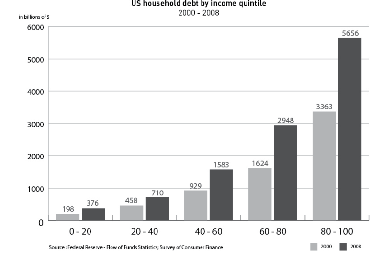
这张图表很清楚地表明，不仅穷人负债，而且富裕家庭-对债务的大部分增加负责，我们应该把非金融债务加在一起。-已经变得庞大的社会和金融公司（银行、投资基金等）（见下表）。低收入家庭越来越多地通过债务为其消费提供资金，以弥补其工资的停滞或下降。20%最贫困家庭的债务在2000年至2008年期间增长了90%，使其成为次级贷款机构的自然目标。
然而，如果我们看看贷款的数量，最富有的20%贡献了2000年至2008年间家庭债务增长的一半。最富有的20%的债务增加了近22000亿美元，而最贫穷的20%的债务增加仅为1780亿美元，仅为最富有的20%债务的12%。这很有启发性：富人负债主要是为了投机。
在股票市场和房地产行业，通过购买他们没有居住或使用的住房和商业用房。这些富裕家庭（以及他们控制的公司）推测房地产价格上涨。艾伦·格林斯潘自己也暗地意识到了这一点。
他在回忆录中写道，2005年25%的购房者是投资者，而不是“次贷”家庭，这对投机性泡沫的产生和破灭起到了很大的推动作用。
重要的是要铭记 财富在美国和其他高度工业化国家的不平等分配。2010年，最富有的1%持有美国总财富的35%。从广义上讲，这与资产阶级相对应，后者拥有令人印象深刻的财富集中。最富有的10%拥有总财富的70%。这个额外的9%代表了资本主义阶级的随从或广义上的同盟。剩下的90%必须与30%的财富有关，而最贫穷的50%只占有5%
美国的私人债务在1980年至2008年间不断增加。家庭通过越来越多的借贷来资助他们的开支——穷人补偿他们收入的下降，富人通过“杠杆”的魔力从他们增加的收入中赚取更多的钱（见第4章）。银行和其他金融公司的债务呈指数级增长。（28年内增长超过600%）。在美联储1979年提高利率、储蓄银行和贷款银行得到纾困之后，公共债务在1980年代大幅上升，20世纪90年代（克林顿政府时期）下降，2000年至2008年在乔治W布什政府期间又开始增加。在这一点上，公共债务不到总债务的六分之一，也不到私人债务的五分之一。
美国 ：1980-2008年按机构部门分列的债务总额和债务（占国内生产总值的百分比）
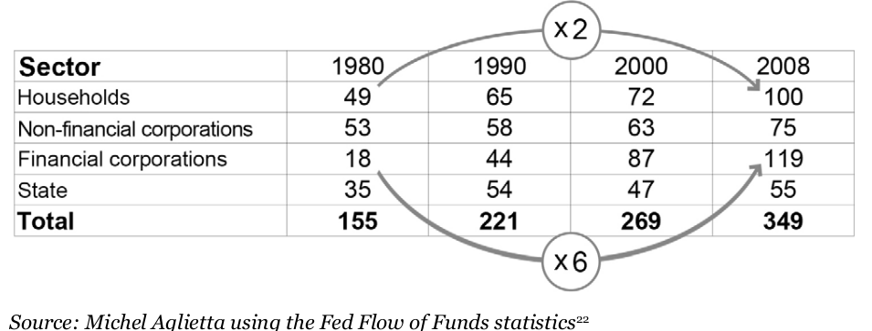
与此同时，在欧洲，与私人金融部门的过度发展相称的是，欧洲私人银行的资产量在20世纪90年代急剧上升，2007年达到421000亿欧元（是欧盟27个成员国GDP的三倍多）。
在2007年,欧元区私人银行的债务（占负债额）也是27个成员国GDP的三倍。
2007年，欧元区成员国的债务总额占其国内生产总值的66%。以下是西班牙和希腊的具体信息:
| 国家 | 2007年金融部门总负债占GDP的百分比 | 2007公共债务占GDP的百分比 |
|---|---|---|
| 希腊 | 239% | 108% |
| 西班牙 | 162% | 37% |
| 欧元区 | 309% | 66% |
该打气筒已准备好应对私人债务危机，使之成为公共债务危机。
下表和图表清楚地说明了这一点。该表显示，欧元区公共债务在2000年至2007年间开始下降。公共债务的减少在西班牙尤为显著。另一方面，在整个欧元区，特别是在西班牙、葡萄牙和希腊，金融公司（银行）的债务继续增长。家庭和非金融公司的债务也是如此。在世界各地，2007年之后，由于危机和政府银行纾困，公共债务的增加是显著和突然的。
| one | two | 2000 | 2001 | 2007 |
|---|---|---|---|---|
| 欧元区 | ||||
| 公债总和 | 68 | 66 | 82 | |
| 家庭债 | 49 | 54 | 61 | |
| 非金融公司债 | 76 | 87 | 96 | |
| 金融公司债 | 232 | 309 | 333 | |
| 西班牙 | ||||
| 公债总和 | 58 | 37 | 62 | |
| 家庭债 | 46 | 83 | 81 | |
| 非金融公司债 | 60 | 116 | 118 | |
| 金融公司债 | 137 | 162 | 203 | |
| 葡萄牙 | ||||
| 公债总和 | 49 | 63 | 96 | |
| 家庭债 | 59 | 84 | 93 | |
| 非金融公司债 | 97 | 112 | 123 | |
| 金融公司债 | 349 | 266 | 306 | |
| 希腊 | ||||
| 公债总和 | 104 | 108 | 162 | |
| 家庭债 | 14 | 42 | 56 | |
| 非金融公司债 | 42 | 53 | 58 | |
| 金融公司债 | 200 | 239 | 311 |
source:Morgan Stanley Research Database
1929年10月的华尔街崩盘，1933年巨大的银行业危机和1930年代欧美长期的经济危机，使当时的美国总统罗斯福和欧洲各国政府对金融业进行了严格的监管，避免了严重的证券交易和银行业危机的重演。正如北美新自由主义经济学家卡门·莱因哈特（Carmen M.Reinhart）和肯尼斯·罗格夫（Kenneth S.Rogoff）在《这一次是不同的：八个世纪的金融愚蠢》（This Time is Different:8 centrary of Financial fully）一书中所展示的那样，这些政治措施在第二次世界大战后的三十年里大大减少了银行业危机的数量。Kenneth Rogoff是国际货币基金组织（IMF）的首席经济学家，大学教授Carmen Reinhart是IMF和世界银行的顾问。根据他们的分析（这与主流的说法非常一致），银行业危机数量少得多的主要原因是对国内金融市场的监管（不同程度），其次是二战后多年来大量诉诸资本管制。
罗斯福和西欧各国政府（为应对二战后的民众压力）采取的主要措施之一是限制和严格管制银行使用公共资金的方式。这一保护存款的原则导致了商业银行和投资银行之间的分离，最著名的形式是美国的《格拉斯-斯蒂格尔法案》（Glass-Steagall Act），尽管它在欧洲国家也有一些不同的应用。
在这种银行业务分离的情况下，只有商业银行才能从公众那里获得国家担保存款。同时，它们的活动领域也减少到向个人和公司发放贷款，不包括以股票或任何其他金融工具的形式发行证券。另一方面，投资或贸易银行必须在金融市场上获得资源，才能发行证券、股票和其他金融工具。
二战后的欧洲，在某些情况下，银行业的严格监管和国有化应该在社会斗争的背景下看待，社会斗争（social struggles） 表达了对一个不同于20世纪30年代的社会的渴望，他们拒绝那些曾经支持或与纳粹和法西斯合作的金融巨头，在这样做的同时，大大增加了他们的财富。
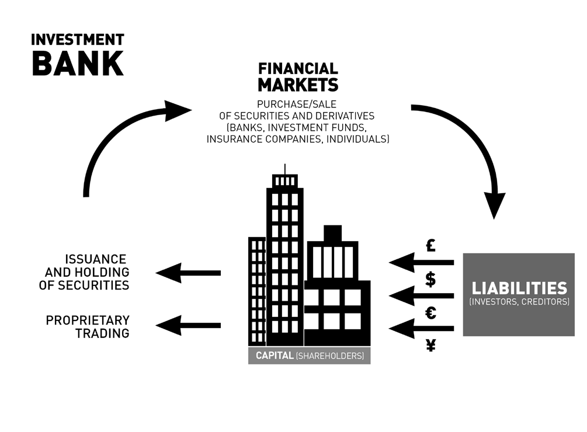
20世纪70年代末的新自由主义转变使这些规定受到质疑。大约20年后，银行放松管制和一般金融放松管制迈出了巨大的步伐。正如肯尼斯·罗格夫和卡门·莱因哈特所展示的那样，银行业和证券交易所的危机在20世纪80年代开始成倍增长，并变得越来越严重。
在传统的银行模式中，银行从长期的监管期中继承过来，对信用风险进行评估和承担。换言之，他们分析信贷请求，决定是否发放贷款，一旦发放贷款，就将其保留在资产负债表上，直到贷款还清。这被称为“原始持有模型”。金融放松管制使银行放弃原始持有，以增加其股本回报率（见第5章：什么是股本回报率（ROE）.
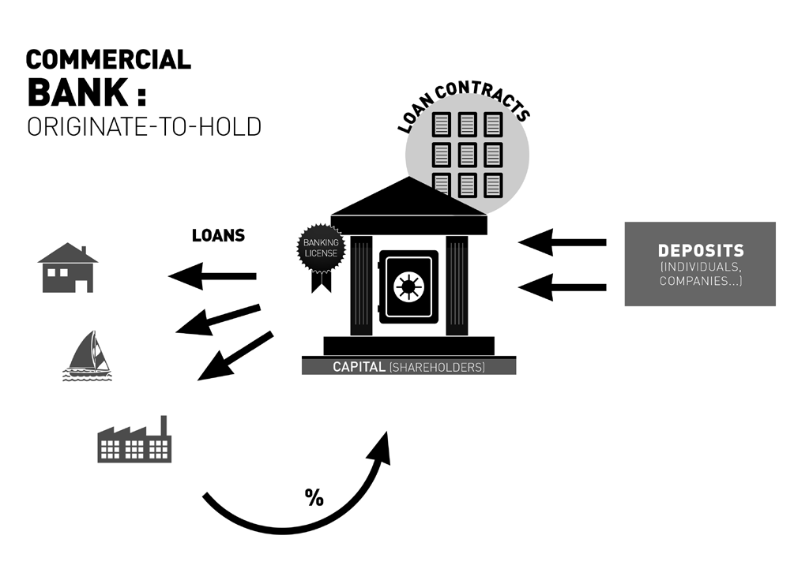
然后，银行大量使用证券化，这包括将银行贷款转化为金融证券，然后再转售。这样，他们就扩大了活动范围，增加了利润，而不必把贷款和附带的风险记在账上。因此，银行将贷款转换为结构性金融产品形式的证券，并出售给其他银行或私人金融机构。这种新的银行模式被称为“发起分销”或有时“发起、重新包装和出售”。这一体系对银行有双重优势：当一切顺利时，它通过取消银行从资产中获得的贷款来降低信贷风险，并为银行提供额外的投机资源。
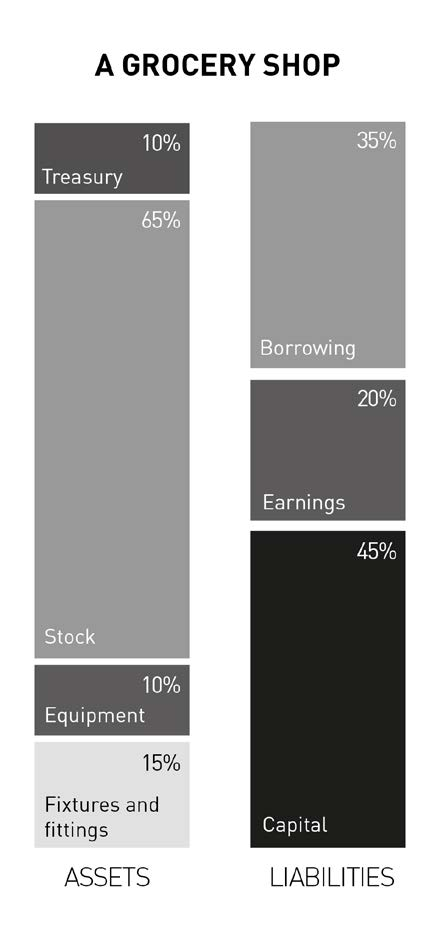
什么是银行资产负债表？
一家公司的资产负债表列出了它的资产以及这些资产在特定时间点的融资方式。对于生产或分销商品的公司——例如杂货店（见图表），资产负债表大体上分为存货、设备（收银台、货架、冰箱等）和现金，所有这些都列在资产侧。这是杂货店的东西。在负债方面，表明商店是如何融资的，有资本（所有者为企业融资而投入的资金）、公司内部为其发展融资而保留的累积利润（例如更新设备或重新装修商店）、银行贷款和供应商以到期日形式授予的债务，以便杂货商为部分存货提供资金。
在任何给定的时间，资产=负债(ASSETS = LIABILITIES)。换言之，应当始终能够确定某一特定资产的融资来源，并在另一个方向上确定如何使用某一特定的财务资源。
同样的原则也适用于银行，但很明显，银行的资产和负债类型截然不同。传统（商业）银行的资产是向其客户发放的贷款和银行进行的投资（见马丁莫雷尔银行资产负债表中的“证券Securities”部分）。这些贷款实际上是合同，或者是偿还的承诺，这使得它们成为银行的资产。该行的资产还包括存放在央行的准备金和向其他银行的贷款。
马丁莫雷尔银行（储蓄银行）
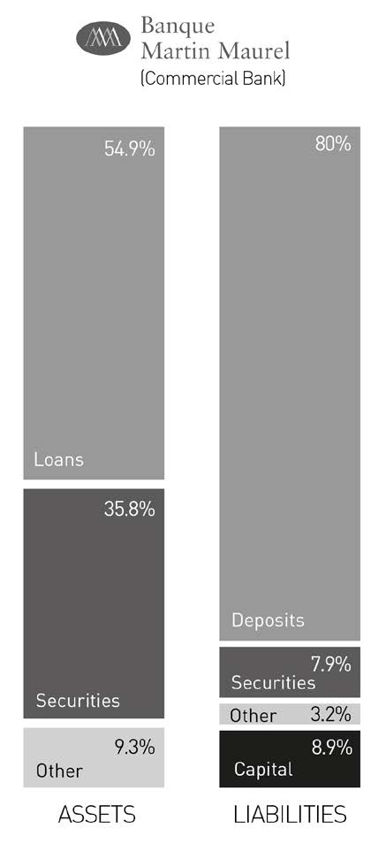
负债是部分由银行股本（股东投资的资金）提供资金的信贷，但首先是客户存款，实际上是银行欠客户的债务。鉴于该行的股本仅为发放贷款的几%，它还将不得不使用银行间融资（从其他银行借款）和市场融资（例如通过发行债券从金融市场借款）。
本说明适用于一家简单的商业银行，该银行仅作为存款和信贷银行运营（见Banque Maurel图表）。当一家银行参与传统的投资银行活动时，资产负债表上会出现其他类别。存款被金融证券（银行为自身融资而发行的债券）和银行间市场上的借款所取代。对客户的贷款被交易活动所取代。
如果该银行将存款、信贷和保险业务结合起来，它将成为一家“全能银行”，其资产负债表将再次发生变化（见巴黎银行、巴克莱银行和德意志银行的资产负债表图表）。这些资产现在包括由于各种交易活动（主要是股票、债券和衍生品）而持有的金融证券，以及更普遍的资本市场活动。
巴克莱、德意志银行和法国巴黎银行
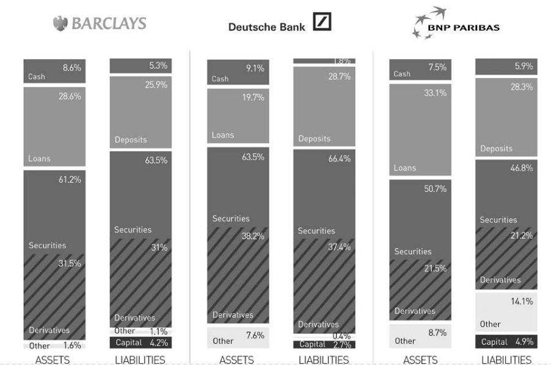
为了为这部分业务融资，该行将向其他银行（非常短期的贷款，不超过几天）和金融市场借款，例如发行债券（短期和中期——几个月或几年）。全能银行和投资银行一样，高度依赖市场融资。它的资产（证券的价值可能会突然发生变化）和负债（例如，2008年金融市场的“收缩”切断了许多银行的金融资源；其他银行或其他放款人发放给银行的贷款在一夜之间价值大幅下降）。
如上所述，负债表明了银行资源的来源，即银行所募集的资金。这些资产显示了这些资金是如何使用的。有人说，“告诉我你吃什么，我就告诉你你是谁”（Tell me what you eat and I' ll tell you who you are）。有人可能会说，‘银行，告诉我你的负债是多少，我会告诉你你是哪种银行’。如果你以证券形式借款的比例超过了你客户的存款（也就是你客户向你提供的贷款），那么你就在冒着极大的风险，代价是他们的。至于资产，如果证券组合（在你自己的账户或第三方账户中持有）超过了给你客户的贷款量，这意味着你比传统的中介活动（收取存款和贷款）更重视金融市场。
法国经济和财政部的网站提供了有启发性的数据，表明随着银行发展投机性活动，银行资产负债表的构成已经危险地演变了多少：
如果我们看看法国所有银行机构的资产负债表，1980年存款占负债的73%，而2011年仅占26%。1980年贷款占资产的84%，但2011年仅占29%。这是银行在金融市场上的活动的结果，在金融市场上，银行发挥着重要作用，投资于自己的账户（直接持有证券），或投资于第三方账户，或作为金融产品供应商，或作为做市商。从资产负债表上看，这一趋势表现在证券和银行间贷款的重要性日益增加，1980年占法国银行负债的19%，2011年占54%。
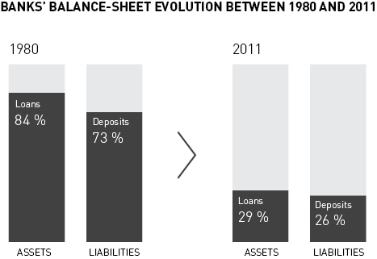
2011年，法国银行持有的衍生品数量是其资产负债表总值的11倍。
不适当的称为“综合银行（universal bank）”的发展
因此，另一个非常重要的变化是，在1980年代或1990年代，根据国家的不同，取消商业银行和投资银行之间的分离。这就产生了我们现在所知道的环球银行。全能银行（也称为“全方位服务银行”）是一种大型金融结构，它将商业银行、金融和投资银行、资产管理、保险代理（“银行担保”）等所有不同的银行业进行分组和实践。全套服务通过子公司在国内外提供。这种银行模式的主要危险在于，金融和投资银行的高风险活动所造成的损失也必须由作为全能银行一部分的商业银行承担，从而危及中小储户、店主、中小企业和公共管理机构的存款——他们在银行的资金。此外，由于储蓄存款由国家担保覆盖，自2008年以来，国家担保保护了欧洲高达10万欧元的存款，而且由于商业银行（处理信贷、储蓄和支付）对经济运行至关重要，因此当普遍性银行面临倒闭风险时，国家有义务进行干预。所有31家主要银行都已转型为全能银行，规模已大到国家无法允许它们破产（“大到不能倒”）。它们在金融市场上的活动得到了鼓励，因为所有的综合银行活动都得到了隐性的国家担保，即使是风险最高和最投机的活动也不例外！
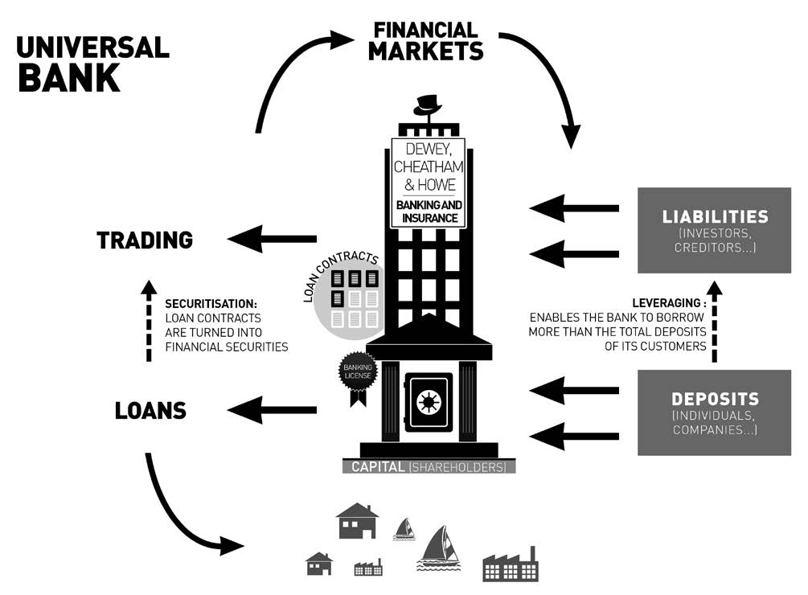
这本书分析了银行危机及其政府部长的管理。然而，重要的是，不要把对银行业危机及其可能解决办法的分析与整个资本主义社会的演变以及应当寻求的全球替代办法隔离开来。2007-2008年爆发的银行业危机应该放在一个更为普遍的背景下，即从20世纪70年代末开始的以金融为主导的资本积累新阶段，这一新阶段是西欧和美国开始并随后蔓延到全球的新自由主义转变的基础。
简单地说，自20世纪80年代以来流行的新自由主义政策使资本家能够增加他们在国民收入中所占的份额，而支付工资的部分却减少了。因此，雇主提高了利润率。
工资占GDP的比例图表显示，美国在20世纪70年代初至2012年间下降了8个百分点。在欧洲，从1970年代中期到2007年，这一数字也下降了8个百分点。
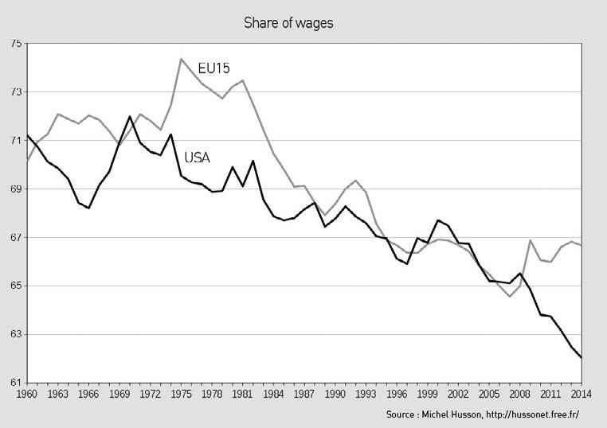
利润率占国内生产总值百分比的演变曲线图显示，从20世纪80年代初的新自由主义转变开始，美国和欧洲的利润都有所上升。
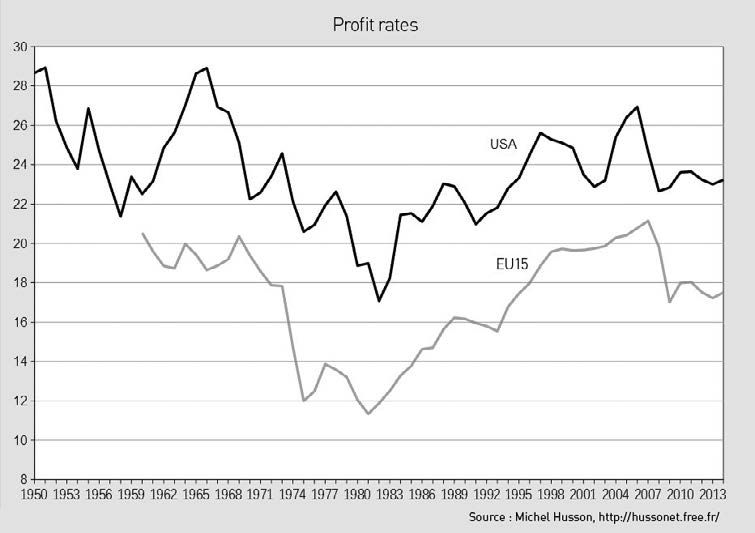
然而，私人消费在20世纪90年代持续增长，直到2007-2008年危机爆发，因为这主要是由贷款支持的，正如欧盟和美国的两个“消费和工资”图表所示。
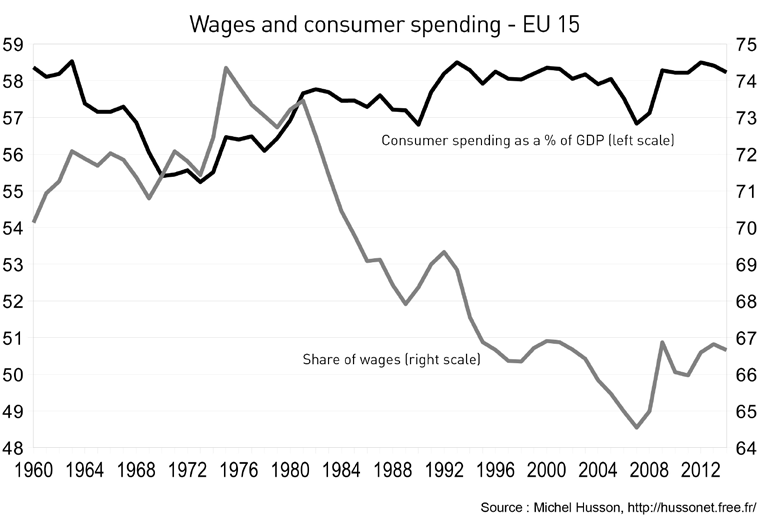
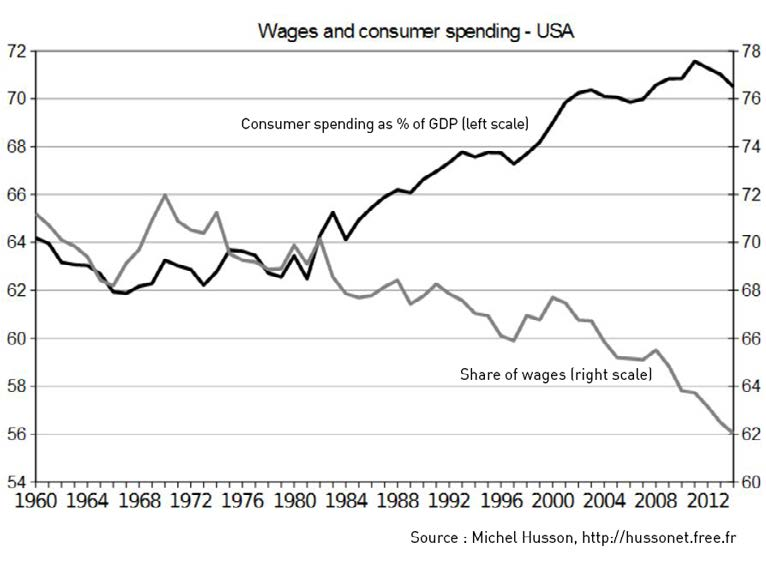
下图对西班牙来说非常清楚地表明，工资占国民收入百分比的下降与2007年之前家庭负债的增加相抵消。
工资占国民收入和家庭债务占可支配收入的百分比
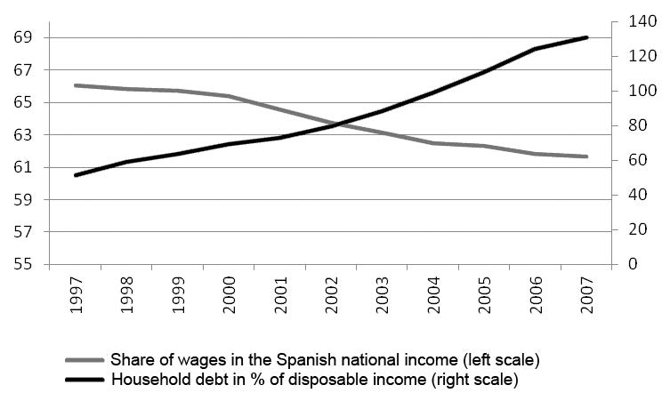
美国和欧洲大部分地区（英国、爱尔兰、西班牙、希腊、葡萄牙、意大利、荷兰、中欧和东欧国家）的家庭债务大幅上升。
资本家们把利润的一小部分投资于生产，宁愿把利润作为股息分配给股东，从而增强了金融市场的力量。
自20世纪80年代以来，金融市场的增长在很大程度上是由主要工业集团没有再投资于生产，而是分配给股东的利润所推动的。根据里尔1大学 （Lille 1 University）发表的一项研究：
我们看到，在大约30年的时间里，公司用于支付股东报酬的资金至少增加了一倍，与用于扩大和改善生产资本相比，而在20世纪80年代初，情况正好相反，当时分配的利润仅为用于积累的资金的一半
金融市场的惊人增长也是一座巨大的债务大厦的结果，其中绝大多数是与非生产活动相对应的虚拟资本。
从20世纪80年代到今天，虚拟资本大规模生产过程中创造的价值被大规模吸走，这表明我们与凯恩斯的“租者安乐死(the euthanasia of the rentier)”愿望截然相反。为了满足银行、养老基金和其他金融公司所代表的有息资本的需求，劳动力和生产周期被越来越多地调动起来。
大型工业集团（如阿塞洛-米塔尔、西门子或标致）认为，他们的实际生产只是开发资本的一种方式。形容词“全球”，现在用来描述这些跨国集团的战略，因此有两个互补的含义。这表明，它们在全球范围内开展工作，而且它们的战略显然是以资产发展政策为基础的，这一政策至少与工业一样具有金融性。许多传统上从事生产的公司现在像金融集团一样运作，它们根据投资于不同活动和子公司的资本的盈利能力做出决策。实际上，最大的集团只是自我拥有的银行。
从新利润中积累的资本中，越来越多的部分没有投资于生产。直到2000年，这些额外的资本都被投入到股票和过去所谓的“新经济”中。它提供了所需的现金资产，以支持2001年以前的并购、2006-2007年以前的美国证券交易所和房地产、2003年以前的原材料大宗商品和2007-2008年的食品等大宗业务。货币汇率、债券、原材料期货市场、农产品期货市场及衍生产品投机活动不断增加。
金融业的过度发展是当今世界资本主义阶段的特征之一，可以用多种方式来衡量。从1986年到2004年，世界生产总值（）增加了三倍，商品和服务出口增加了五倍，其中国际证券（即债务、股票和债券）的发行量增加了七倍，国际银行贷款增加了八倍，货币市场的交易量增加了九倍，衍生品市场增加了98倍
金融放松管制的阶段
直到20世纪70年代，金融和货币体系基本上在国家一级划分。美国总统尼克松（Richard Nixon）1971年决定通过取消美元对黄金的可兑换性来结束布雷顿森林体系，这导致了浮动汇率的产生，大大开放了国际外汇市场。
从1979年起，主要工业化国家的政府领导人采取的措施逐步结束了对国际资本流动的控制。他们开放了，或者换一种说法，去条块化的国家金融体系。{They liberalised, or to put it another way, de-compartmentalised, national financial systems.}
这分为三个阶段：第一，货币兑换市场的完全分离（decompartmentalisation）；第二，债券市场的分离；最后，股票市场的分离（1986年）。
20世纪80年代，对利率、信贷和资本流动的各种形式的行政管制逐步取消。大多数工业化国家的主要领导人都有意识地选择了这一选择。这导致面临金融一体化力量的民族国家无序撤退。一个接一个的国家在世界上流通的大量资本面前退位，听任他们帮助创造的现实。为了吸引资本，他们相互竞争，为了这样做，放弃了对资本收入的大部分税收。
企业利润税率
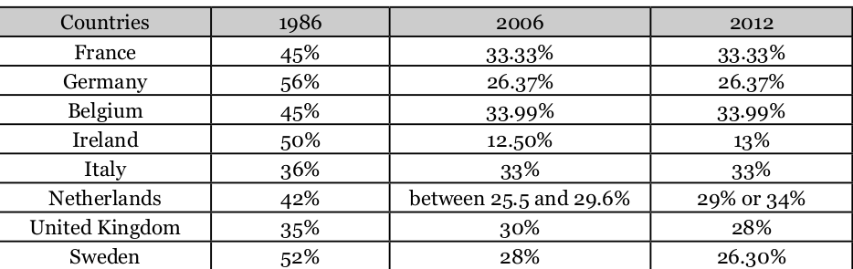
从1980年代和1990年代到今天的欧洲一体化进一步加剧了政府领导人对主要私人金融、工业、商业和通信公司的共谋和顺从。欧盟和欧元区相继签署的条约使私人资本的发展陷入僵局。{The successive treaties of the EU and the Eurozone set in stone the diktats of private capital.}
金融市场上的主要参与者
金融市场上真正有价值的参与者并不多：大型国际银行（根据所采用的标准，全球范围内有30至50家银行）无疑是主要参与者。如果我们把全球金融市场管理的所有资产加起来，我们将达到2.25万亿美元（即3倍的全球生产总值）。
2013年，这些银行的国际资产总额超过100万亿美元。如果我们将他们通过“影子银行”（见下文）管理的业务考虑在内，这个数字肯定会达到至少140万亿美元。2013年，仅50家最大的国际银行就拥有66万亿美元的资产。
2013年的其他主要参与者是：
The BlackRock phenomenon 贝莱德现象
在这些共同基金中，应该提到两家正在成长的大型投资服务公司：管理着4.1万亿美元资产的贝莱德（BlackRock）和德国安联保险公司（Allianz）的子公司PIMCO（US），它管理着近2万亿美元的资产。
在银行业危机之前和期间，贝莱德收购了美林（Merrill Lynch）和巴克莱（Barclays）的主要子公司。它是摩根大通（美国最大银行）、苹果、微软、埃克森移动、雪佛龙、荷兰皇家壳牌、宝洁和通用电气的主要股东，持股比例在4.9%至6.2%之间。它是巴菲特旗下伯克希尔哈撒韦（Berkshire Hathaway）（6.8%）、谷歌（Google）、强生（Johnson&Johnson）、富国银行（Wells Fargo）（美国第四大银行）和中石油（PetroChina）的第二大股东。它是雀巢（Nestlé）最大的股东（3.7%），还拥有沃尔玛、罗氏（Roche）和诺华（Novartis）的大量股份。刚才提到的17家公司在各自的领域占据主导地位。就资本价值而言，它们是世界上最大的证券交易所之一。贝莱德拥有一家名为阿拉丁（Aladdin）的风险管理咨询公司，为持有逾11万亿美元资产的公司提供咨询，是穆迪（Moody's）和标准普尔（Standard&Poor's）的股东（通过其所有者McGraw Hill），这两家公司是三大最重要的国际信用评级机构之一。
为了进一步说明贝莱德的影响力：2009年至2013年，美国财政部长蒂姆•盖特纳（Tim Geithner）在2011年1月1日至2012年6月30日期间，给贝莱德董事长拉里•芬克（Larry Fink）打了49个电话。他只给杰米·戴蒙（摩根大通）打了17次电话，美国银行的布莱恩·莫伊尼汉和摩根斯坦利的詹姆斯·戈尔曼各打了5次电话。
最后，值得注意的是，贝莱德是受三驾马车（欧盟委员会、欧洲央行和国际货币基金组织）委托于2014年对希腊银行进行审计的。
金融和货币兑换市场
货币兑换市场是全球金融市场的一部分，与衍生品市场一起增长最快。从1970年到2013年，货币兑换交易量增加了500多倍（从刚刚超过100亿美元增加到每天53000亿美元）。虽然从理论上讲，货币兑换市场的主要功能是促进国际贸易，但2013年，与商品兑换相关的交易总额甚至不到这些兑换市场交易总额的3%。
下表将货币兑换业务的日交易量与全球商品出口的年交易量进行了比较。1979年，相当于200天的货币兑换市场活动，才达到世界年出口量。到2012年，只需要四天的货币兑换市场活动，就可以实现全球商品出口的年额。这表明金融市场的活动在多大程度上与生产性经济和货物贸易脱节。
货币市场和出口的增长
| 年份 | 货币市场日成交额合计(十亿美元) | 年度世界出口(十亿美元) |
|---|---|---|
| 1979 | 75 | 1546 |
| 1984 | 150 | 1800 |
| 1986 | 300 | 1998 |
| 1990 | 500 | 3429 |
| 1994 | 1200 | 4269 |
| 1998 | 1800 | 5142 |
| 2001 | 1250 | 6155 |
| 2005 | 2100 | 10159 |
| 2007 | 3500 | 14023 |
| 2012 | 4600 | 18300 |
| 2013 | 5300(79年的70倍) | 18800(79年的12倍) |
2013年，仅四家银行就控制了50%的外汇市场（德意志银行15.2%，花旗集团14.9%，巴克莱银行10.2%，瑞银10.1%）。如果我们再增加六家银行（汇丰、摩根大通、苏格兰皇家银行、瑞士信贷、摩根斯坦利和美国银行）。我们达到了市场的80%。50%的外汇交易发生在伦敦市场。
除了对外汇市场的投机之外，另一项活动也发展起来：衍生品市场。
衍生品市场
在一个相对货币价值不断波动、投机活动大大放大的世界里，衍生品的倡导者解释说，衍生品使公司能够为自己抵御货币汇率和利率风险。
机制很简单：如果欧元区的一家公司希望进口一种以美元计价的产品，并对美元的价值充满信心（用美元升值来掩盖自己，这将提高购买价格），他们就会购买一种选择权（或“买入”），以固定价格购买美元。为此，他们向 期权 发行人支付溢价。在到期日（由双方决定的日期），有两种可能的解决方案：要么美元贬值，在这种情况下，欧元区进口商宁愿少付产品的货款，也不行使他们的选择权（而发行人将溢价据为己有）；要么美元升值，在这种情况下，进口商行使其选择权，发行人必须按预定价格提供美元，即低于实际价格。
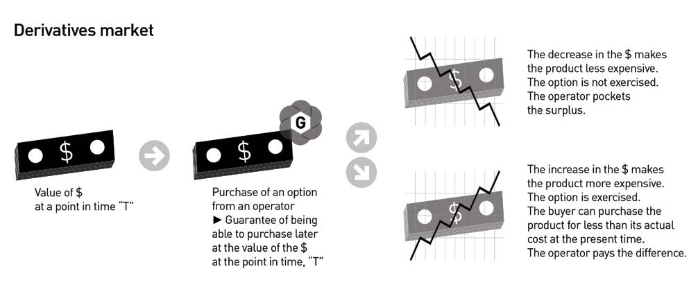
利率互换是迄今为止衍生品市场中最大的一部分（见下图）。利率互换是经双方同意，将固定利率计算的利率现金流与浮动利率计算的利率现金流进行交换的合同，而不必真正交换金额。考虑一个以浮动利率负债的市议会（例如12个月期欧洲银行间同业拆借利率债券）。为了抵消利率的上升，他们同意用12个月期欧元银行同业拆借利率与4.5%的固定利率互换。在每个固定到期日，交换利率与欧元银行同业拆借利率进行比较。
如果欧元银行同业拆借利率为5%，即高于固定利率，则地方当局根据欧元银行同业拆借利率（5%）支付债务利息，但从同意进行互换的银行收到两种利率之间的差额（即0.5%）。因此，贷款的实际利率为4.5%。
如果欧元银行同业拆借利率为4%，即低于固定利率，则理事会根据欧元银行同业拆借利率（4%）支付债务利息，并向银行支付两种利率之间的差额（即0.5%）。因此贷款的实际利率仍然是4.5%.
由克劳德·巴托龙（Claude Bartolone）主持的法国国会2011年高风险金融产品调查委员会（French National Assembly's 2011 commission of Investigation of The high risk financial products）强调了地方当局正在承担的风险：“就结构性掉期而言，被判定为高风险的名义金额高达25300亿欧元， 占总数的38.6%。
确定参考利率的是各大银行，如果它们之间达成一致，它们就有办法操纵参考利率——伦敦银行同业拆借利率（LIBOR）就是这样，见下文第23章。有人怀疑，作为380万亿美元市场基准的ISDAFIX利率也受到了操纵。美国监管机构商品期货交易委员会（CFTC）已对此事展开调查.
他们的辩护人认为，衍生品的作用是让投资者通过将新的波动转移给另一方，而另一方同意接受风险，以此来弥补自己的损失：即为了溢价，另一方承担生产性投资者的风险，作为一种保险形式。
面对监管放松带来的日益不稳定，衍生品正以闪电般的速度发展，呈现出越来越多样化的形式。根据ISDA（国际互换和衍生品协会），一个将出售衍生品的银行组合在一起的私人组织，82%的衍生品由世界上最大的14家银行持有。
根据国际清算银行（bankforinternationalsettlements）的数据，只有7%的衍生品拥有非金融衍生品。这意味着，绝大多数衍生品业务完全是投机性的，与商品交易脱节。举个例子：两家投机性银行根据一个月内小麦和石油的市场价格之间的相关性，就一种衍生品达成了一致。例如，如果小麦和石油价格之间的相关性保持在3%的幅度内，投机者a就是赢家。如果相关性超过3%的边际，投机者B就把赢来的钱分赃。可以很容易理解，任何一方都不能不关心这两项资产的性质。他们对小麦和石油的唯一兴趣是作为一个月的投机变量。
超过90%的衍生品是通过共同协议（场外交易）出售的，即在一个完全不受监管或控制的市场上出售。衍生品市场的交易量实际上已经激增。从1998年的94万亿美元（按名义价值计算）到2007年的650万亿美元和2011年的700万亿美元。这大约是世界总产值的十倍！
根据ISDA的数据，全球500家最大的银行中，94%的银行使用衍生品（按规模排列，涉及汇率风险、利率、原材料和信用违约掉期；见下文）。绝大多数衍生品是由银行生产和商业化的。对他们来说，这是一个垄断市场。相对于银行，对冲基金（其中一些属于银行）在衍生品市场上的份额并不高。正如我们所看到的，它们只相当于2.5万亿美元，而银行手中只有100万亿美元（不包括影子银行的其他参与者）。
其中四家银行（巴克莱银行、巴黎银行、德意志银行和苏格兰皇家银行）持有的衍生品名义价值超过其资产的20倍，严格意义上超过其股本的300倍。
| 银行 | 银行持有的与其资产相关的名义价值衍生品 |
|---|---|
| 苏格兰皇家银行 | 30 倍 |
| 德意志银行 | 28 倍 |
| Barclays | 28 倍 |
| BNP Paribas | 25 倍 |
| BPCE | 7 倍 |
Source: Liikanen Report. p.45, Chart 3.4.8.
利率互换占74%，货币兑换衍生品占8%，信用违约互换（CDS）占5%，股票衍生品占1%。其余的包括许多不同的产品。
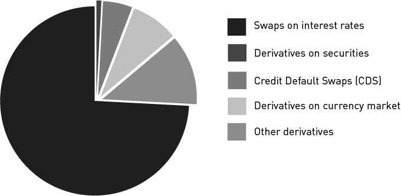
根据国际清算银行（Bank for International Settlements）的数据，伦敦拥有40%至50%的衍生品市场。
资本繁衍的神话
必须在对整个资本主义社会的演变有一个更为全球性认识的框架内，分析银行危机及其政府部长的管理。这本书中的分析与经济学家们的分析是一致的，比如弗朗索瓦·切斯奈斯、米歇尔·侯森、比比安娜·米德尔达、纳乔·阿尔瓦雷斯、厄兹勒姆·奥纳兰、科斯塔斯·拉帕维察和让-马里·哈里比等等。哈里比，在他的书《财富，价值和不可估量》中。《资本家社会经济学评论》（Fondements d'une Critical Social-cologique de l'Economic capitaliste）《资本主义经济学的社会生态批判基础》，完美地概括了资本主义制度的变革以及该制度的演变与当前危机之间的内在联系：
第一个转变涉及资本主义经济的金融化，通常被委婉地称为“全球化”。在资本流动自由化进程开始三十年后，也就是在重新确立利润率之后，通过大幅度扭曲有利于资本和有利于劳动的增值分享，暂时解决了1960年代末和1970年代严重的盈利危机，资本主义揭示了它的极端暴力和脆弱性。金融危机发生的频率太高，不能归咎于事故、市场缺乏透明度或相关参与者缺乏道德原则。它们是资本主义向最纯粹、同时也是最野蛮的逻辑演进的结果：为股东创造价值——资本流通、放松管制、金融产品扩散的最高目标，以及中央银行的证券化和去政治化，以便它们能够更好地为金融市场上的运营商服务。在调整所有活动以利用利润率最高的地方产生价值的可能性以及信息和通信技术带来的变化的背景下，该制度鼓励公众相信一个“新经济”正在发挥作用，使人人都能获得财富。市场的竞争将导致最佳选择，股市的繁荣是普遍繁荣的希望。钱赚了钱，我们可以相信养老基金能解决人口老龄化问题，为越来越多的退休人员发放养老金
资本繁衍的神话就是这样形成的。它具有丰富的美德，能够自我复制，获得超越任何生产现实的价值。最后，资本可以梦想摆脱劳动，最终摆脱劳动，实现自身增长。这是一个与资本主义本身一样古老的神话，但又被复杂的理论结构所复活：由于自我实现预言的魔力，资本的价值不再与经济的“基本”指标挂钩，即生产、增长和销售商品所获得的利润。甚至会计准则也被修改，以评估公司的资产，不是根据公司的实际购买或重置价值，也不是根据公司的剩余价值，而是根据金融市场长期波动对公司的价值。毋庸讳言，金融泡沫的周期性破灭粉碎了资本繁衍的神话，其威力更大，因为我们每次都看到金融证券持有人无法同时“清算”其股票。但金钱的“拜物教”总是在表面之下。当泡沫破裂时，人们最常说的话是“数十亿美元已经化为乌有”或“蒸发殆尽”。然而，真正消失在空气中的是:随着泡沫的上升，资本不断增长的幻想
在某些情况下，这种虚拟资本会对实体经济产生影响，从而对工人阶级产生影响，造成大规模的生产性资本破坏过程。其结果是公司破产，造成大规模失业。
放松管制使私营金融部门，特别是银行，能够建立或推动其限度内的各种机制，这些机制是银行业危机的根源。
Leverage杠杆 杠杆是银行投机的主要工具之一。法兰西银行给出了杠杆率的定义：
杠杆效应衡量给定经济盈利能力下负债对财务回报的影响。在同意负债时，公司或金融机构的股东期望因承担额外风险而获得更高的回报
银行尤其充分利用了这一效应。Xavier Dupret清楚地描述了杠杆现象：
近年来，银行业通过所谓的杠杆作用积累了大量债务，杠杆作用是通过借贷来提高自身股本的盈利能力。这意味着所选项目的回报率需要高于借款支付的利率。随着时间的推移，杠杆率增加，这就造成了问题。2008年春天，华尔街投行的杠杆率在25至45美元之间（每1美元的股东权益，它们就借入了25至45美元）。美林的杠杆率为40。这种情况是爆炸性的，因为一家杠杆比率为40:1的机构可能会因收购资产价值下降2.5%（1/40）而失去股东权益。
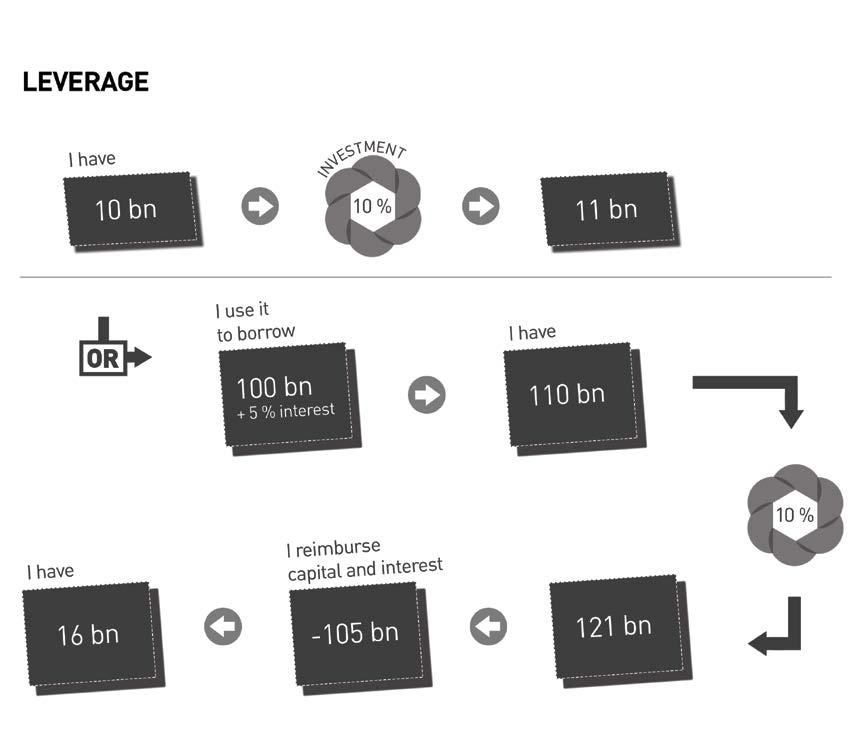
表外业务Off-balance-sheet practices
由于放松管制，银行得以开展需要巨额融资（因此也包括债务）的活动，而无需在资产负债表上申报。资产负债表外业务用于说明银行尚未产生付款或收款，但为银行带来风险的活动。这些通常是有关衍生品、外汇或签字承诺的持续合同，完全合法。它们被大量使用，以隐藏银行在衍生品市场上大量操作所带来的巨大风险（见下文）。
根据法国经济和财政部官方网站，法国银行2010年和2011年的表外头寸如下：
| 项目\年份 | 2010 | 2011 |
|---|---|---|
| 融资承诺： - given - received |
- 1,038.76 539.69 |
- 950.26 463.08 |
| 担保承诺: - of order - received |
- 1,075.34 1,061.07 |
- 1,108.79 1,213.36 |
| 证券承诺: - securities to be received - securities to be delivered |
- 220.27 220.53 |
- 184.98 188.60 |
| 货币交易: - currencies to be received - currencies to be delivered |
- 5,844.34 5,852.64 |
- 6,071.95 6,060.34 |
| 远期金融工具（衍生品）承诺 | 91,292.73 | 95,922.43 |
| 总计(十亿欧元) | 107,145.37 | 112,163.79 |
来源: Ministère de l’Économie et des Finances, « Les comptes d’une banque. Hors-Bilan», 2013, Available at http://www.economie.gouv.fr/facileco/comptes-dune-banque
过去几年，银行的表外会计不断增加。
银行最大的表外项目是对衍生品交易等远期金融工具的承诺。2011年，所有银行的这些承诺总额约为96万亿欧元，是其资产负债表总价值的11倍。利率交易工具占了其中的大部分——2011年为84739万亿欧元{ 写错?€84,739 trillion}。这是银行向客户发放贷款总额的34倍。这个数字是银行在金融市场活动的一个显著例子。
据劳伦斯·西亚洛姆说，在美国：
资产负债表外头寸中的巨额承诺反映在参与这些承诺所获得的收入份额以及与之相关的交易在银行总收入中所占份额的增长。
这一比例在1960-1980年期间为19%，到1999年已上升到银行净收入的43%
鉴于资产负债表外业务量巨大，任何与之相关的重大金融事故，包括衍生产品，都可能危及该行。然而，大银行毫不犹豫地大量使用它们，因为正如劳伦斯•西亚洛姆（Laurence Scialom）也指出的那样，它们可以创造可观的收入，并可以用来从监管当局的角度筛选风险。
影子银行
影子银行是另一种投机工具，也是完全合法的，并得到监管部门的许可。
金融影子银行活动主要是由各大银行自行设立的金融公司（货币市场基金、对冲基金、投资基金等）代表各大银行开展的，称为特殊目的工具（SPV）。这些公司不接受存款，因此能够在不受国家或国际银行条例和/或监管当局约束的情况下经营。贝莱德（BlackRock）和太平洋投资管理公司（PIMCO）等资产管理公司也积极参与影子银行业务，并与各大银行有着非常密切的关系。正如我们所看到的，贝莱德是摩根大通（JPMorgan Chase）的第一大股东，也是美国第二大银行富国银行（Wells Fargo）的第二大股东。
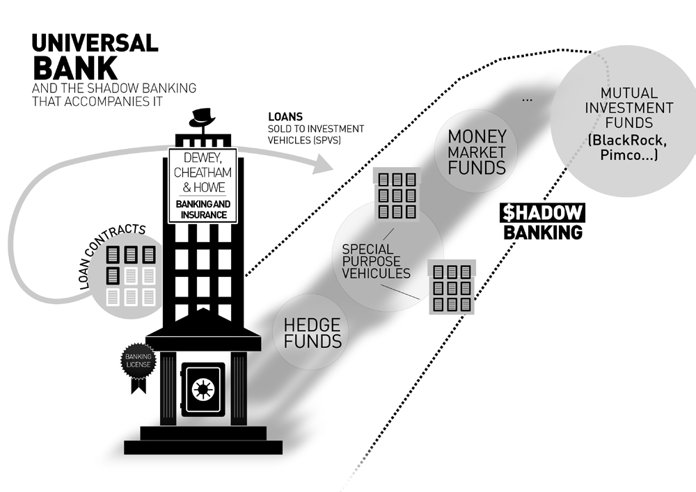
在银行的“影子”中，有一些公司是它自己创建的，以避免某些监管或使用特殊目的公司（spv）创建结构性产品，还有一些公司，如共同基金（mutual funds），它们也在影子银行中发挥作用。
因此影子银行和全能银行是互补的。影子银行的使用使全能银行比以往任何时候都能更有效地规避直接风险管理。
影子银行管理的资产数量大幅增加。2007-2008年金融危机爆发前，影子银行的规模急剧上升，从2002年的26.375万亿美元上升到2007年的62万亿美元。在2008年降至59.350万亿美元之后，2011年的交易额再次升至66.614万亿美元。
据Richard Hiault 2012年在Les Echos撰文称，“仅这一“平行”行业就占到了银行总资产的一半。”20国集团论坛（G20 forum）设立的监管全球金融稳定的实体金融稳定委员会（FSB）公布了2011年的披露数据：
美国拥有最大的影子银行体系，2011年度资产规模为23万亿美元，其次是欧元区（22万亿美元）和英国（9万亿美元）。NBFIs（非银行金融机构）相对于GDP最大的司法管辖区是香港（520%）、荷兰（490%）、英国（370%）、新加坡（260%）和瑞士（210%）。
2012，影子银行资产的规模接近71兆美元，相当于世界总产值（GWP）。金融监管当局没有努力从根本上减少影子银行的数量，更不用说消除它。大银行和强大的投资基金如贝莱德（BlackRock）和太平洋投资管理公司（PIMCO）的影响力如此之大（见上文“金融市场上的主要参与者”一节），以至于当局继续对影子银行活动视而不见，这些活动产生了它们的利润，增强了它们在经济中的影响力。英国金融稳定委员会主席、英格兰银行行长马克 卡尼（Mark Carney）认为，影子银行应当透明、安全，提供多种长期可持续的资金来源。他表示，金融稳定委员会将继续观察影子银行业务，以期在未来某一天对其进行监管。
离岸银行业务
2009年，据估计，三分之二的场外金融交易涉及离岸方。这一估计是Philippe Lamberts（比利时环保党）研究许多欧洲银行年报的结果。参与度最高的奖项是德意志银行（Deutsche Bank），该行控制着974家公司和子公司，其中657家位于欧洲以外。其他66家涉及的主要银行包括法国巴黎银行（BNP Paribas）和280家公司、比利时联合银行（KBC）和近100家公司、法国农业信贷银行（Crédit Agricole）和法国兴业银行（SociétéGénérale）各有95家、法国巴黎商业银行（BPCE）各有82家和81家公司。
离岸避税港的特点是以下五个独立标准：
瑞士、伦敦金融城和卢森堡的离岸存款数额最大。其他避税天堂包括开曼群岛{加勒比地区}，海峡群岛{译者补充：英国的海峡群岛：在英吉利海峡内，靠近法国的诺曼底，在法语中称“诺曼底群岛”，为英皇领地}，如英属格恩西和泽西（Jersey），香港，以及更多的世界各地。那些寻求避免缴纳应缴税款和/或希望洗钱的非常富有的公司可以获得银行服务，这些服务通过一系列避税天堂“走私”资金，以换取丰厚的佣金。第一站一般是瑞士、伦敦或卢森堡。然后，这些资金通过更为阴暗的地区转移，以掩盖其踪迹并阻碍当局的追捕，然后再在瑞士、伦敦市或卢森堡定居下来，在那里，这些资金要么由其所有者追回，要么由财富管理人管理。
《世界报》于2014年1月25日为我们提供了一幅插图：
中国当局承认，2010年，61亿美元离开中国前往英属维尔京群岛，35亿美元前往开曼群岛，32亿美元前往卢森堡，13亿美元前往美国；只有2700万美元前往瑞士。事实上，这些资金中只有一小部分留在避税天堂。大多数人返回中国，或是进入苏黎世、巴黎、伦敦或纽约的账户，这些账户由外国公司而不是中国人持有。（翻译CADTM）。
根据国际调查记者联合会（International Consortium of Investigative Journalists）的调查，全球三大银行在中国的逃税和洗钱活动中扮演着最大的角色：瑞士信贷（Credit Suisse）、瑞银（UBS）和摩根大通（JPMorgan Chase）。瑞士信贷（Credit Suisse）拥有240亿欧元，是中国财富管理投资组合最大的西方银行.
据伦敦经济学院助理教授加布里埃尔·祖克曼（Gabriel Zucman）称，富人向避税天堂转移了5.8万亿美元。最受欢迎的目的地是瑞士和卢森堡，瑞士接收了约三分之一的离岸存款。加布里埃尔·祖克曼还说，2009年至2012年间，海外管理的财富总量增长了25%。找到一致数据的《经济学人》说，瑞士接受的外国来源略多于2万亿美元；英国、海峡群岛和爱尔兰几乎得到了同样多，而加勒比海和巴拿马得到了一半，美国（特别是特拉华州{state of Delaware}）和卢森堡各得到了一半。
某些避税天堂的注册公司比居民多，这清楚地表明它们只是一个信箱：英属维尔京群岛每100名居民有1995家注册公司；开曼群岛（也是英国）每100名居民有161家公司注册；特拉华州每100个居民中就有104个。
属于避税天堂链的微型国家被包括银行在内的大型跨国公司广泛使用。杰拉德·古尔格乔恩强调了这一点：
许多离岸司法管辖区是主要金融中心的产物。其中一半是在伦敦金融城咨询律师的推动下出生的。华尔街有自己的避税天堂网络。多伦多在加勒比海有几个岛屿，已被安排采取有利于采掘业{ the extractive industries}的安排，使多伦多成为这类公司的定位和上市方面的专门机构。法兰克福的银行参与了卢森堡大公国向避税天堂的转型。巴黎金融中心在欧洲、大西洋、加勒比、太平洋和印度洋也有免税区。离岸地区适用银行法规、商业和税法等，这些法律通常由与银行和跨国公司有联系的常驻律师和税务顾问定制。这在一定程度上解释了避税天堂的专业化以及它们现在如何相互补充，以使最大的跨国公司获得更大的利益。
在2012年12月美国司法系统进行深入调查后，最大的英国银行汇丰银行承认协助墨西哥贩毒集团和其他犯罪组织进行洗钱活动，金额约为8亿8000万美元。汇丰主要使用开曼群岛。这件事将在第22章中详细讨论
不难看出，虽然银行的离岸子公司能够获得丰厚利润，但它们也面临着巨额亏损的风险，这些亏损可能会使母公司濒临破产边缘，需要当局救助。
自2009年以来，尽管20国集团（G20）领导人多次宣布，但几乎没有什么真正的变化。在这种情况下，国家和国际公共机构所采取的任何行动的范围显然是非常有限的，这些机构的职责是鼓励金融机构采取更负责任的行为。监管者还没有采取适当的手段来揭示他们应该控制的银行活动的真实性质和范围。因此，很大一部分金融交易完全脱离了官方控制。
股本回报率或净资产收益率是多少？（What is Return on Equity or ROE?）
要了解私人银行、它们作为资本主义公司的行为以及它们的大股东和首席执行官的动机，我们需要进一步了解它们对股本回报率{Return on Equity}（有时也称为ROE）的痴迷。净资产收益率是理解银行为什么以及如何做他们所做的事情的关键。净资产收益率是指银行净利润（或亏损）与股东权益之间的关系，以百分比表示。这一比率衡量的是一家公司仅从其股本中产生利润的能力（“净资产回报率”）。换句话说，它表达了可能支付给股东的利润。股本回报率越高，银行对股东的吸引力就越大。因此，ROE可以定义为。
从20世纪90年代到2007年至2008年的危机开始，有一场疯狂的争夺最大ROE竞赛：15%是常见的，但一些银行从25%到30%。2007年，ROE在欧元区15%，英国17%，美国19%。
例如，美国两大银行高盛（Goldman Sachs）和摩根士丹利（Morgan Stanley）（美国第五和第六大银行）在1999-2000年的净资产收益率均为30%，直到互联网泡沫破裂，安然在2001年破产。从2001年到2004年，这两家银行的股东不得不以12%到16%的净资产收益率结算。由于美联储和布什政府推行的全面支持银行和大企业的政策（高盛前首席执行官保尔森（Henry Paulson）担任财政部长），高盛的净资产收益率在2006-2007年再次达到30%，而摩根士丹利的净资产收益率在2006年又回升到近25%，在2007年再次下跌前。高盛（Goldman Sachs）建议其客户购买结构性次级抵押贷款产品（著名的CDO——抵押品债务），同时猜测这些产品将在2007年下跌。这就是为什么在银行业危机最严重的时候，它的净资产收益率可以达到30%，而它的主要竞争对手贝尔斯登、美林和雷曼兄弟正开始陷入困境。2008年，高盛的净资产收益率降至10%，摩根士丹利降至2%。2009年，高盛的净资产收益率上升至20%，摩根士丹利2010年为10%，2012年为-0.3%。2013年，高盛净资产收益率达到12%，摩根士丹利达到5%。
一般来说，银行的股本是由股东投入的资本构成的。25年前，股东权益相当于银行资产的8%（更多具体信息将在巴塞尔协议章节中给出）。监管当局之所以采用8%的比率，是因为它与美国各大银行当时公布的比率相当。例如，对于一家拥有1000亿欧元资产（家庭和公司贷款、政府债券、公司债券、衍生品和其他金融产品）的银行来说，其最低股本为80亿欧元。
要实现15%的净资产收益率，净利润必须达到12亿欧元（80亿欧元的15%）。用1000亿欧元的资产获得这样的净利润似乎很容易，因为它只占这一数额的1.2%。
如果一家银行利用杠杆，然后在金融市场上借入2000亿欧元购买更多的资产，资产量就变成了3000亿欧元，股本保持在80亿欧元不变，而负债也增加了2000亿欧元。如果该行继续实现1.2%的净利润，那么净利润将达到36亿欧元。股本仍为80亿欧元，意味着净资产收益率为45%。这是通过借贷增加杠杆率的根本原因：在股本相同的情况下，资产负债表的规模越大，产生收入的潜力就越大，每一个投资欧元的净利润也就越大。
国际货币基金组织银行盈利能力数据:
国际货币基金组织公布了2012年几个国家资产利润和权益利润的平均差额。这种差异非常小，在某些情况下是负的。
| 国家 | 利润(%) | 国家 | 利润 |
|---|---|---|---|
| 希腊 | -0.4 | 德国 | 0.2 |
| 爱尔兰 | -0.8 | 荷兰 | 0.4 |
| 意大利 | 0.4 | 英国 | 0.0 |
| 葡萄牙 | 0.3 | 丹麦 | 0.1 |
| 西班牙 | 0.2 | 瑞士 | 0.2 |
| 奥地利 | 0.4 | 瑞典 | 0.6 |
| 法国 | 0.2 | 瑞典 | 0.6 |
| 美国 | 0.8 | 来源： | IMF，2012 |
这张表似乎表明，欧洲银行的股东并没有得到很好的回报。然而，从ROE的角度来看，我们得到了完全不同的结果。根据Liikanen第79号报告，德意志银行控制了21640亿欧元的资产，我们假设其利润与国际货币基金组织为德国宣布的利率（0.2%或43.3亿欧元的净利润）相当。不过，德意志银行的比率为2%，相当于433亿欧元的股东权益。在这种情况下，其净资产收益率将为10%，这表明了在危机时期银行业的现实情况。
从上世纪90年代中期开始，各种各样的结构性金融产品和衍生品迅速发展起来，各大银行都希望在这一蓬勃发展的市场中占有一席之地，担心如果自己的地位不好，就会被竞争对手赶超并最终淘汰。这些产品的利润率相对较小，通常在1%左右，因此利润是通过扩大销量获得的。如果股东要求更高的净资产收益率，董事会将面临巨大的压力，使其银行的资产和收入基础大幅膨胀。在上面给出的例子中，资产在十年内增长了三倍，达到3000亿欧元，而资本金保持不变，为80亿欧元，占资产的2.66%。银行资产的增长是由借贷提供资金的。
有关银行将使用杠杆，这包括增加其借款，以提高其股本的盈利能力（见第4章）。在我们的例子中，杠杆率为37.5:1，这意味着其负债是其股本的37.5倍。多年来，随着各大银行在衍生品市场上的竞争加剧，这些产品的盈利能力有所下降——在某些情况下，盈利能力不超过0.1%。当利率和衍生品的盈利能力从2001年开始下降时，银行为了保持30%的净资产收益率，选择通过购买越来越多的高收益金融产品来增加资产规模，其中来自次级贷款的产品是最显著的例子。
银行资产量显著增加
国际货币基金组织报告说，全球银行资产从2002年到2007年增加了140%，从40万亿美元增加到97万亿美元.
法国兴业银行（SociétéGénérale）的资产从1999年推出欧元时的4100亿欧元增加到2008年的近1.2万亿欧元（10年内增长近300%）。2010年，其资产仍接近1.2万亿欧元。在德国，德国商业银行（Commerzbank）的资产在1999年至2009年间从3800亿欧元增至8500亿欧元。
如果我们考虑整个欧洲银行业，资产从2001年的25万亿欧元增加到2008年的43万亿欧元（是欧盟GDP的3.5倍）。银行债务也有同样的趋势。在负债方面，膨胀的银行资产负债表依赖更多的借贷来为银行活动提供资金。在资产方面，房地产贷款是一个组合，对大多数大银行来说，发展交易活动（特别是高频交易），其中包括衍生品交易。上世纪90年代中期，美国银行完全垄断了资产支持证券（ABS）的发行，但欧洲银行也希望从中分得一杯羹。他们用短期贷款购买这些资产证券，而购买的产品到期时间要晚得多，这增加了他们的杠杆率。为了规避风险，银行会购买信贷和其他种类的衍生品，以保护自己免受货币汇率和利率波动的影响。2008年9月，雷曼兄弟（Lehman Brothers）的破产和AIG（全球最大的保险公司）的纾困表明，那些发行CDS等衍生品的人（见下框）无法应对本应承担的风险。衍生产品的总规模从1998年的100万亿美元猛增到2007年的750万亿美元。
什么是CDS？
CDS或信用违约掉期（Credit Default Swap）是一种通常不受任何政府监管机构控制的金融产品。它是摩根大通银行（JPMorgan Chase bank）在20世纪90年代初创建的，当时放松监管正如火如荼。通常情况下，如果债券发行人（借款人）拖欠还款，无论借款人是公共机构还是私人公司，都应允许CDS卖方偿还债务持有人的债务。
我们说“应该”有两个主要原因。首先，买家可以使用CDS来支付他们不拥有的债务无法偿还的风险。这就像给你邻居的房子投保火险，希望它会起火，以便兑现保险费。第二个风险是，CDS卖方缺乏必要的金融手段来补偿所有大型CDS持有人。如果已经发行债券的私营公司出现一系列破产，或者某个主要债券发行国出现违约，CDS卖方很可能无法兑现承诺。
2008年8月美国国际集团（AIG）遭受的灾难和2008年9月雷曼兄弟（Lehman Brothers）的倒闭，都与CDS市场直接相关，两家公司都非常活跃。
CDS让购买CDS的银行产生了一种错觉，认为它们有风险，从而鼓励它们更加冒险。此外，CDS是一种投机工具。例如，2010-2011年，银行和其他金融公司购买了CDS，以对冲希腊主权债务违约的可能性。他们希望希腊最终会违约，以便得到赔偿。因此，无论他们是否持有希腊债券，持有希腊债券CDS的银行和金融公司都有兴趣看到危机恶化。
2010-2011年希腊债务的主要持有者法国和德国银行出售了希腊债券。这引发了人们对希腊偿还债务能力的怀疑，与此同时，银行购买CDS，以便在希腊违约时获得赔偿。
2012年11月1日，欧洲当局终于禁止购买或出售与潜在购买人不持有相应主权债务的欧盟国家相关的CDS。然而，由于这一限制只涉及主权债务，它只覆盖约5%至7%的CDS市场。值得注意的是，这一重要但有限的措施（危机爆发以来唯一要实施的严肃措施）之后，CDS市场活动大幅减少，从而显示出其特殊性。
最后，我们观察到，CDS市场由十几家左右的大型国际银行主导，而对冲基金和其他金融机构只占一小部分。2013年7月，欧盟委员会（European Commission）还威胁将起诉13家大型银行，罪名是它们阴谋维持对场外交易（OTC）市场CDS的支配地位。
欧洲银行业的增长并不是依赖于客户存款，客户存款只是小幅增长，而是依赖于银行间市场（银行之间的贷款）、欧洲央行（ECB）、美联储（Fed）和英国央行（Bank of England）等央行或货币市场基金（MMF）的自身债务。
什么是货币市场基金？
货币市场基金是美国或欧洲的金融公司，很少受到监管，也很少受到监管，因为它们不需要银行执照。专业媒体认为他们属于影子银行界。从理论上讲，货币市场基金会行事谨慎，但现实情况却大不相同。奥巴马政府正在考虑对其进行监管，因为一旦货币市场基金破产，必须用公共资金纾困的风险非常高。这是一个令人担忧的前景，鉴于他们的盈利能力自2008年以来急剧下降，以及他们处理的大量资金。在美国，2012年他们持有2.7万亿美元，大大低于2008年的3.8万亿美元。
作为投资基金，货币市场基金从投资者（银行、养老基金等）那里筹集资金，并以非常短的期限（通常是每天）借给银行、企业和政府。21世纪初，货币市场基金融资已成为银行重要的短期融资来源。2012年最大的货币市场基金之一是摩根大通（JPMorgan Chase，美国最大的银行）创建的优质货币市场基金，该基金在2012年处理了1150亿美元。富国银行（Wells Fargo）是美国第四大新兴银行，拥有管理240亿美元的MMF。第五大银行高盛（Goldman Sachs）控制着价值250亿美元的MMF。美国银行也在欧洲经营MMF；摩根大通（180亿欧元）、贝莱德（115亿欧元）、高盛（100亿欧元），以及法国巴黎银行（74亿欧元）和德意志银行（113亿欧元）等欧洲银行。一些货币基金组织也使用英磅。欧洲内部市场和服务专员米歇尔•巴尼耶（Michel Barnier）也宣布，他希望对这项活动进行监管，但这很可能仍只是一厢情愿。
穆迪评级机构（Moody's rating agency）计算出，在2007-2009年期间，许多MMF必须由创建它们的银行和养老基金纾困：美国36家，欧洲26家，总成本121亿美元。从1980年到2007年，有1.46亿欧元不得不被他们的金融支持者拯救。另据穆迪称，2010-2011年共有2000万欧元获得纾困。这些例子表明它们对金融体系的稳定有多大的威胁
在2007-2008年衍生品和次贷市场崩溃后，这些银行及其专业分支机构遭受了损失，有时甚至超过了它们的资本金。为了说明这一点，让我们 我们回到前面的例子（在第5章和第6章），在这个例子中，银行的杠杆比率为37.5:1（80亿欧元的股本和3000亿欧元的总负债）。如果它记录了导致资产价值下降3%的损失，它的股本将被吞噬。面对这种情况，银行有四种选择：
这些不同的案例实际上发生在2008年。在美国，2007年雷曼兄弟（Lehman Brothers，第四大投资银行）和华盛顿互惠银行（Washington Mutual）破产时，它们还将其他400家中小银行纳入破产名单。另一家美国银行美林（Merrill Lynch）被美国银行（bank of America）接管，摩根大通（JPMorgan Chase）收购了贝尔斯登（Bear Stearns）。在比利时，三个主要银行（富通银行Fortis、德夏银行Dexia和KBC）通过国家干预在极端状态下被拯救。法国最大的银行富通最终于2008年被法国巴黎银行（BNP Paribas）接管。在德国，政府已经向几家大银行提供了援助，如Hypo Real Estate，达到了500亿欧元，德国第二大银行德国商业银行（Commerzbank），其接管占比超过25%。
在爱尔兰，所有的大银行（盎格鲁爱尔兰银行、爱尔兰银行和爱尔兰联合银行）都倒闭了，政府不得不进行干预。2008年，荷兰政府将荷兰银行（ABN AMRO）和富通（Fortis NL）收归国有，并拯救了荷兰国际集团（ING）。2013年2月，荷兰政府以37亿欧元的成本将专门从事房地产业务的银行SNS REAAL国有化（该银行在2008年已经获救过一次）。在冰岛，当局不得不面对所有大银行的倒闭，就在它们被私有化的几年之后。在英国，政府将该国主要银行之一的北岩银行（Northern Rock）和苏格兰皇家银行（Royal Bank of Scotland）国有化（接管了其84%的股份），并通过接管其43%的资本拯救了劳埃德银行（Lloyds Bank）。葡萄牙政府拯救了BPN（Banco Portuguès de Negócios）。在西班牙，政府有义务在欧盟的“援助”下，将其银行的资本结构调整到590亿欧元，而且肯定还没有走出困境。在意大利，Monte dei Paschi di Siena银行通过发行“蒙蒂债券”（以前总理马里奥·蒙蒂的名字命名）进行了39亿欧元的资本重组。意大利政府承担了高达130亿欧元的担保，并实施了欧盟委员会要求的重组计划，其中包括关闭5000个分支机构。塞浦路斯莱基银行于2013年倒闭，不得不被塞浦路斯银行接管。希腊政府提供了500多亿欧元用于希腊银行的资本重组，而在瑞士，公共财政部被迫增加瑞士最大银行瑞银（UBS）的资本。
法国是一个专注于拯救银行的特殊实体，2008年成立了法国国家控股公司（Sociétéde Prise de Participation de l'État），并同意协助法国五大银行（法国巴黎银行、法国兴业银行、法国农业信贷银行，Crédit Mutuel和BPCE）以总价值197.5亿欧元和无限期购买其超级优先证券和优先股。另一个结构是法国经济融资公司（Socieéde Financement de l'Economie Française），其中法国政府持有34%的少数股权，私人银行持有其余66%的股份，在国家担保下借贷了相当于770亿欧元的资金。截至2012年底，未清余额为242亿欧元。为此，我们必须增加德克夏板岩（the Dexia slate），迄今为止法国法国人花费了66亿欧元，法国、比利时和卢森堡政府提供了900亿欧元的担保。
北岩案
2007年，从电视频道和报纸上可以看到，在英国北岩银行（Northern Rock）的分行门前，顾客排起了长队，争先恐后地提取存款，但为时已晚。对于欧洲舆论来说，北岩成了次贷危机在整个欧洲大陆蔓延的象征。它最初是一个房屋互助协会，然后在1997年改变了它的法律地位，并采取了积极的房地产战略。从1997年到2007年破产，它以每年23%的速度增长，成为英国第五大抵押贷款银行，90%的贷款是房地产。为了为其增长提供资金，北岩将其存款分离，并依赖于短期借款。杠杆作用被过度使用，达到90:1以上。
2007年6月，英国银行业监管机构金融服务管理局（FSA）授权北岩使用自己的风险评估模型。2007年9月13日，北岩银行向英格兰银行提出上诉，储户惊慌失措，北岩银行发生挤兑。然而，并不是银行挤兑导致了该行的垮台；而是几个月前，主要的私人银行决定在一夜之间切断资金，敲响了北岩银行的丧钟。该银行于2008年2月被国有化。
德意志银行隐瞒了120亿美元的损失
一个鲜为人知的案例是德意志银行，就其资产负债表而言，它是世界上最大的银行。这说明了隐瞒损失以避免吓跑投资者的做法，更重要的是，防止监管部门的干预，这将引发股价大幅下跌。这一切都发生在2009年。据三名前雇员称，他们在2010-2011年向美国金融市场监管局证券交易委员会（SEC）告密。德意志银行掩盖了美国衍生品市场120亿美元的损失。如果该行将此记入2009年的资产负债表，其资本金将减少25% 它本有义务要求德国当局纾困，因为德国的银行必须拥有相当于其资产8%的资本。德意志银行（Deutsche Bank）并没有承认亏损，而是进行了一次大规模的宣传活动，以提高股价。该公司在2009年上半年报告中宣布税前利润为18亿欧元。2009年1月至4月，德意志银行股价从16欧元升至39欧元。
三名雇员已独立检举。风险经理艾里克•本•阿尔茨{Éric Ben-Artzi}在向美国证交会作证三天后被解职，并以不公平解雇为由起诉德意志银行。第二个告密者马修·辛普森（Matthew Simpson）自愿离开了银行，得到了90万美元的遣散费；而最后一个告密者则希望匿名。这一事件令证交会感到尴尬，因为其主要董事之一的罗伯特•库扎米（Robert Khuzami）在2004年至2009年期间还担任德意志银行（Deutsche Bank）在美国的法律事务总监。至于2012年德意志银行（Deutsche Bank）驻美国法律事务总监迪克•沃克（Dick Walker），他是当时主要的SEC理事之一。这些事件表明，政府、监管机构和大银行之间的串通和共谋并非高盛（Goldman Sachs）的独有行为，尽管具有象征意义，但包括德意志银行（Deutsche Bank）在内的许多大银行都在实施。2014年，该事件仍在美国和德国接受调查。2015年5月26日，美国证券交易委员会（SEC）表示，德意志银行对一个庞大的衍生品投资组合作出重大误报，在金融危机最严重的时候使其价值膨胀。美国证交会（SEC）执法部门主任克雷斯尼（Andrew Ceresney）说，在金融危机最严重的时候，德意志银行的财务报表没有反映出这些庞大、复杂的非流动性头寸存在的重大风险。德意志银行（Deutsche Bank）在评估头寸时未能做出合理判断，对财务报告缺乏强有力的内部控制。
德意志银行同意支付5500万美元来解决这些指控。德意志银行表示：SEC承认该行在整个调查过程中的合作，并没有就此事对个人提出任何指控。银行不承认或否认订单中列出的指控。
2008年巴克莱银行免费放贷
巴克莱银行正面临英国政府金融服务管理局（FSA）和严重欺诈办公室（SFO）对该银行增资方式合法性的彻底调查。在银行业危机最严重的时候，当英国金融服务管理局（FSA）救助劳埃德银行（Lloyds）和苏格兰皇家银行（Royal Bank of Scotland）时，巴克莱（Barclays）的管理层希望避免政府干预。2008年6月至10月，他们从卡塔尔的一个投资基金获得84亿欧元。据几位消息人士透露，作为回报，巴克莱向卡塔尔家族成员支付了高额佣金，这些成员投资了大约4亿美元。此外，该行似乎还向相同的投资者提供了巨额贷款，以便他们可以将这些资金注入该行的股本中。
如果要列出大型私人银行为度过2008年危机及其后果而采取的法律或其他手段的完整清单，那将是非常漫长的。许多给人留下没有政府帮助的印象的银行实际上已经濒临倒闭。正如我们稍后将看到的那样，他们从政府那里获得了巨额的意外之财，而不必打开他们的帐簿，也不需要各州在其董事会中获得一个席位来监督公共资金的正确使用，也不必大幅度改变他们的冒险、甚至不道德的行为
市场已经变得过于庞大、复杂和快速，无法接受20世纪的监管。难怪这个全球化的金融巨擘，连最老练的市场参与者都无法完全理解。金融监管机构需要监管一个比当初管理金融市场的法规原本所写的复杂得多的系统。
所有高度工业化国家的领导人都重复了美国联邦储备委员会（fed）主席格林斯潘（Alan Greenspan）1987年至2006年的讲话。他们以为银行 金融公司在满足自身利益的同时也会自我监管。格林斯潘补充道：
如今，对这些交易的监管基本上是通过对单个市场参与者交易对手的监管。为了保护股东，每家银行都会对客户的投资头寸进行记录。监管者仍然可以假装提供监督，但他们的能力大大削弱和下降.
银行和其他金融市场参与者自我监管的意愿被认为是一个烟幕弹，让他们可以随心所欲。
因此，工业化国家的领导人、一大群专家和金融专家和艾伦·格林斯潘（Alan Greenspan）不断地重复着自我调节市场的古老谎言{the old fable of self-regulating markets}，令人恶心
由于市场变得过于复杂，无法进行有效的人为干预，最有希望的反危机政策是保持市场最大灵活性的政策——对冲基金、私募股权基金和投资银行等主要市场参与者的行动自由。
在这些假设下，银行机构的国家和国际监管当局系统地减少了银行受到的限制，银行自然会尽可能地发挥自己的优势！
正如我们所看到的，从1988年开始，巴塞尔协议规定银行必须持有相当于其总资产8%的股权。这意味着，如果他们有1欧元的股本（一般是股东的钱），他们就可以贷款12.5欧元。这也意味着，当他们只有1股权益时，为了借出12.5股，他们可以借出11.5股。与20世纪30年代以来实施的法规相比，这项措施已经极大地鼓励了银行增加贷款，以增加其业务活动。
巴塞尔银行监管委员会和国际清算银行
巴塞尔协议是由巴塞尔银行监管委员会起草的。该委员会自20世纪80年代以来成员不断变化，在国际清算银行（BIS）的支持下，汇集了20国集团（G20）国家的主要银行家。它受命执行四项主要任务：
国际清算银行是一个成立于1930年的国际组织，负责促进全球货币和金融合作。它还充当中央银行的银行。世界银行是讨论和分析各国央行金融和货币政策的论坛；经济和货币研究中心；以及各国央行在国际交易中的主要对手和金融代理人。包括G10在内的56家央行都是成员。其中包括几个与国际金融体系的金融和货币稳定有关的委员会和组织，如巴塞尔委员会和全球金融体系委员会（CGF）.
然而，上面所描述的需要相当多的限定。实际上，银行可以放贷的金额（以一欧元的股本为基础）不是12.5欧元，而是25欧元（巴黎银行的情况是这样），甚至50欧元（德意志银行和巴克莱银行的情况是这样），同时仍然遵守《巴塞尔协议一》的建议（以及目前生效的《巴塞尔协议二》）。怎么会这样？因为他们可以调整比率的分母，因为该比率并不适用于所有资产。事实上，《巴塞尔协议一》（以及下文讨论的《巴塞尔协议二》和《巴塞尔协议三》）使银行有可能通过假设大多数银行不承担风险来降低其资产的价值。因此，资产价值是根据其所面临的风险计算的。经合组织成员国的主权债务证券据信根本不会面临任何风险。对评级为AAA和AA-的银行的贷款被认为有20%的风险。《巴塞尔协议一》根据债务人的不同，设立了五类风险：1）国家或公共当局；2）金融业以外的公司；3）银行；4）个人和小型零售商；以及5）其他。
如何将4%的比率转换为10%
如果一个虚构的银行，我们将称 Banxia 拥有4股本和100资产，将占4%的比例，而它必须达到8%的水平下巴塞尔I（和巴塞尔III，这将生效在2013-2015年，但已推迟到2018年至2019年）。它怎么能在不改变任何东西的情况下达到这个比率呢？答案是：根据所承担的风险对其资产进行加权。
理论上的案例将有助于我们理解这一情况：在这100个国家中，总共有30个银行持有来自评级在AAA和AA之间的国家的政府债券。然后，它可以从总资产中减去这30。为什么？因为现行法律认为，向评级在AAA和AA之间的国家提供贷款不需要任何资本来抵消可能的损失。这就留下了银行必须持有足够资本的70项资产。其资本/资产比率为4/70，目前为5.7%，仍然不足。
其余70家中，有30家是向评级在AAA至AA-之间的银行或公司发放的116笔贷款。在这种情况下，由于《巴塞尔协议一》（和《巴塞尔协议二》）规则认为这些贷款只代表20%的风险，银行可以认为，所欠的30只占6（30的20%）。因此，Banxia 不再需要为相当于70的资产拿出股本，而是70减24的资产——即46。因此，权益/资产比率大幅提高，达到8.7%（46项风险加权资产中权益为4项）。
现在让我们假设，在剩余的40项资产中，有2项是向评级机构评定为差分的公司或银行发放的贷款，即低于B-。在这种情况下，风险是150%。这两项债务资产占3（2的150%）。应对这种风险所需的权益必须按3而不是2计算。
让我们假设剩余的38项资产中，有10项是对中小企业的贷款。在这种情况下，10算10，因为银行的中小企业债务无法减少：因为巴塞尔当局认为它们代表着高风险，所以它们的“风险”固定在100%。
其余28项资产包括个人贷款。个人贷款的风险为75%，因此28项资产占21项（28项的75%）。
在这个理论案例中，以风险计算的资产最终代表了总资产100的40（0+6+3+10+21）。股本/资产比率为4/40，即10%。
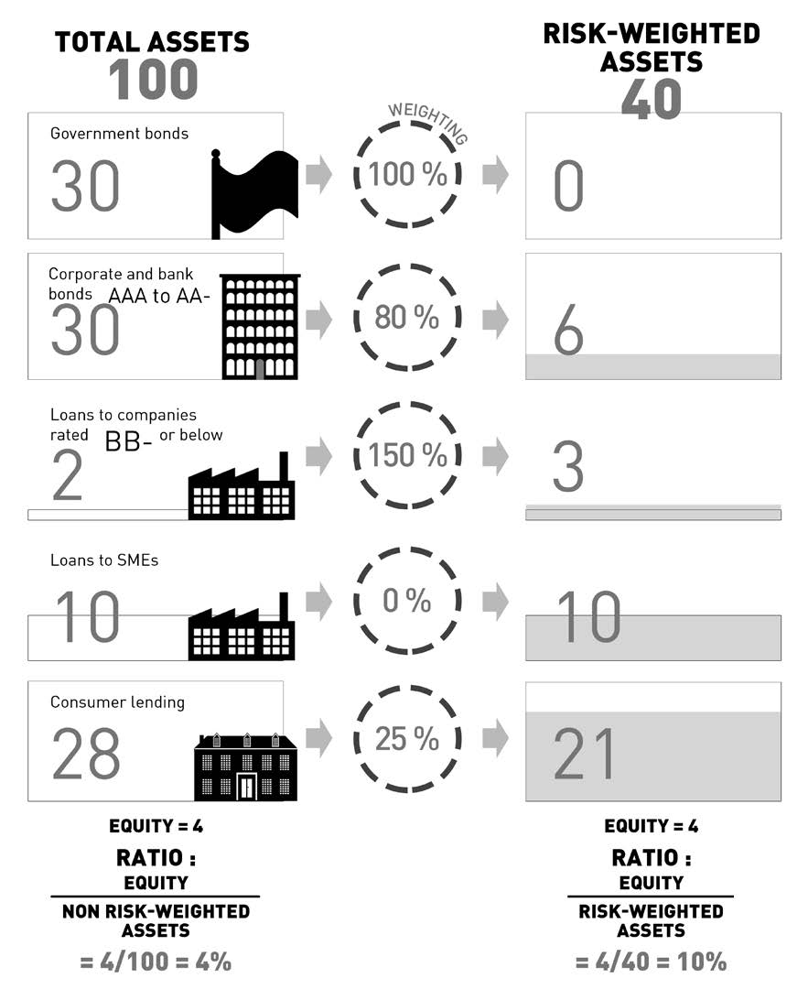
答对了！一家股本仅占其总资产4%的银行，可以宣布其实际比率为10%，监管部门将对此表示祝贺。
也许你认为这只是理论上的？当然，银行和监管当局不会真正支持和执行上述做法？再想想。在下一节中，有一个非常令人信服的例子；还有许多其他的例子。同时，下表总结了巴塞尔协议I和巴塞尔协议II的加权风险适用率。
风险权重表
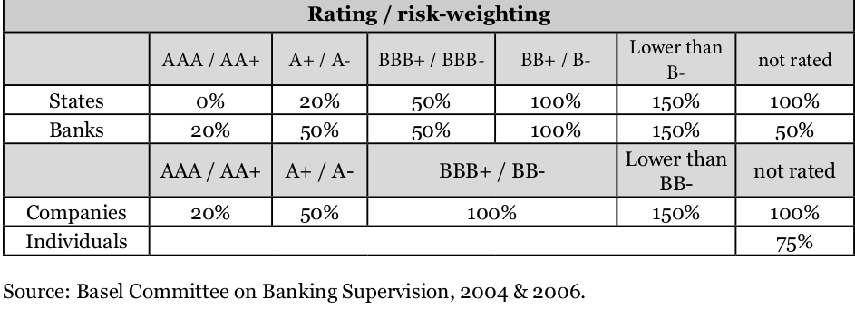
如上所述，巴塞尔委员会非常信任信用评级机构。然而，这些机构一次又一次地犯错，这是一个众所周知的事实。他们将AAA评级分配给AA-，像安然、雷曼兄弟、美国国际集团、苏格兰皇家银行和北岩银行等公司，直到他们破产的那一天。同样，评级机构对有毒产品（如CDO）进行了AAA评级，直到2007年至2008年，才崩溃。然而，巴塞尔当局也对中小企业贷款采取了歧视性措施——当然，这些贷款没有评级机构的评级，因此根据既定标准代表100%的风险——对家庭贷款（根据巴塞尔协议，75%的风险），这导致银行减少了对这些实体经济参与者的直接信贷。
向家庭发放的贷款中有很大一部分已被证券化，即从银行资产负债表中剔除并出售给其他金融机构。这样，银行就不再承担贷款的风险，而贷款是银行传统的核心业务之一。自2008年以来，银行限制中小企业和家庭信贷的原因是，从资产权重来看，此类贷款太重。私人银行已说服巴塞尔当局鼓励开发证券化金融产品，而不是直接向生产性经济中的人们提供贷款。欧洲央行行长德拉吉（Mario Draghi）在同样的假设下，发现帮助小企业寻找融资的最好方法莫过于创建包含小企业贷款的资产支持证券（asset-backed securities，ABS）。
《巴塞尔协议II》是新自由主义狂热时期的产物，在这一时期，银行家们成功地将20世纪30年代后危机时期仅存的几条审慎规则抛诸脑后。正如我们当时看到的那样，美联储（Fed）主席艾伦•格林斯潘（Alan Greenspan）在对金融机构的自我监管能力，并主张消除对他所称的银行家“创造力”的所有限制夸夸其谈时。就是2007年危机爆发之前，《巴塞尔协议II》于2004-2005年生效。它们在2013-2014年仍然有效。
新巴塞尔协议进一步推动了新巴塞尔协议实施的放松管制。应强调协定中的两点。首先，降低了所需的硬资本；其次，允许银行在计算所需股本与资产比率时采用自己的资产计算方法。
巴塞尔协议2与降低硬资本要求
应银行要求，减少了所需的硬资本（核心一级资本），即股东提供的资本和未分配利润。现在它只占风险加权资产总量的2%。
巴塞尔协议一规定了最低资本金占银行信贷总额的8%。有了巴塞尔协议二，除了2%的硬资本外，银行在计算其股本时还可以包括各种其他要素，例如实际上不是严格意义上的资本的次级债务证券。各国家主管部门负责界定银行在硬资本的2%到8%之间可以考虑的因素。
因此，尽管巴塞尔协议一规定的8%这一提法得到了保留，但计算方法却发生了根本性的变化：在分子（股本）方面，银行可以包括的债务类别已经远远超出了硬资本；在分母方面，允许银行根据风险定义资产权重的方式。
在第8章中我们看到了Banxia如何操纵资产。现在，新巴塞尔协议使得在股本方面也可以修改分子，包括银行的资产和它可以增加的资产，以达到8%的比率。
在巴塞尔协议的术语中，我们提到一级和二级。巴塞尔协议II认为一级资本（即4%的风险加权资产）由两部分组成：2%的硬资本和2%的银行可以计算出严格意义上不属于公司股本的各种要素。例如，法国和比利时的银行（在其国家监管机构的支持下）已经包括混合证券（一半资本，一半债券）。二级包含的元素甚至从严格的资本中进一步移除。例如，上世纪90年代，日本政府允许日本银行将潜在的股市资本收益纳入二级资本。几年后，当日本房地产泡沫破裂时，他们发现自己一夜之间低于监管比率。但这并没有促使巴塞尔委员会起草一份更严格的定义，说明哪些可以被纳入二级甚至一级。直到2010年，它才宣布了更为苛刻的标准，这些标准可能在2018年或2019年与巴塞尔协议III一起实施。[补充： 2019年4月1日,《巴塞尔协议III》在全球生效]
为了了解银行可以使用什么来达到8%的目标，这是Dexia2008年度报告的摘录：
国际清算银行合格资本由两部分组成：一级资本，包括：股本、股份溢价、包括当年利润在内的留存收益、混合资本( hybrid capital)、外币折算和扣除无形资产的少数股东权益、应计股息、自有股份的净多头头寸和商誉(goodwill)；
二级资本，包括从金融机构扣除次级债务的次级长期债务的合格部分和在金融机构中的权益。
一级资本要求至少为4%，合格资本总额至少为风险加权资产（RWA）的8%
我们在Dexia的2012年度报告中发现了类似的声明（关于这一点的更多细节，请参阅下面的Dexia box）。
巴塞尔协议二：给予银行的自由放任
新巴塞尔协议建立在对银行家的完全信任的基础上。每家银行都可以决定自己的风险评估模式，事实上，几乎所有的大银行都可以。
更具体地说，新巴塞尔协议给银行提供了两种选择。一种是使用巴塞尔协议II委员会提出的计算风险加权资产的方法（标准化方法）；另一种是根据资产所代表的风险定义其自己的资产评估方法。为了采用这一制度，他们可以建立一个内部模型，并提交给监管机构批准——通常是一个复杂的过程，但这是一个拥有大量资源和众多专家的大型银行所能做的。
标准化方法要求巴塞尔委员会制定有利于评级机构影响力的标准。在Banxia理论的例子中，我们使用了标准化的方法。如我们所见，评级在AAA和AA之间的政府或公共部门实体的银行债权 加权为0%。因此，根本不应计算相应的资产。这反过来意味着，银行不要求股本冲销这些债权可能造成的损失。对评级在AAA和AA之间的银行或公司的索赔被加权为20%的风险，因此银行可以在与此类索赔相对应的资产中扣除80%。评级在A+和A-之间的银行和公司的债权加权为50%，评级在BB+和B-之间的银行和公司的债权加权为100%。如果他们的评级低于B-，索赔的权重为150%。对个人的索赔权重为75%，对中小企业的索赔权重为100%，因为它们没有得到评级机构的评级。
放松管制在金融危机的爆发中起到了重要作用，使银行能够通过承担更大的风险来追求利润最大化的目标。在2007-2008年的金融危机之后，人们似乎有理由期待监管者从这场危机中吸取教训，收紧对金融业的监管。这并没有发生。相反，正如我们将看到的那样，在危机发生后的几年里，我们采取了进一步措施来为银行及其私人利益服务。
Dexia ：监管软选择的生动图示
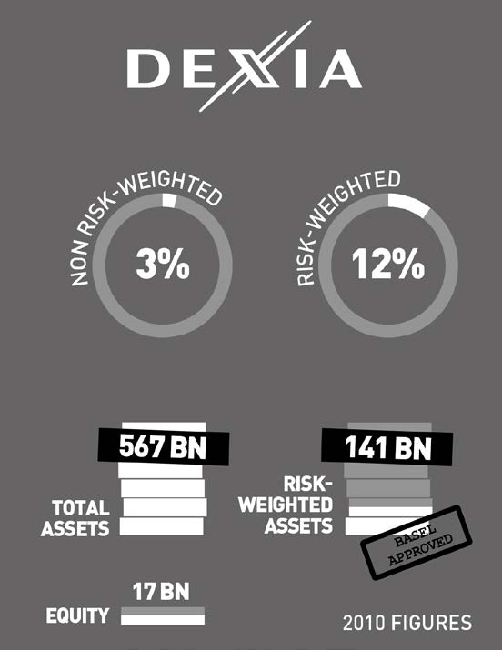
德夏（Dexia）的案例说明了风险加权资产系统的危险性，无论是使用标准化方法还是内部评级方法。2011年6月，德夏通过了欧洲监管机构对90大欧洲银行的“压力测试”。四个月后，它不得不在三年内第二次接受救助。德克夏报告通过这一测试就暴露了这种情况。
虽然（非加权）资产总额达到5670亿欧元，但风险加权资产仅为1410亿欧元。在理论上，风险加权使得我们的虚构银行Banxia能够将资产从100降低到40。德夏在2011年6月的资产缩水了75%，从100下降到25。向德夏魔术师致敬！事实比小说更离奇！{Hats off to the Dexia conjurors! Truth is stranger than fiction!}
德夏向欧洲当局报告称，其比率达到12.01%。这一定会给监管部门留下深刻印象！如果考虑到非加权资产，这一比例将只有3%，这将更接近现实。这就是德夏的例子。
如果监管部门允许包括德夏银行在内的银行将非资本（例如混合证券——见上文）的金融产品加到他们的硬性资本上，它们的比率将更不平衡。应该强调的是，如果《巴塞尔III条例》（2018～2019年全面实施）对比率和比率生效，德夏仍将通过该测试，这表明巴塞尔III将不提供任何真正的解决方案。
巴塞尔协议三：更多的相同
《巴塞尔协议III》是在危机压力下于2010年谈判达成的，2011年进行了修订，目前仍在进行解释和谈判。而且它们要到2018-2019年才能生效。
大多数主流媒体和经济分析人士都把注意力——以及公众的注意力——集中在《巴塞尔协议III》上，而现在和未来几年，正是《巴塞尔协议II》生效，对当前形势影响最大。监管部门、与大型私人银行携手合作的政府以及大众媒体都希望公众相信，金融业受到了严重的限制。这是个谎言。正如我们将看到的那样，即使是巴塞尔协议III的措施也不会真正改变允许银行随心所欲行事的宽松监管。事实上，银行仍将能够做账和修改健康报告，这要归功于一个系统，即其资产相对于风险程度的权重。他们还将被允许在资产负债表外进行交易，合法地从事影子银行业务，从而促使他们承担更多风险。光是这两个事实就足以破坏一系列广为宣传的小措施。为了表明《巴塞尔协议III》的标准有多苛刻，银行抱怨并试图让当局软化这些措施或推迟实施。这只是让公众搭便车。政治领导人和监管当局完全与大型私人银行串通一气。
巴塞尔协议III为何不会引入真正的金融监管
《巴塞尔协议III》呼吁进行一次重大变革：银行将不得不拿出4.5%，而不是《巴塞尔协议II》所要求的2%的硬资本。剩下的3.5%将以更灵活的方式计算，以达到巴塞尔I和II所要求的8%。
不过，资产将继续根据其所存在的风险进行计算，并由银行自己进行评估。这完全否定了所有关于巴塞尔协议III为银行业危机提供解决方案的主张。显然，由于监管中可能存在诸多漏洞，硬性资本占风险加权资产比例达到4.5%的要求是个笑话。
巴塞尔委员会（Basel Committee）在2012-2013年进行的一项研究得出结论，根据银行的不同，同一类资产的风险权重可能在1到8之间。X银行可能会估计，它只需要Y银行认为必要的资本的1/8，就可以在给定的衍生产品组合中缓冲利率风险。在9个不同国家的15家主要银行中，所有资产加在一起的差异是1到3倍。巴克莱银行（Barclays bank）的一项研究表明，银行利用风险加权将所需股本降至最低。巴克莱银行（Barclays bank）报告称，20年前，银行认为加权资产平均占总资产的53%，而在2012年，加权资产仅占32%。欧洲银行管理局（EBA）公布的一项研究结果显示，银行计算的一半风险权重并非基于任何客观因素。这项研究是利用来自16个欧盟国家的89家银行的账户进行的。在对同一类型风险的评估中，一家银行与另一家银行的差异达70%。
巴塞尔委员会顽固地无视证据，维持目前的风险加权制度，尽管经合组织等某些其他官方机构已开始编制文件，赞成放弃资产中的风险加权。在经合组织2013年的一份报告中，作者建议在不考虑风险的情况下计算资产，以获得可靠的比率。根据对2004年至2011年期间94家银行的分析，这项研究还表明，核心一级资本比率并不能有效地表明银行的破产风险——证明了巴塞尔原则所要求的资本计算方法的无害性。
事实上，一些监管机构认识到了这一点。英国央行（Bank of England）金融稳定部主任安德鲁 霍尔丹（Andrew Haldane）也认为，截至2018-2019年，股本与银行资产负债表之比的提高将是普遍的，这完全不足以降低破产的风险和影响。美国联邦存款保险公司（FDIC）的托马斯•霍尼格（Thomas Hoenig）也认为，2018-2019年所需的股本水平至少需要乘以三倍。与上述经合组织报告的作者一样，安德鲁·霍尔丹和托马斯·霍尼格赞成在计算资产时放弃风险权重，并希望看到权益和资产之间的绝对比率（即不加权）。美联储（Federal Reserve）行长之一丹•塔鲁洛（Dan Tarullo）宣布，如果将股本/非风险加权资产比率固定在3%（由巴塞尔委员会决定），这一比率是不够的。美国当局打算对其最大的银行征收5%的比率，这表明巴塞尔委员会在《巴塞尔协议III》框架内确定3%比率的决定实际上是最低限度的。英国政府在2011年责成维克斯委员会（Vickers Commission）提出应对银行业危机的建议，该委员会建议2011年的利率为4%，英国首相认为这一比例限制性太强。2013年7月，《金融时报》就此发表社论，提出6%的比例。
如果《巴塞尔协议III》没有带来变化，我们还能指望政府如此热衷于在媒体上夸夸其谈的其他银行业法规带来什么呢？2007-2008年的金融灾难及其巨大的长期影响清楚地表明，金融市场无法自我监管。他们这样做并不感到内疚，这很适合他们。资本主义历史上所有的危机都清楚地证明了这一点。当前危机爆发后，各国领导人不得不改变态度：法国总统萨科齐宣布，解决所有问题的自我监管已经结束。放任主义结束了。“市场总是知道最好的”结束了。然而，在危机爆发7年后，在承诺恢复更严格监管6年后，没有采取任何严厉措施。证据很有说服力。与银行勾结，政治领导人和立法者几乎没有采取什么措施来约束金融公司。
在美国，新的银行监管立法，多德-弗兰克法案（包括沃尔克规则），是在奥巴马总统第一任期内通过的。这项法律于2010年通过，与罗斯福总统1933年实施的规定相比，它是软性的，但即使如此，它的实施也有延误。银行和他们的游说者，以及他们对其施加直接影响的共和党人和民主党人，设法限制了它的应用。沃尔克规则禁止银行进行自营交易，即用自己的资金在自己的账户上进行投机。它对银行在不受严格监管的对冲基金或私募股权基金中可能持有的头寸设定了限制。该规定原定于2014年7月实施，但实际上于2015年7月生效。
2008年英国银行业几乎破产后，英国政府成立了维克斯委员会，以英格兰银行前首席经济学家约翰·维克斯勋爵的名字命名。该委员会于2011年提交了报告，2013年12月通过了一项改革金融服务的法律，其中包括报告中提出的一些建议。
在欧洲方面，由芬兰银行行长Erkki Liikanen领导的一个委员会于2012年10月提交了Liikanen报告。维克斯报告和利卡宁报告中的建议都比多德-弗兰克法案和沃尔克规则更进一步，包括开始对银行的多种多样的活动设置围栏。然而，没有人提议恢复《格拉斯-斯蒂格尔法案》或1930年代危机后欧洲采取的措施。
然而，他们的任何建议都没有明确提出将商业银行和投资银行分开，或者取消所谓的全能银行（见第2章）。这些报告和法律，连同法国政府2012年12月提交国民议会的拟议银行改革法（8个月后通过）以及德国、比利时等国采取的措施，只走了一半。他们提出的隔离措施，如果真的实施的话，将证明是非常有限的。银行的投资分行将吸收客户的存款，并将其置于极大的风险之中，因为还没有采取认真的措施来防止这种情况的发生。如上所述，在全能银行的框架内，商业银行科和投资银行科共同承担责任；这意味着投资银行科的损失将由商业银行科承担。这就是在法国发生的事情，据其首席执行官Laurent Mignon估计的80亿欧元，由于它的创造被银行集团的17个地区商业银行和凯撒银行（储蓄银行）网络的19家银行所覆盖，失去了本土化。在2009年合并后成为同一个BPCE集团的成员。
随着监管部门向银行游说团体做出如此多的让步，花旗集团（Citigroup）退休董事约翰•里德（John Reed）宣布废除《格拉斯斯蒂格尔法案》（GlassSteagall Act）是一个严重的“错误”，这一点令人吃惊。在克林顿政府时期，他是这项法律被灾难性地废除的最热心的支持者之一。然而，在2013，他宣布恢复《格拉斯-斯蒂格尔法案》是紧急的，并补充说金融部门非常灵活，将商业和投资银行业务分开是没有困难的。他认为，与工业不同，实际上银行没有庞大的固定资本基础。
尽管维克斯和利卡宁对银行的建议非常温和，但欧洲银行（与美国同行一样）仍组织了一场密集的游说活动，以避免实施这些建议。法国一家周刊Challenges在2012年报道了法国银行家对Liikanen报告的看法：“通常这些报告最终会被扔进废纸篓，”一位人士说。“利卡宁几乎不知道什么是银行，”另一位讽刺地评论道。“芬兰只有外国银行的子公司”。英国《金融时报》社论作者马丁•沃尔夫（Martin Wolf）的评论指出，挑战仍在以不同的语调继续：我担心，在银行家的压力下，太多的市场活动将被排除在隔离之外。这份报告是向前迈出的一步；下一步决不能倒退。恰巧英国《金融时报》也对银行业进行了调查。据报道，瑞典Nordea银行首席执行官、欧洲银行联合会（European Banking Federation）董事克里斯蒂安•克劳森（Christian Clausen）表示，利卡宁的报告在贸易和零售银行活动的隔离方面存在错误。欧洲和美国的立法者，更不用说高级公务员，都受到了巨大的压力。在布鲁塞尔，欧洲议会有754名成员，银行代表有700至1000人，预算为3亿欧元。2014年，欧洲企业观察机构（Corporate Europe Observatory）估计，布鲁塞尔的金融说客人数已增至惊人的1700人。欧洲央行行长、高盛前董事马里奥德拉吉（Mario Draghi）等可靠且地位较高的盟友也可以成为这些银行的依靠。监管部门中有一些声音在批评缺乏严格的银行监管。2012年，英国央行（Bank of England）首席经济学家安德鲁霍尔丹（Andrew Haldane）在伦敦召开的一次金融董事会议上发表讲话，批评这29家具有系统重要性的银行如何利用它们所代表的危险，获得从欧洲央行、美联储、英格兰银行和其他金融机构获得资金的有利条件。他认为，这些机构向银行发放的贷款相当于7000亿美元的补贴。此后，欧洲央行降低了利率，从而慷慨地增加了对银行的援助价值。
20国集团具有系统重要性的金融机构
2011年11月，G20制定了一份系统重要性金融机构（sifi）名单。与雷曼兄弟（Lehman Brothers）一样，这些银行被认为对其政府来说太重要了，不能让它们破产；它们“太大了，不能倒闭”。由于它们的规模和其中一个失败的危险后果，它们在国际金融体系中已占优势。2011年，在上市的29家银行中，有8家来自美国（摩根大通、美国银行、摩根士丹利、高盛、花旗集团Citigroup、纽约梅隆银行、富国银行、州立大街{State Street}）、4家英国银行（汇丰银行、劳埃德银行、巴克莱银行和苏格兰皇家银行）、4家法国银行（法国兴业银行、法国农业信贷银行、法国巴黎银行和BPCE），三位是日本（住友Sumitomo，三菱（Mitsubishi UFJ FG），瑞穗{Mizuho FG}），两个是德国（德意志银行和德国商业银行），两个瑞士（瑞银，瑞士信贷），分别来自意大利（UnCredit），西班牙（桑坦德Santander），荷兰（ING），瑞典（Norda），中国（中国银行），一个法兰西比利时（Dexia）。2012，G20从名单中撤出了三家银行（Dexia、德国商业银行和劳埃德），并增加了两家（西班牙的BBVA和英国渣打银行{Standard Chartered}）。
安德鲁·霍尔丹 建议大幅缩减银行规模。美国联邦存款保险公司（FDIC）的Thomas Hoenig表示，为分离不同银行业务而设置的围栏很容易被打破。他请求通过格拉斯-斯蒂格尔型法律，以便将商业银行与投资银行严格分开。
2013年1月，巴塞尔委员会（Basel Committee）放弃了对银行推行的旗舰规则之一。他们将不再需要维持一个足以承受30天危机的永久储备（流动性覆盖率-LCR）安全网。这一规则将于2015年生效；现在已经推迟到2019年！金融媒体在头版上宣布了这场银行对当局的胜利。2013年1月8日，英国《金融时报》头条报道了欧洲银行在放宽巴塞尔规则后的胜利，1月12日《经济学人》头条报道了：“银行流动性”。顺其自然。全球监管机构软化了他们在流动性方面的立场。不仅这些措施的实施推迟到2019，考虑到形势的紧迫性无异于无限期推迟，但银行可以使用结构性和/或有毒产品，如抵押贷款支持证券（MBS）作为担保资本。
因此，银行业的愚蠢行为有着美好的未来，尤其是在未来还有更多的事情要做的时候。2013年1月底，令银行家们高兴的是，负责金融市场的欧盟专员米歇尔•巴尼耶（Michel Barnier）宣布，他不会按照利卡宁报告的主要建议，将投资银行活动与商业银行活动隔离开来。2013年1月30日，《金融时报》的头条是“布鲁塞尔关键银行改革撤退”，并在专栏中解释说，欧盟委员会已经撤退，在要求银行将高度投机的市场活动与其核心活动分开上。
2014年1月，米歇尔•巴尼耶（Michel Barnier）宣布了一项关于30家欧洲最大银行的提案。这不包括英国的银行，它们受2013年《金融服务（银行业改革）法》的监管，遵循了维克斯报告的建议。银行家们的反应是惊恐万分，因为欧盟委员会希望迫使他们将潜在风险最高的业务分离出来，并将其转移到特别的子公司。拒绝这项提议的《经济学人》相当明确，坦率地说是愤世嫉俗的：
幸运的是，巴尼尔先生没有最后的决定权。他的提议现在必须得到欧洲各国政府和欧洲议会的批准。现在还有时间对欧洲的立法进行周密的反复阐述，以改进他的提议，或是埋葬它。
由于2014年5月举行的欧洲选举，这一提议无法在2015年底前获得通过，给了银行充足的时间向欧洲当局施压。事实上，正如英国《金融时报》2013年1月预测的那样，米歇尔•巴尼耶（Michel Barnier）和欧盟委员会（European Commission）根本没有提议分拆银行业务，而只是将风险资产转移到一家特别子公司。而真正要求银行设立子公司的决定，将来自该行所在国的监管当局。在欧元区，这就是欧洲央行（ECB），它几乎不打算对银行业实施任何严格监管。
法国《论坛报》以令人印象深刻的标题“欧洲银行改革将是一个空壳”（La réforme bancaire en Europe sera（aussi）une coquille vide）恰当地总结了这一情况：
这真的不奇怪。拟议中的欧洲改革旨在将零售银行业务与金融市场投资分离开来，但事实证明，这只不过是空谈而已。据法兰西银行（Banque de France）的一位消息人士透露，这项拟议法律的最新版本将与2013年和2014年已经通过的“德国和比利时法律”非常相似，换言之，这项法律不会将任何东西分开。然而，为了避免金融灾难再次蔓延至实体经济，银行业活动的真正分离似乎是必不可少的，正如2008-2009年不幸发生的那样。然后，一项要求大型银行集团将存款银行业务与贸易或投资银行业务分开的法律，将阻止纳税人对零售银行的隐性担保（只要零售银行在实体经济中发挥着重要作用，这种担保是合法的）适用于这些银行从事的风险最高的投机活动同样的群体。[...]
最初，在去年5月欧洲议会换届前提出的将银行业活动分开的欧洲法律草案，称为“巴尼耶提案”，比法国和德国的银行法走得更远，例如，关于分离。但是，在迫于银行的压力而几乎放弃之后，它可能会以一种经过重大修改的形式提交给欧洲议会议员。（……）换言之，就欧洲而言，利卡宁报告的发表不会产生任何变化。但更多的希望破灭了，这一次，很可能标志着 有关欧洲银行结构的立法辩论的结束.
Iain Hardie和Huw Macartney很好地展示了德国和法国政府如何维护本国大型私人银行的利益，并阻止采取将某些银行活动分开的措施：
[……]法国和德国政府都试图破坏欧盟对其大型银行的限制。他们这样做是通过引入他们自己的国家一级的围栏条例，虽然这些条例声称符合欧盟的建议，但实际上却破坏了这些条例。
归根结底，欧盟和法国、德国国家改革的目的是不一致的：欧盟试图推动银行业结构发生更实质性的变化，但国家当局正利用其改革来保护现状。两国最初的政治论调（主要是在选举的背景下）要求对各自银行体系的失败进行实质性改革，但对银行危机作出国家政治反应的必要性并没有决定这种反应的力度。随着“围篱”辩论的展开，法国和德国的改革出现疲弱，而这些国家法律的出台时间（作为两国政府协调应对措施的一部分）试图阻止欧盟新立法的出台。虽然声称将“投机性”活动从实体经济融资的核心活动中分离出来，但国家当局正在利用国家法律保护其国内银行体系的结构方面 （ structural aspects，层次结构？）.
长期融资倡议中的大量提议现已更名为资本市场联盟。欧盟委员会（European Commission）在2015年2月发表了一份初步报告，强调了其在资本市场联盟（Capital Markets Union）的早期优先事项。
欧盟委员会（EU Commission）提出的这些“新”建议不啻是灾难性的：资本市场联盟不过是影子银行的推广和支持全能银行模式的大规模运作。正如《金融观察》（Finance Watch）的阿林•法尔斯（Aline Fares）所写：“虽然银行业联盟的目标是使欧洲银行体系更加安全，并保护公共资金，但资本市场联盟的目标是通过发展在欧洲的非银行贷款或“影子银行”来提高欧盟金融业的竞争力和盈利能力（因此得到金融业的支持)或“影子银行”。
最后，美国和欧盟关于跨大西洋自由贸易区（TAFTA）的谈判包括 试图增加金融放松管制 的章节。
我们在很长一段时间内看到的反复的掉头、妥协和减半措施，清楚地证明，不能相信现任政府和当局能够真正整顿这个阴暗的金融世界。银行通过自己的决策，导致了自20世纪30年代以来最严重的经济和社会危机。中央银行在不改变游戏规则的情况下，决定让他们无限制地获得信贷，这加剧了它的效果。
问题的真正症结在于，由于银行的规模及其管理不善对经济造成的破坏性影响，银行业是一项非常重要的活动，不应让私人掌控。银行业使用公共资金，有国家担保，为社会提供基本服务。因此，银行业应被视为一项公共服务。
政府必须收回管理和指导国家经济和金融活动的权力。它们还必须有办法进行投资，并将向私人机构的公共借贷降至最低限度。这就要求私人银行被无偿征用，转移到公共部门，置于公民控制之下。这样的激进行动将使保护储蓄和金融活动的共同利益成为可能，并保证银行雇员的工作和工作条件。为此，必须在公民的控制下，建立一个储蓄、信贷和投资的公共体系。必要的选择包括消除资本主义银行业，包括信贷和储蓄（商业银行）以及投资银行业。事实上，应该只有两种类型的银行：具有公共服务地位（受公民控制）的公共银行和中等规模的合作银行。这将被进一步讨论。
2011年，欧洲十大银行分别控制了超过1万亿欧元的资产：
| 国家 | 银行 | 资产(十亿欧元为单位) | 资产/国家GDP的百分比 | 员工数量 |
|---|---|---|---|---|
| 德国 | 德意志银行 | 2164 | 84% | 101000 |
| 英国 | HSBC | 1968 | 120% | 288000 |
| Barclays | 1871 | 114% | 141000 | |
| 苏格兰皇家银行(RBS) | 1804 | 110% | 147000 | |
| LLOYDS Banking Group | 1162 | 70.7% | 99000 | |
| 法国 | BNP Paribas | 1965 | 99.8% | 198000 |
| Crédit Agricole | 1880 | 95.4% | 162000 | |
| Société Générale | 1181 | 60% | 160000 | |
| BPCE | 1138 | 58% | 117000 | |
| 西班牙 | Santander | 1275 | 118% | 193000 |
Source: Author’s calculations from Liikanen Report
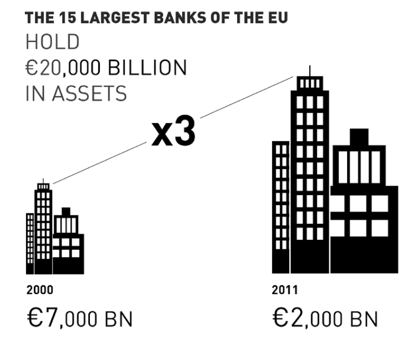
十年前，没有一家大银行的资产规模超过其原籍国的GDP。在大多数欧盟国家，银行业的集中度有所提高。在比利时，从1997年到2010年，五大银行的市场份额从52%增加到75%，在法国从50.9%增加到86%，在希腊从55%增加到70%，在爱尔兰从40%增加到57%，在德国从17%增加到33%。
欧盟有8000家银行。它们分为三类：
20家最大的银行，即占银行总数的0.25%，拥有总资产的50%，超过23万亿欧元（2011年的数字）。与大银行相比，小银行通常更为稳健，在国内和工业生产方面的放贷比例也更高。因为它们体积较小，所以风险也较小。许多研究表明，小型合作银行或储蓄银行比大型银行更有效率、更可靠、更有用。他们对客户更有帮助，更多地参与有用的本地投资，特别是当本地机构参与时。根据Liikanen的报告，奥地利、芬兰、德国和荷兰是最有效的合作银行和储蓄银行的欧洲国家。近年来，在政府和国家的相互勾结下，大型银行的策略之一就是破坏合作银行和互助银行的特殊性。在法国，自2009年以来，有两个明显的发展表明了这一点。“A”储蓄账户（Livret A）以前是Caisse d'Epargne、Banque Postale和Crédit Mutuel的专属领域，现在任何银行都可以将其商业化；而将这些储蓄集中在Caisse des dépôts委托（CDC）用作议会住房基金的做法受到了挑战。
德意志银行
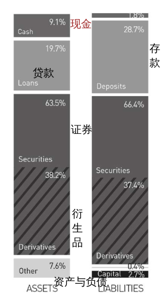
正如我们所看到的，占主导地位的银行模式已成为“全能银行”，它将大型金融集团组合在一起，提供全方位的银行和金融服务。显然，这会危及小储户和公共财政。在过去20多年里，这些机构承担了越来越大的风险。与投机性活动的收入相比，它们在家庭和企业贷款以及持有公共债务证券等传统银行业务收入中所占的份额明显下降。
德意志银行的资产负债表就是一个例子，说明了大银行将较少的资产分配给传统贷款的方式，而不是将存款交给他们照管。
这可以从2011年家庭和非金融公司为银行融资（即债务）贡献的金额中看出：比利时为41%，法国为23%，英国为28%，德国为36%。
相比之下，在他们的资产中，给予非金融公司和家庭的贷款比例非常小：比利时10%给非金融公司，9%给家庭；英国5%给非金融公司，15%给家庭；法国10%给非金融公司，12%给家庭；德国10%给非金融公司，17%给家庭。
住户和非金融公司存款和贷款占银行总资产的百分比（2011年）
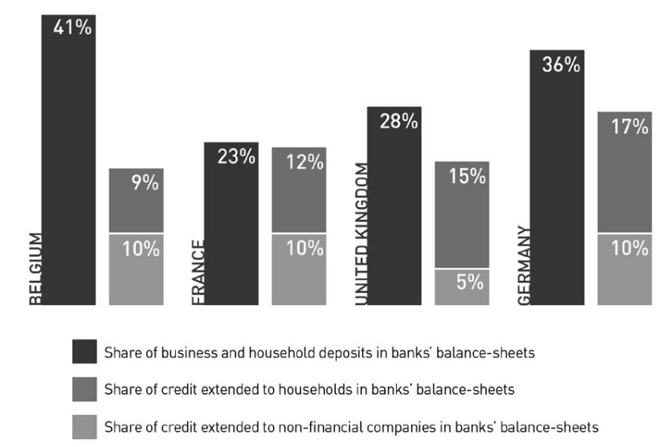
通过将投机活动优先于传统银行业活动，这些大银行在2008-2009年损失惨重，因此需要大规模的公共救助。2008年至2011年间，欧洲十大银行获得了1.62万亿欧元（占欧盟国内生产总值的13%）的公共援助的一半以上，这些援助是以资本重组和担保的形式发放的.
与其他大陆的情况一样，欧洲各大银行通过设立大量公司，使其业务活动尽可能不透明。在许多情况下，一家银行有一千多个不同的法律实体（见第四章，避税天堂）。除了使审计员的工作变得异常困难外，这些实体大多设在避税天堂，以期为自己及其富有的客户支付尽可能少的税款，并洗钱。与此同时，它们继续创造各种方式方法来增加其投机活动，并不断扩大规模。
股权缺口The equity gap
根据Liikanen报告，2011年，股本仅占各大银行总资产的2%至8%。对德意志银行而言，这一比例仅略高于2%。荷兰国际集团（ING）和北欧（Nordea）（瑞典）的股价略低于4%，而法国巴黎银行（BNP Paribas）、法国农业信贷银行（Crédit Agricole）、英国石油化工公司（BPCE）、法国兴业银行（SociétéGénérale）和巴克莱银行（Barclays）的股价约为4%。西班牙的桑坦德银行和BBVA银行，意大利的圣保罗银行和联合信贷银行，还有比利时的KBC银行，都在6%左右。
正如我们所看到的，监管当局允许这些比率如此之低，杠杆效应如此之高。他们创造了德意志银行“贷款”50倍资本的条件，这意味着其资产损失2%可能导致其破产。同样的监管机构允许法国巴黎银行达到25的杠杆水平。此外，其4%的资产损失可能预示着即将崩溃。这种过度的容忍使得银行业的连续危机不可避免。
美国和欧洲大型银行的规模
如果按照美国会计准则来考虑美国银行的申报资产，6家欧洲银行的规模将超过美国最大银行摩根大通（JPMorgan Chase）。然而，美国会计准则比欧洲准则（IFRS准则）更为宽松。美国当局允许其银行严重低估其资产，特别是其衍生品的价值（一种称为“净额结算”的方法）。据Olivier Berruyer称，按照美国标准，摩根大通账户中的169种衍生工具在2012年的价值为750亿美元，而在采用净额结算方法之前，这些衍生工具的价值估计为1.662万亿美元，是原来的22倍！彭博社同样表示：如果摩根大通的账户采用欧洲标准编制，其资产总额将达到4.5万亿美元，而不是其宣称的2.3万亿美元。彭博社接着说，如果欧洲标准适用于美国银行，摩根大通（JPMorgan Chase）、美国银行（Bank of America）和花旗集团（Citigroup）的资产比重将是全球三大银行。奥利维尔·贝鲁耶和彭博社的结论是一致的，尽管他们给出的数字不同.
尽管如此，欧洲银行的规模仍相对大于美国同行。与他们所在国家的GDP相比，他们的资产通常相当于该国GDP的50%或更多。美国最大的银行摩根大通（JPMorgan Chase）的规模略低于美国GDP的三分之一。2011年，瑞典北欧银行占瑞典国内生产总值的197%，丹麦丹斯克银行占丹麦国内生产总值的194%。至于比利时，2007年富通银行已经拥有比利时GDP的260%，而德夏则值180%。
欧洲主要银行的总资产（2012年，10亿欧元，占GDP的百分比）
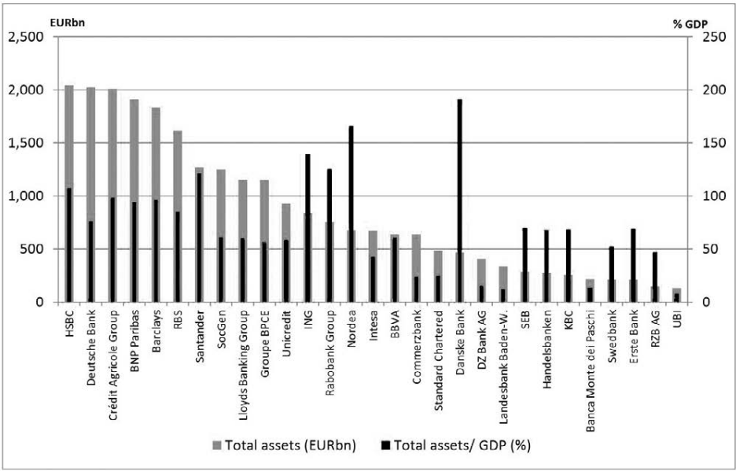
还有四家欧洲银行在华尔街和整个美国特别活跃：汇丰银行、德意志银行、瑞士信贷银行和巴克莱银行，它们在2011年占据了美国债务市场23%的份额。在收购/合并市场，瑞士信贷、德意志银行和巴克莱分别排在第四、第五和第六位，仅次于高盛、摩根大通和摩根士丹利。
欧美银行业的一个共同特点是，利用危机增强实力，进一步主导市场。这在美国和欧盟尤其如此，在那里，当局应该促进竞争，防止垄断或寡头垄断。2012年，美国前五大银行的存款占比为43.7%，而2007年为37.1%。四大银行（摩根大通、美国银行、花旗集团和富国银行）的资产自2007年以来增长了56%，达到7.7万亿美元.
各大银行伪装了比率，以通过2011年6月的压力测试，显示 比率超过10%。监管当局不仅创造了使操纵成为可能的条件，而且故意没有认真控制银行。
CADTM在2013年发布的2012年年度报告中，计算了两大以稳定著称的欧洲银行：法国巴黎银行和德意志银行的 比率和 比率（杠杆比率）。如下图所示，该结果甚至会让我们中最相信[银行？]的人感到担心。
两家银行都在资产中使用了风险加权来给人留下好印象。就法国巴黎银行而言，风险加权资产仅为5520亿欧元，而其总资产（包括非加权资产）为该金额的3.5倍，达到1.907万亿欧元。因此，比率出现了偏差：官方报告为11.7%，而实际上不到3.5%。德意志银行比法国巴黎银行更有效地伪装了自己的账户。
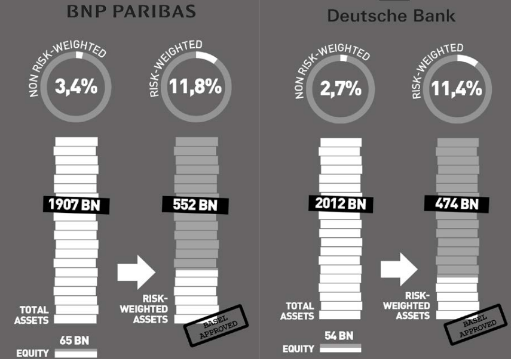
如果要相信英国《金融时报》（Financial Times）——在市场上制造恐慌肯定不符合其利益——德意志银行的处境比上图所示更加令人担忧和丑闻重重。这家欧洲最大银行的杠杆率（leverage ratio）似乎只有2.7%（或1/37），实际上只有1.6%（1/62）！这意味着，如果德意志银行将其2万亿欧元资产中的100亿欧元登记为“轻微”损失，它将濒临破产；如果损失322亿欧元，它的所有资本都将被吞噬！《金融时报》在同一篇文章中称，瑞银（瑞士主要银行）的比率为2.5%，法国兴业银行（法国）为2.8%，巴克莱银行（英国）为2.5%。在美国，据彭博社报道：
如果这些银行对衍生品和合并抵押贷款证券化采用国际标准，美国最大的两家银行摩根大通（JPMorgan Chase）和美国银行（Bank of America）的比率将降至4%以下。花旗集团和富国银行的利率将略高于4%
银行家和政府声称，银行已经清理和减少了资产，但现实情况却大不相同。2007年至2011年间，银行的资产规模再次增加至1.05万亿美元。它们直到最近才开始减少，然后只是略有减少。根据国际货币基金组织（IMF）的数据，2011年第三季度至2012年第二季度，欧洲银行的资产仅减少了2%
Liikanen报告的作者预计，由于危机的严重性，银行业将进行重组，银行资产负债表将减少，实力较弱的公司将倒闭。这并没有发生。自2008年金融危机爆发以来，资产规模一直没有萎缩。当时为43万亿欧元，2011年增至45万亿欧元。鉴于欧洲GDP略有下降，2011年欧洲银行的资产（包括债务）相当于欧洲GDP的370%！
2007年至2011年间，德意志银行的资产增长了12.4%，汇丰银行的资产增长了22.2%；法国巴黎银行增长了16%；法国农业信贷银行增长了22%；巴克莱银行增长了12%；桑坦德银行增长了37.1%；瑞典主要银行北欧银行增长了84.1%；德国商业银行增长了7.3%；意大利国际商业银行增长了11.6%，英国商业银行增长了19.1%。在18家欧洲顶级银行中，只有3家资产出现下降：苏格兰皇家银行（Royal Bank Of Scotland）、荷兰主要银行荷兰国际集团（ING）和意大利主要银行意大利联合信贷银行（UniCredit）分别为-28%、-3.33%和-9.3%
然而，欧洲银行正试图处置部分资产（这可能涉及银行的某些子公司和部门）。迄今为止，他们已经清算的资产与他们的资产负债表相比很少（除了德夏和KBC，他们已经卖出了许多资产）。实际上，银行不愿意出售一些可疑的产品，因为这些产品的价值很低。他们宁愿等待更好的销售条件，而这种情况可能永远不会发生。最后，当合同到期时，它们可能不得不被减记，损失相当大。
在与美国银行勾结时，美联储在2012和2013年度购买了相当数量的美国有毒资产（见词汇表），每月约400亿美元。2013年底，美联储资产负债表中的抵押贷款支持证券（MBS）总额超过1.5万亿美元！自2011年底以来，欧洲央行一直在接受来自欧元区银行的高风险、有毒资产的存款。 抵押贷款。欧洲央行在2011年12月初决定放宽某些资产作为抵押品的资格标准，如资产支持证券（ABS）和银行信贷债权。欧洲央行和美联储一样，也将私人银行难以处理的一些不良资产纳入了资产负债表.
在欧洲，2012年到期的商业抵押贷款（CMBS——商业抵押贷款支持证券）支持的结构性金融产品有70%没有全额支付。2013年这一比例达到了80%！这些产品在2004年至2006年之间销售，就在次贷泡沫破裂之前，2012年至2014年到期。根据评级机构惠誉（Fitch）的数据，在2012年前11个月到期的122家商业银行中，只有24家获得了支付（不到20%）。2013-2014年，这些合同的期限达到了319亿欧元。2012年，摩根大通（JPMorgan Chase）通过伦敦办事处在欧洲CMBS市场损失58亿美元，成为头条新闻，原因是其一位绰号“鲸鱼”的代理商管理不善。这并没有阻止德意志银行（Deutsche Bank）或苏格兰皇家银行（Royal Bank of Scotland）为欧洲市场创建新的CMBS！为什么这些银行会参与这些业务？这是因为高水平的风险是由期望比其他产品更高的回报来补偿的。他们是否赢了这场赌博还有待观察。
欧洲和美国银行的资产负债表上仍有数万亿美元的住房抵押贷款支持证券（MBS），特别是次级抵押贷款支持证券和其他类别的资产支持证券（ABS）。银行很难在不接受巨额损失的情况下抛售这些证券。截至2011年12月底，按揭证券的售价为面值的43%，但买家寥寥无几。在美国，银行和其他机构投资者只会购买有担保的MBS。银行对其资产负债表上持有的MBS的确切数量非常谨慎，对其资产负债表外持有的MBS更是如此。
在次贷危机前一段时间发明的另一种结构性产品CLO（抵押品贷款债务）引起了人们的关注，同时吸引了苏格兰皇家银行（Royal Bank of Scotland）等最具侵略性的欧洲银行进入与高风险相关的高收益区。用于获取投资者通过杠杆收购（LBO）进行公司收购所需的资金，当这些资金到期时，持有人会怀疑是否会全额支付，如果会，如何支付。欧洲CLO市场疲软，但2012年美国销售额达到390亿美元，因此欧洲银行购买美国CLO产品，期望获得良好回报。
摩根大通（JPMorgan Chase）和其他主要银行提议，为与国际贸易相关的信贷创造可与次级抵押贷款抵押债务（CDO）相媲美的结构性产品。CDO是由不同类型的抵押贷款创建的，银行希望通过将其证券化（也就是说，通过将抵押贷款转换为更容易交易的证券）来解除抵押贷款。摩根大通（JPMorgan Chase）希望用出口信贷而不是抵押贷款来再次实现这一目标。这是1994年创建CDO前身的同一家银行。出口信贷市场是每年10万亿美元。摩根大通（JPMorgan Chase）正试图说服活跃在这一市场的银行将这些信贷结构成CDO，以使其更具流动性。其理由是，这一做法将减少资产，从而降低杠杆效应，符合新巴塞尔协议III对提高资本比率的要求。事实上，对于摩根大通（JPMorgan Chase）和其他一直在寻求有利可图的金融创新的大银行来说，这是一个在主要市场上开放和开发的新矿。而摩根大通的策略也很奏效：新泡沫的进一步破坏前景很高。
2013年，花旗集团决定将新的合成CDO投放市场。这是最危险和最毒的类别，其起源可以追溯到20世纪初。在2005-2007年期间，大银行每年在市场上投入30到600亿美元。这场危机使合成CDO的问题停止了。2013年初，摩根大通和摩根士丹利试图为这类CDO注入新的活力，但均未成功。
几个月后，花旗集团（Citigroup）试图将它们重新投入“生产”和分销，出售了价值约10亿美元的产品。这一行动引起了专业媒体的强烈抗议，他们担心花旗集团正在打开潘多拉魔盒。
几个例子说明了银行继续承担的风险的严重性。法国兴业银行（SocieétéGénérale）遭受了打击（49亿欧元），原因是该行交易员Jéme Kerviel不断遭遇不幸。这件事可以追溯到2008年1月，人们可能会想象，银行从此吸取了教训。一点也不！2011年9月，瑞士银行瑞银（UBS）宣布，伦敦全球综合股票交易（Global Synthetic Equities Trading）经理阿多博利（Kweku Adoboli）未经授权的交易导致损失23亿美元。正是在伦敦，如上所述，摩根大通的“鲸鱼”为“他的”银行损失了55亿美元。这些事情只是冰山一角。
公司债券投机泡沫
许多金融市场观察家和基金经理认为，企业债券领域已经形成了投机泡沫，大公司发行这些债券是为了寻求稳定的融资。因此，这个新的泡沫是在大公司的债务上形成的。每年11万亿美元的市场怎么会产生泡沫？银行和其他机构投资者从美国财政部和主要欧盟国家的主权债券中获得的回报处于历史低位。寻找一个没有明显风险的更好行业的投资者发现，非金融公司的公司债券提供了更具吸引力的回报率，约为4.5%。
银行宁愿购买债务而不愿接受贷款的另一个原因是，如果需要的话，债务很容易在二级市场上转换成现金。这股债券热潮导致债券收益率严重下降，从2012年初的4.5%降至同年9月的2.7%。像雀巢这样的大公司在4年期的债务中可以发行5亿欧元，但不超过0.75%便士。这种情况是罕见的，但它表明公司债券的热潮确实存在。根据摩根大通（JPMorgan Chase）的数据，对这些债券的需求使得垃圾债券的收益率在2012年夏季自由下降，从6.9%降至5.4%。如果这种趋势继续下去，机构投资者可能会到别处寻找更好的回报。这样的后果将严重破坏私营公司获得融资的渠道。
支付实物债券
对利润的渴求使得公司设法发行PIK（实物支付）债券，这种债券在2006-2007年之前很流行，直到2012年才找到新的买家。这些债券在资本完全付清之前不收利息。当然，承诺的最终还款是很高的，但有一个很大的风险，即公司借款将无法偿还利息或资本时，贷款到期！事实上，对于放贷人来说，审慎的做法是询问一家在贷款期限内无法支付定期利息的公司如何能够在贷款结束时全额偿还贷款。再次，对利润的渴望和流动性的可获得性（因为央行贷款）导致了人们对这些高风险产品的浓厚兴趣。2013年，人们对PIKs的胃口比2012年更大，2012年已经是不错的一年。在这个市场背后，我们发现了高盛。
缺乏良好的抵押品
截至2007-2008年，金融市场经历了一个增长和繁荣的时期。银行和其他机构投资者在一轮快乐的资产旋转中相互借出资本和结构性产品，而没有对签署合同的人在到期时的信誉或承担责任的能力进行任何核实。例如，银行家向雷曼兄弟（Lehman Brothers）和美国国际集团（AIG）支付保险费，以提供支付违约风险的保险，而无需首先核实他们是否有能力在必要时支付赔偿金。
在大多数交易中，借款人必须提供资产作为担保。这叫做抵押品。这是它一直以来的运作方式，而且通常仍然如此，是同一抵押品被用来担保几个不同的交易。A向B借款并提供抵押品作为担保。B向C借款并使用与担保相同的抵押品，以此类推。如果链条在任何地方断了，就有可能找不到抵押品。只要市场兴高采烈，没有人问有关抵押品的令人尴尬的问题，交易照常进行。自2008年以来，情况并不完全相同，想要抵押物的联合承包商可能会坚持保证，如果需要，抵押物确实可用，抵押物的价值是真实的，并且知道抵押物的等级。抵押品流通减少，可疑抵押品被拒绝。
拒绝次级抵押贷款CDO等有毒资产作为抵押品是不合理的。这导致抵押品开始短缺。在2011和2012年间，法国比利时金融公司德夏公司的抵押贷款不足，无法满足其金融需求。2012，德夏在长期再融资业务（LTRO）框架中从欧洲央行以1%[利率]借入了350亿欧元。欧洲央行的巨额贷款仍然不够，因此在十月至2012年11月，德夏再次转向法国和比利时各州，进行50亿欧元的资本重组。这项计划的结束在望，但它给公共财政带来的损失将是巨大的。
据英国《金融时报》报道，西班牙银行已成为担保品创设方面的专家。他们从可疑的抵押贷款和其他同样可疑的产品中创建了结构性资产支持证券（ABS）产品，并将其作为财政部需要的抵押品推给欧洲央行（ECB）。欧洲央行接受为其定制的低级别抵押品。这个例子为欧洲央行如何向银行家低头提供了更多证据。
交易和卖空（Trading and short selling）
高频交易在0.1毫秒内即万分之一秒内向市场下订单。在读这句话所需的时间（大约5秒）内，可以下5万个订单。2012年12月19日，法国经济和财政部长皮埃尔·莫斯科维奇（Pierre Moscovici）在法国国民议会（议会）上提出的《关于银行监管和银行活动分离的法案》对高频交易的描述如下：
高频交易（HFT）是一种市场活动，它依赖于计算机使用同时提取和分析信息并以更高频率下订单的算法。他们可以每秒向交易平台发送几千个订单，这偶尔会导致饱和。风险很高，因为代码错误可能导致异常的财务变动（例如，2012年8月差点导致骑士资本集团{Knight Capital Group}破产的变动）。2011年，巴黎证券交易所60%的股票订单是由HFT下达的，其中约33%的订单导致了实际交易
高频交易具有投机性和不稳定性：它操纵金融市场以影响价格，从而获得更大的利润。其中最著名的操纵技术是“报价填充（quote stuffing）”，这是“一种快速进入和撤回大额订单的策略，试图用竞争对手必须处理的报价充斥市场，从而导致他们在高频交易中失去竞争优势”。绝大多数订单都不会执行，因为它们不在最佳出价/报价范围内，但在每毫秒的时间内都是一个强大的武器。为了以尽可能高的价格出售一批股票，高频交易者还可以使用“分层”方法，即在最高限价之前进行多次竞价，从而形成层层订单；一旦达到最高限价，他们就会在价格下跌之前大量卖出，同时取消所有无效订单。这一过程使竞争对手的销售分类账中充满了购买要约，然后通过扭转趋势使市场感到意外{逆市出击}。
2010年5月6日，纽约证券交易所（newyork stock exchange）经历了一场由高频交易（HFT）引发的“闪电崩盘”（Flash Crash），包括报价填充。当天14点42分至14点52分，道琼斯指数下跌998.52点（随后回升约600点）。10分钟内下跌9.2%是股市历史上前所未有的事件。这起事件暴露了高频交易与股市崩盘的关联，相当于华尔街三分之二的股票交易。
这样的事故肯定会再次发生。所有使用高频交易的大银行都以这会阻碍金融市场流动性为借口，拒绝对其进行监控。
自营交易（Proprietary trading）是一项主要的银行业务，它产生大量的收入和利润，但风险非常大。银行利用自身资源（股票、客户存款、贷款）在不同的金融市场上买卖头寸：股票和股票、利率、外币、原材料、衍生品、期货、远期、大宗商品（包括食品）及其期货、房地产。
[上述]交易绝对是一种投机行为，因为它是建立在短期价格波动的基础上的，而这些价格波动很大程度上受到自身行为的影响。2008年，法国兴业银行（SocieétéGénérale）亏损49亿欧元，这是交易投机性质的一个例证，原因是该行一名交易员Jéme Kerviel持有接近500亿欧元的头寸。摩根大通（JPMorgan Chase）允许其伦敦自营交易部门（London property trading department）一名名为“鲸鱼”（the Whale）的员工占用1000亿美元。银行参与自营交易的金额巨大，损失可能威胁到银行自身的生存。
卖空是指卖方目前不持有的股票，但打算以后购买，以便提供给买方。卖空有两种基本类型。第一种是有担保卖空：在这种情况下，卖方已经借入（或达成借款协议）股票，最终必须在操作结束时出售。事实上，此人借出的股票将被出售，他或她承诺将同样的股票返还给贷款人。第二种是裸卖空或无担保卖空：在这种情况下，在出售股票之前没有借入股票或借入协议。然后卖方必须购买相同的股票才能把它转给买方。
然而，根据法国银行业联合会（Fédération Bancaire Française）的说法，“卖空是市场正常运转的一种有用手段。（……）它增加了市场的流动性。他们在愚弄谁？
卖空是由大量市场参与者完成的，如银行、对冲基金和包括养老基金和保险公司在内的金融机构。这纯粹是一种投机活动。投机者赌有关股票的价格会下跌，如果猜测正确，则以低于出售价格的价格购买，从而获利。这种做法破坏了市场稳定。卖空加剧了2011年夏季银行股价格的大幅下跌。很容易理解为什么应该简单地禁止这种活动。
大型银行仍在玩火，因为它们确信，只要它们需要，政府就会救助它们。这鼓励它们承担更大的风险，而不必面对后果；国家担保在银行纾困中发挥着关键作用。因此，银行在其发展道路上没有严重的障碍；它们不断地与灾难调情。尽管有炫耀的活动来重建他们的客户信心，他们也不打算做任何事情，除了追求最大的利润，并以自己的最大利益来影响政府的决定——反对人民的利益。他们的力量在于政府目前的放任态度。
主流大众媒体不断支持银行家和政治领袖的言论，他们声称银行目前脆弱的原因是公共债务的负担。这等于对公众进行了系统的造谣。同样的谎言不断重复，所以一定会在人们的脑海中留下一些痕迹。公共债务威胁银行稳定的观点，已成为掩盖银行责任的烟幕弹，也成为为反社会政策清理公共财政辩解的借口。因此，必须阐明这一问题并提出一些反驳意见。
自2007-2008年以来，各大央行（欧洲央行、英国央行、美联储和瑞士央行）都将防止私人银行体系崩溃放在了绝对优先的位置。与主流观点相反，威胁银行的主要风险并不是政府决定暂停偿还主权债务。自2007年以来，没有一家银行因为这样的违约而破产。由于一个负债过多的国家违约，政府不需要任何纾困措施。对银行来说，真正的威胁是自上世纪70年代末开始放松管制以来，它们策划建立的私人债务。自2007-2008年危机爆发以来，除了空头支票和大张旗鼓的声明，各国政府没有采取任何措施结束放任。私人银行的资产负债表和资产负债表外估值仍然充斥着不良资产。正如我们所看到的，它们的范围从有毒资产，如定时炸弹，到非流动资产（即不能在金融市场上出售的资产），包括高估值的资产。出售和贬值资产以化解其爆炸性潜力是不够的。其中相当一部分依靠短期融资（由公共机构用纳税人的钱提供或担保）.
Dexia,是一家法国比利时银行，它的行为就像一个大型对冲基金，在四年内发现自己濒临破产三次：2008年10月，2011年10月和2012年10月，在那一年最后的破产。比利时《太阳报》（The Belgian daily Le Soir ）观察到，德夏的母公司股权在2010年底和2011年底之间从192亿欧元跌至27亿欧元。在合并账目中，权益为负（2012年6月30日为23亿欧元）。
2011年底，德夏证券的即期应付债务为4130亿欧元，衍生产品债务为4610亿欧元。加起来，这些数字相当于比利时国内生产总值的2.5倍多。然而，德夏的执行官比利时副总理Didier Reynders和主要媒体仍然声称德夏的经济困境是由欧元区南部主权债务危机造成的。事实上，希腊对德夏的债务在2011年10月低于20亿欧元，也就是银行即付应付债务的1／200。截止2012年10月，德夏证券的市值约为0.18欧元，占2008年9月价值的1%。然而，法国和比利时政府决定再次拯救为德夏有毒资产创造的不良银行，从而增加其国家的公共债务。在西班牙，BFA（Banco financiaro y de ahoros，Bankia的母公司）几乎破产，再次是因为可疑的金融交易，而不是因为政府或央行违约。自2008年以来，同样的模式在欧洲和美国再次上演了大约30次。公共机构纷纷用公共贷款救助私人银行。主权债务因此增加。自2008年以来，公共债务急剧增加的主要原因可以追溯到私人银行。
在最近的一项调查中，IMF（仅此一次for once）证实了我们的分析，这项调查没有被媒体报道，也没有从银行家或政治领导人那里得到华丽的声明。调查表明高水平的私人债务比高水平的公共债务更不利于经济增长。英国保守派周刊《经济学人》在2013年10月26日版中指出：
国际货币基金组织（IMF）最近的研究显示，高私人债务比高公共债务更不利于经济增长。事实上，IMF的研究发现，只有当家庭和企业部门也负债累累时，过度的主权债务才会降低经济增长
最后，虽然主权债务迄今尚未给银行业带来任何灾难，但在西班牙和意大利等国，银行显然大大增加了对本国政府发行的债务证券的购买。他们这样做有两个很好的理由：一方面，他们可以依靠欧洲央行以极低利率（0.05%至1%）提供的慷慨贷款；另一方面，这些证券的回报率很高（10年内根据发行时间的不同，回报率在4%至7%之间）。但紧缩措施如此极端，根本无法确定西班牙和意大利政府是否有能力支付。这个问题不是迫在眉睫，但将来可能会有困难。
最终，如果不采取激进措施，这些困难将影响国家和他们的人口——从取消对某些银行（如德夏）的国家担保开始。要实现银行体系的根本变革，必须揭露政治领导人和银行高管之间的勾结，杜绝他们犯罪后逍遥法外的现象。
银行通过其交易活动，已经成为场外交易（OTC：over-the-counter markets）市场和最终商品市场（ultimately on the commodity market）上的主要投机者，因为它们拥有的金融手段远远超过该领域的其他主角。快速浏览商品商业奖网站就会发现，银行和经纪商在商品市场（原材料买卖市场）和商品衍生产品市场都扮演着重要角色。这些银行中最常见的参与者是法国巴黎银行、摩根士丹利、瑞士信贷、德意志银行和兴业银行。一些银行甚至更进一步，开发了能够直接影响原材料库存的工具。瑞士信贷（Credit Suisse）与全球最大的原材料贸易/经纪公司 嘉能可斯特拉塔（Glencore Xstrata）的合作就是如此。
在欧洲银行中，法国巴黎银行和德意志银行是大宗商品市场上最具影响力的银行之一，在原材料衍生品领域发挥着关键作用。2013年，法国巴黎银行（BNP Paribas）创造并销售了一种新产品，该产品为原材料贸易商提供各种信贷，他们可以用来购买石油、矿产和农产品。以债券形式发行这些信贷有两个目标：第一，将它们从银行的账簿中删除（因为它们在风险方面的权重很大）；第二，通过出售这些结构性产品赚取收入。在将这一新产品投放市场之前，法国巴黎银行设法让惠誉机构将3A评级归因于这一潜在高风险产品的较高部分。如果法国巴黎银行（BNP Paribas）成功地赢得养老基金和其他机构投资者对其大宗商品支持证券的投资，其它几家大银行将密切关注这一结果，以期创建自己的。
美国几家银行在大宗商品市场份额控制策略上走得更远，特别是摩根大通、摩根士丹利和高盛。例如，2013年前四个月，摩根大通向美国进口了3100万桶石油！美国银行拥有炼油厂、电站、电网、金属、金属储备公司、农产品、页岩气开采公司等。这是怎么发生的？2003年，美联储授权花旗环球银行（universal bank Citigroup）收购交易公司Phibro，理由是持有原材料（石油、谷物、天然气、矿产等）库存，以补充商品期货衍生品市场的银行活动是正常的。至于摩根士丹利（Morgan Stanley）和高盛（Goldman Sachs），在1999年银行业改革法（该法伴随着《格拉斯-斯蒂格尔法案》（Glass-Steagall Act）的废除）颁布后，它们一直拥有投资银行家的地位，直到2008年，它们才能够购买电站、油轮和其他基础设施。摩根士丹利就是这样拥有驳船、油轮、管道和油气码头的。摩根大通（JPMorgan Chase）则在2010年以17亿美元收购了苏格兰皇家银行（Royal Bank of Scotland）大宗商品部门，使其能够在英国和美国收购74家金属仓库，而高盛（Goldman Sachs）则持有112家。因此，这两家银行共同拥有的金属仓库比嘉能可（Glencore）还多，嘉能可拥有179家金属仓库。仓储仓库是至关重要的，尤其是如果一个公司或一个公司的卡特尔公司（例如银行）想通过最大库存来推测价格，以迫使价格上涨或通过去库存来降低价格。这正是自2008年以来在铝市场发生的事情。据《纽约时报》进行的一项调查显示，自2010年高盛收购底特律铝仓库以来，铝棒的交货期从6周缩短到16个月。尽管全球市场铝库存量有所增加，但价格仍大幅上涨。结果，可口可乐和酿酒厂米勒等在罐头生产中大量消耗铝的公司反应强烈，仅在底特律，高盛就从铝库存中获得了2.2亿美元的收入。
在操纵股票价格获利丰厚之后，实际大宗商品市场上最活跃的银行采取了退出策略。原因如下：首先，监管部门已经意识到几家银行的操纵行为。摩根大通（JPMorgan Chase）、巴克莱（Barclays）和德意志银行（Deutsche Bank）因操纵加州电力市场等多起事件被罚款。摩根大通已同意就此事支付4.1亿美元的罚款。美国当局在与银行竞争的公司的压力下，面对民众对整个银行业的不满，正认真考虑限制银行在实际商品市场上的活动。其次，投资贸易公司所需的硬资本（核心一级资本）大于其他类型的投资（例如主权债务）。因此，由于银行必须提高自身的比率，他们认为最好取消对实物商品市场的全部或部分投资。
尽管如此，银行仍将在以商品为基础的衍生品市场和与原材料有关的金融市场的所有领域保持高度活跃。除非采取激进措施，否则它们所能造成的损害将仍然很大。
这些银行是投机泡沫发展的原动力和摇篮，而投机泡沫是从商品市场中成长起来的。当它最终爆发时，余波将袭击银行，这将意味着进一步的损害。更为严重的是对出口原材料的南方国家的人口造成的灾难性影响。地球上所有的人都会受到这样或那样的影响。
2007-2008年投机导致的粮油价格上涨
2007-2008年，对美国主要大宗商品（农产品和原材料）价格谈判市场的投机行为在食品价格上涨中发挥了根本性作用。这一价格爆炸导致营养不良人数剧增1.4亿人，使营养不良总人数达到10亿人（七分之一）。这种投机行为的主要参与者不是孤立的牛仔，而是机构投资者：投资银行、养老基金、共同基金、保险公司、商业银行和嘉吉等大型经纪公司。对冲基金和主权财富基金也参与其中，不过程度较小。
在2008年5月20日于华盛顿举行的一个国会委员会审查之前，曾执掌华尔街对冲基金12年的迈克尔.W.马斯特斯（Michael W.Masters）就机构投资者对大宗商品价格上涨的有害影响作证。他宣称：“你问的问题是：”机构投资者是否对食品和能源价格上涨做出了贡献？而我的回答是“Yes”。他在证词中解释说，食品和能源价格上涨不是供应不足的结果，而是大宗商品期货市场新参与者需求的突然增加。在期货市场，投资者购买即将到来的产量——下一个小麦收成或三、六年之后石油产量。理论上，这些市场的主要投资者是希望保证其经营所必需的商品供应的公司，例如保证未来燃料供应的航空公司，或购买特定谷物的农业工业公司，机构投资者拨给商品指数交易的资产从2003年底的130亿美元增至2008年3月的2600亿美元。同期，在这些市场上市的25种商品价格上涨了183%。
他解释说，商品市场是一个狭小的市场（narrow market）。养老基金等机构投资者只需分配2%的资产就可以压倒整个体系。2004年，这个市场上的合约总值约为1.8亿美元（44 trillion），约为240倍还多（240 times more）。马斯特斯表示，同年，机构投资者在期货市场投放了250亿美元，约占市场的14%，然后，仅在2008年第一季度，他们就向期货市场投放了550亿美元。物价飞涨就不奇怪了。
期货市场上商品的价格直接影响到这些商品的当前价格。当机构投资者在2007年至2008年期间购买了大量粮食时，这立即就导致了大规模价格通胀。
2008年，商品期货交易委员会（CFTC）裁定，机构投资者不能被视为投机者；这些破坏性的参与者是合法的“商业市场参与者”。这使得商品期货交易委员会可以断言投机行为不会影响商品市场的价格。马斯特斯（Michael W.Masters）对商品期货交易委员会（CFTC）提出了严厉的批评，但没有马里兰大学（University of Maryland）法学讲师、1997年至1999年商品期货交易委员会（CFTC）交易与市场司前司长格林伯格（Michael Greenberger）那样严厉。在参议院委员会于2008年6月3日召开之前，他批评了CFTC董事们在面对机构投资者操纵能源价格时埋头（bury their heads），并引用了他们的一些声明，这些声明构成了一个人类伪善和白痴的选集。据公认的专家迈克尔格林伯格（Michael Greenberger）称，美国股市80%至90%的能源交易都是投机交易。
2008年9月22日，在美国金融危机的中心地带，当布什总统宣布了7000亿美元的救助计划（更不用说还提供了大量的流动资金）时，大豆价格因投机而暴涨61.5%。
雅克·贝塞洛特（Jacques Berthelot）在231篇研究报告中用了六页篇幅探讨投机行为的影响，他还指出投机行为在价格上涨中所起的关键作用。他举了比利时KBC银行为例，该银行开展了一项广告活动，向储户出售一种新的商业产品，名为“KBC Life MI Security Food Prices 3”，计划投资6种农业原材料。KBC的广告口号是：“利用食品价格上涨的机会！他说，这次促销活动将“水和农田短缺”视为一次“机会”，因为这意味着“食品短缺导致食品价格上涨”。
关于美国的司法系统，投机是他们的权利。保罗·乔里安在《世界报》发表的一篇评论文章中说，质疑华盛顿法庭于2012年9月29日作出的裁决，该裁决使CFTC采取的措施是为了最大限度地限制一个经营者在商品期货市场上的持仓量，以确保经营者本身不能够使其不稳定。
前联合国食物权问题特别报告员让·齐格勒并不讳言：
2007-2008年的金融危机，由银行主义引起，已经产生了两个显著的后果。首先，对冲基金和主要银行在2008年后调整了活动方向，减少了金融市场的某些部分，转向大宗商品市场，特别是农产品市场。如果我们考察占世界粮食消费75%的三大主要作物（玉米、水稻和小麦），它们的价格已经暴涨。18个月来，玉米价格上涨了93%，每吨大米价格从105美元涨到1010美元，每吨小麦价格自2010年9月以来翻了一番，达到271欧元。这种价格爆炸为投机者带来了天文数字般的利润，但却在棚户区杀死了数十万妇女、男子和儿童。第二个后果是对冲基金和其他投机者急于购买南半球的耕地。据世界银行（World Bank）统计，2011年，仅在非洲，就有4100万公顷（超过1.01亿英亩）的耕地被投资基金和跨国公司占用。结果是驱逐了小规模[经营]的农民(farmers)
2013年2月，非政府组织法国乐施会（Oxfam France）在一份题为“Réforme bancaire:ces banques françaises qui spéculent sur la faim”（银行改革：猜测饥饿的法国银行）的报告中指出，2012年11月，法国四大银行——法国巴黎银行、法国兴业银行，农信银行(Crédit Agricole)和纳蒂克斯公司（Natixis BPCE）为他们的客户管理了至少十八只基金，这些客户对大宗商品市场进行投机。法国乐施会食品安全主管克拉拉·贾马特解释说：
投机有两种方式：在农产品衍生品市场上持仓。或者通过这些指数基金来监测农产品价格并推高它们
这些基金大多是在2008年粮食危机爆发后设立的，其具体目的是通过投机粮食和其他大宗商品获利。
同样，2013年，布鲁塞尔的另类融资网络（Réseau financealternatif）谴责在比利时工作的六家银行参与世界饥荒的投机活动。比利时银行客户的大约9.5亿欧元被用来投机食品.
备选方案
为了结束这种状况，以下是18项替代粮食危机的建议：
所有人的粮食安全首先要有稳定的粮食价格，以支付生产成本，并确保生产者获得公平收入。西方政府提倡的低价格模式，旨在增加制成品和服务（旅游、娱乐、电信等）的大量消费，既不具有社会可持续性，也不具有环境可持续性（socially nor environmentally sustainable）。这种模式主要有利于大型农业综合企业和私人银行，也有助于这些国家的政治和经济精英攫取权力，将民众的注意力从民主思想转移到大众消费上。
面对当前的粮食和环境危机，必须迅速作出根本性的改变。以下建议是基于粮食主权的农业和商业政策的实际想法。它们将把粮食价格稳定在能够确保绝大多数国家可持续粮食生产的水平上。
在地方一级：
银行是货币市场的主要参与者。它们助长了汇率的持续不稳定。超过95%的货币交易是投机性的。货币交易中只有一小部分涉及投资、与实体经济相关的商品或服务贸易或移民汇款。2013年，外汇市场的日交易量约为5.3万亿美元。银行和共同基金一样，可以要求大量的流动性，并推动货币升值或贬值，以便从汇率波动中获利。它们还利用外汇衍生品，这可能导致相当大的损失，更不用说货币不稳定对整个社会的不利影响了。从2013年5月起，新兴大国（如印度、巴西、南非、俄罗斯、土耳其和阿根廷）的货币成为投机性攻击的目标，价值损失高达20%。美元和欧元之间的汇率也一直是投机的目标。
2013年，四家银行控制了50%的外汇市场（德意志银行，15.2%；花旗集团，14.9%；巴克莱银行，10.2%；瑞银银行，10.1%）。如果再加上六家银行（汇丰银行、摩根大通、苏格兰皇家银行、瑞士信贷、摩根士丹利和美国银行），这十家银行就占据了80%的市场份额。其中一半交易发生在伦敦交易所。
操纵汇率丑闻
虽然监管当局认为伦敦银行同业拆借利率（LIBOR）丑闻几乎已经结束，但2013年底又爆发了一桩操纵外汇市场的新丑闻。美国、英国、欧盟、香港和瑞士金融市场监管部门怀疑至少有十五家大银行串通操纵汇率，包括欧元和美元之间的兑换率，仅占每日1兆3000亿美元的交易量。涉嫌的银行包括巴克莱银行、花旗集团、德意志银行、高盛、汇丰银行、摩根大通、摩根士丹利、苏格兰皇家银行、渣打银行和瑞银。据说有18名交易员因这起丑闻而被停职或解雇。英国监管当局表示，损害程度至少相当于操纵LIBOR导致60亿美元罚款。
最重要的是，英格兰银行的高管似乎与这两件事都有牵连。2012年4月，专攻外汇市场的交易员向英国央行（Bank of England）高管讲述了他们的所作所为，而英国央行（Bank of England）没有采取任何行动。即使不是直接勾结，也是疏漏，虽然信息很难获得，且在主流媒体中很少得到传播，但银行高管和监管机构之间的关系已逐渐暴露出来。
2013-2014年，几家美国养老基金起诉7家银行（巴克莱、花旗、德意志银行、汇丰、摩根大通、苏格兰皇家银行和瑞银），要求赔偿因操纵汇率而面临的损失。他们声称欠他们100亿美元的赔偿。荷兰（包括最大的养老基金PGGM）和其他欧洲国家的养老基金也在考虑采取法律行动。
金融交易税悬而未决
四十多年前，1972年，约翰 肯尼迪经济顾问委员会（John F.Kennedy's Council of Economic Advisors）成员詹姆斯托宾（James Tobin）提议“在我们效率过高的国际货币市场的车轮上撒些沙子”。尽管一些政界领袖发表了精彩的演讲，但外汇市场投机的瘟疫却愈演愈烈。银行家和其他金融机构的游说团实际上得到了保证，保证他们的盈利不会受到任何障碍。然而，自从托宾的提议以来，货币市场上的每日交易量已经增加了500多倍。
2013年1月，欧元区11国政府提出的欧洲理事会指令（European Council Directive）要求对金融交易（不包括货币交易）征收1/1000的税，这一指令完全不够，却可能永远无法实施。此外，它根本不涉及外汇交易。各银行竭力游说，以避免实施该法案，并进一步限制其范围。法国政府与银行关系非常密切，积极干预，支持银行游说工作的要求。不出所料，2014年2月19日的法德首脑会议并没有形成明确的立场。不仅外汇业务没有针对性，而且具体对哪些衍生产品征税的问题仍在谈判中。在这种有偏见的情况下，不可能有公正的解决办法。
这就是为什么现在是时候通过实施一个真正的托宾式税收制度来阻止投机的螺旋式增长了，这种税收制度对外汇市场和超过一定数量的所有金融交易都有影响。这将是全面禁止货币、大宗商品和食品投机的第一步，同时禁止高频交易、结构性金融产品、信用违约掉期、衍生品业务和通过避税天堂的交易。
美联储前董事格林斯潘（Alan Greenspan）在2007年写道：
为了促进所有这些贸易的融资、保险和及时性，金融工具的跨境交易量必须比贸易本身增长得更快。必须发明或发展全新的金融形式；信用衍生品、资产支持证券、石油期货等都使世界贸易体系的运作效率大大提高。
在许多方面，我们全球贸易和金融体系的明显稳定，是对1776年亚当·斯密（Adam Smith）颁布的简单、久经考验的原则的重申：个人之间的自由贸易，遵循自己的利益，导致经济增长、稳定
格林斯潘（Alan Greenspan）提出的作为灵丹妙药的金融创新{The financial innovations}是一个巨大的失败，引发了自20世纪30年代以来最严重的银行业、经济和社会危机。这些银行自2007-2008年以来一直没有清理过账户。更糟糕的是，它们还积极创造了新的泡沫和新的结构性金融产品。
机构投资者（保险公司、养老基金、其他银行和主权财富基金等）对银行不再有信心，对购买其发行的担保债券或或有可转换债券（CoCo）犹豫不决，希望找到稳定的长期融资。基金经理认为这些投资有风险，希望获得7%或8%的回报。
2013年，巴克莱不得不承诺，其CoCo的潜在买家将获得7.65%的回报。比利时联合银行（KBC）提出的回报率为8%，法国农业信贷银行（Crédit Agricole）为7.8%，爱尔兰银行（bank of Ireland）为10%。2012年发行总量为2002年以来最低。市场在2013年有小幅上升，但仍然非常低迷。按照监管部门的要求，银行必须出售其债券，以提高其股本/资产比率。
由于在市场上找不到足够的长期资金，这些银行依赖欧洲央行提供的价值1万亿欧元的三年期贷款，这些贷款的利率已从1%逐步下调至0.05%，更广泛地说，是最工业化国家的中央银行（由美联储领导，世界银行 英国、瑞士国家银行和日本银行）。
除了存款和储蓄账户中的资金由于危机几乎没有任何增长外，它们的大部分融资必须在短期市场上找到。根据Liikanen的报告，欧洲大型银行的日常运作需要7万亿欧元。1998年至2007年间，银行短期债务规模从1.5万亿欧元大幅增长至6万亿欧元，而从2010年至2012年，银行短期债务规模仍为7万亿欧元。银行在哪里能找到这些短期资金？它们依赖于货币市场基金（MMF），这些基金有高达2.7万亿美元可用于日常交易，这取决于欧洲的危机之风如何吹来。MMF在2011年6月关闭了资金流，并在欧洲央行贷款1万亿欧元时重新开放。在任何时候，它们都可能再次关闭或限制水流。最可靠的资金来源再次是中央银行。自2013年12月以来，欧洲央行以0.25%的利率发放了大量贷款，之后又降至0.15%和0.05%。
结论很清楚。如果欧洲央行三年内没有1万亿欧元的贷款，没有日常贷款，没有与欧洲体系挂钩的国家央行的支持（在紧急流动性援助计划的框架内），必须加上英国央行和瑞士国家银行，许多欧洲大银行将受到威胁窒息和破产。这是银行没有清理账户的更多证据。他们必须找到大量的短期资金，而他们持有价值可疑的长期资产。在许多情况下，资产负债表上的资产在到期时不会实现其价值，所遭受的损失可能会吸收其全部资本。
来自证券交易所的资金也被冻结。银行股的平均价格已降至2007年水平的五分之一。证券交易所上市公司的资本化价值几乎全部缩水，银行受到的冲击最严重。我们稍后将看到，在2007-2008年的混乱之后，2008年银行业的状况再次恶化。机构投资者抛售了他们在银行的许多股份，相信保留这些股份将导致进一步的损失。由于欧洲央行、英格兰银行、美联储和瑞士国家银行从2011年底开始的干预规模达到1万亿欧元，银行股价下跌停止，银行开始看起来好一点，这鼓励机构投资者继续持有他们仍然持有的银行股。美联储大规模购买资产支持证券（ABS）也有助于美国银行业的生存。2012年，各国央行继续通过银行向金融市场注入流动性。从2013年1月起，工业化国家的股市出现了改善。
2014年，直到2015年8月26日写下这些字眼，股价继续上涨，但另一个投机泡沫即将来临。事实上，2013年，虽然欧元区实际经济活动下降0.4%，美国上升1.9%，英国下降1.8%，日本上升1.7%，但欧元区股市上涨18%，美国股市上涨22%，英国股市上涨13%，日本股市上涨42%。银行股跟随这一趋势，改善了其财务状况。
这并不是银行从股市泡沫中获得的唯一优势。银行是证券交易所交易的中间人，他们获得佣金——这是一种交易活动。2013年，摩根士丹利（Morgan Stanley）、高盛（Goldman Sachs）、德意志银行（Deutsche Bank）、瑞士信贷（Credit Suisse）、瑞银（UBS）、花旗集团（Citigroup）、美国银行（Bank of America）和摩根大通（JPMorgan Chase）等大型银行的银行和投资部门收入的50%都来自这一活动。正如英国《金融时报》2014年1月报道的那样，银行越来越依赖飙升的股市，2013年第四季度，投行总收入的近一半来自股票交易和承销。
任何一本实用经济学教科书都会告诉你，股票应被视为长期投资，平均保留8年左右。理论上，证券交易所应该帮助上市公司获得长期投资资本。然而，这种情况是行不通的，因为证券交易所不再是一个公司可以找到长期资金的地方，而是一个纯粹投机和敌意收购的地方。在实践中，证券交易所的投资可能是非常短期和高度投机性的，这些现象在今天的高频交易中被放大。
银行业是一个泥泞不堪的巨人，需要适当的资本重组，在这里，它们再次严重依赖政府融资。根据为机构投资者提供股票投资建议的主要咨询公司贝伦伯格（Berenberg）2013年6月发表的一份研究报告，欧洲银行业必须进行资本重组，成本在3500亿欧元至4000亿欧元之间（其中三分之二将由欧元区银行承担），而欧洲当局通常提到的数额要低得多。贝伦伯格认为巴塞尔委员会的要求完全不足以保证最大的私人银行的财务状况。一家银行对另一家银行的分析导致贝伦伯格建议投资者抛售其在瑞士信贷、法国农信银行、德意志银行、桑坦德银行、法国兴业银行和德国商业银行的股份。贝伦伯格发现，前四家银行的实际硬资本与总资产的比率低于2%。这证实了我们在这本书中所强调的，带来了新的证据，证明了作为其推动者的资本主义理论与现实之间的巨大差距。
我们都知道一句俗话，“大到不能倒”。
政府管理银行所引发的危机的方式，现在已经导致了同样简单的“大到不能坐牢（Too Big to Jail）”！
尽管美国政府在2008年9月让雷曼兄弟破产，但没有其他银行被关闭或解散，也没有董事被判处监禁。西方世界唯一的例外是冰岛，那里的法院监禁了三名银行董事。2012年12月，2008年破产时冰岛第三大银行Glitnir的首席执行官拉鲁斯•韦尔丁（Larus Welding）被判处9个月监禁。2013年12月，Kaupthing的两名主要董事Sigurdur Einarsson和Hredar Mar Sigursson被判处5年和5年半[的监禁]。
然而，美国和欧洲的司法系统面临着最大银行的严重不法行为——有组织地欺诈其客户、小股东和公众股东、从有组织犯罪中洗钱、高层逃税、阴谋操纵利率（欧元银行同业拆借利率、伦敦银行同业拆借利率）、汇率和金融市场（CDS和商品），欺诈和伪造，内幕交易，销毁证据，贪污，共谋战争罪。。。名单还在持续。但没有人因为这些而面临过监禁。
美国司法部长Eric Holder在参议院委员会审讯时，明确界定了“大到不能坐牢”的理论基础：
“我担心，其中一些机构的规模变得如此之大，以至于当我们遇到一些迹象表明，如果你真的起诉，如果你真的提起刑事诉讼，将对国民经济，甚至世界经济产生负面影响时，我们确实很难起诉它们。
其含义是明确的。投机和金融犯罪造成了近一个世纪以来最严重的经济危机，这一事实在司法上的分量很小。即使这些过分行为与美国各级银行业的大规模欺诈行为密切相关，这些机构事实上已授权继续其业务，并在“庭外”解决其侵权行为。
试想一下，经过长时间的调查，警方是否逮捕了一名盗窃100万欧元的罪犯。然后在初步审理过程中，罪犯说，‘听着，这是我们要做的；我要付2000欧元的罚款，然后你放我走，我们就不再提它了！你说呢？（Now listen, here’s what we’ll do; I’ll pay a €2,000 fine, then you let me go and we’ll say no more about it! What do you say?）法官回答说：“没问题！抱歉打扰了。请尽量不要再被抓住。“真是太让人遗憾了了。（No problem! Sorry for the bother. Please try not to get caught again. It would be such a shame）”这段想象中的对话与银行得到的特殊待遇相对应。伯托德 布雷希特（Berthold Brecht）一针见血地问道：“与开银行相比，抢银行算什么？”
银行破坏性活动的直接后果极其严重：2007年至2013年间，美国有1400万家庭被逐出家园（见下图）。其中包括近50万次非法驱逐。数百万人失业，迫使他们的家庭收入低于贫困线。受其影响而自杀的人数增加，公共债务激增，发达国家的养老基金损失了4.5万亿美元。
美国和西班牙的房屋收回
| 时间\国家 | 美国United States | 西班牙Spain |
|---|---|---|
| 2005 | 53,2833 | |
| 2006 | 71,7522 | |
| 2007 | 128,5873 | |
| 2008 | 233,0483 | 4,9848 |
| 2009 | 282,4674 | 5,9632 |
| 2010 | 287,1891 | 8,1747 |
| 2011 | 188,7777 | 9,4825 |
| 2012 | 183,6634 | 7,6724 |
| 全部 | 1428,7687 | 36,2776 |
当司法系统回避银行及其董事所犯下的罪行，以避免他们在狱中度过哪怕是一天的时候，私人银行系统显然在资本主义体系中扮演着如此重要的角色，以至于它超越了现代社会的法律和宪法框架。尘埃落定后{When all is said and done}，正如高盛（Goldman Sachs）首席执行官劳埃德•布兰克费恩（Lloyd Blankfein）所言，银行机构董事很难因“做上帝的工作”而受到起诉。
如果银行与法律或监管机构之间的关系没有经常证实大西洋两岸“大到不能进监狱”原则的做法，那么这样的声明将是可笑的。法律规定的罚款数额很小，只占非法活动所得利润的一小部分，然后就“照常营业”，犯罪者就不会再有麻烦了。一些替罪羊，比如J·R·M·Kerviel，确实被判刑了，这是因为老板们并不总是用他们所有最狡猾的伎俩来推动公司利润最大化的。{but never the bosses who pushed them to maximise company profits using all the slyest tricks in the game.}
在接下来的章节中，四个例子足以描述当前的情况。首先，美国银行与各有关部门达成协议，避免在涉及次级抵押贷款、止赎和非法驱逐的事务中受到起诉。其次是汇丰银行（英国最大的银行），在美国因墨西哥和哥伦比亚贩毒集团洗钱而被罚款。接下来，我们将操纵银行间市场和衍生品利率，就像伦敦银行同业拆借利率（LIBOR）事件中发生的那样。最后，还有瑞士主要银行瑞银（UBS）组织的国际逃税网络。
美国当局与银行达成协议，不起诉他们的房屋抵押和非法收回丑闻；他们只是被要求支付一小笔罚款。如前一章所述，自2006-2008年危机爆发以来，已有1400多万家庭被驱逐出家园，其中至少有50万是非法的。其中一项针对银行的指控是基于银行未能提供文件证明驱逐拖欠抵押贷款的房主是正当的。由于缺乏监管，以及危机前发放的大量次级贷款，银行不得不雇佣员工，每天“自动签署”数十份甚至数百份文件，批准止赎，而不必遵循正确的法律程序。银行在没有经济或法律依据的情况下收回了大约50万套住房。（我们的数字只包括最终调查和未决诉讼，因此其可能会大大提高）。尽管银行的欺诈行为造成了巨大的损失，但在许多情况下，每户家庭的罚款仅为300美元，从1500美元到2000美元不等则很少。对银行的其他指控涉及出售结构性产品，由银行出售的有毒抵押贷款（抵押贷款支持证券）组成的住房抵押贷款公司，如“房地美（Freddie Mac）”和“房利美（Fannie Mae）”，然后由美国政府买断。
2010年至2013年底，仅在抵押贷款方面，美国不同部门和主要银行就达成了26项协议。
所有大银行都参与其中。自2008年以来，他们已同意支付860亿美元，以避免在有关住房贷款的法律程序中作出不利的判决。美国银行支付了440亿美元；摩根大通支付了264亿美元；富国银行支付了95亿美元；花旗集团支付了47亿美元；高盛支付了近10亿美元，摩根士丹利支付了3.3亿美元，其中必须包括法律和其他费用。相比之下，2012年，这六家银行在缴纳了当年的罚款后，净利润总计599亿美元。2013年甚至更好。扣除180亿美元的罚款后，他们的净利润增长了21%，达到740亿美元。如果这六家银行不必缴纳罚款，它们的利润将超过2006年的创纪录水平，当时正处于房地产泡沫的浓重时期。所有人都清楚，媒体报道的“重罚”并没有阻止银行家们打开软木塞庆祝他们虐待数百万家庭所获得的利润。
尽管有证据证明这些银行的欺诈和欺骗行为，尽管数百万普通人成为这些骗局的牺牲品，但他们没有面临任何刑事指控，也没有一次被捕。银行与当局之间的谈判和协议解除了银行在以往事务中的法律和财务责任。更糟糕的是，摩根大通（JPMorgan Chase）首席执行官杰米•戴蒙（Jamie Dimon）在2013年获得了74%的加薪，他的年薪高达2000万美元。
英国汇丰银行（HSBC）在75个国家拥有26万名员工，号称拥有5400万客户，是“大到不能坐牢”现象的又一例证。在过去的十年里，汇丰银行为墨西哥和哥伦比亚的贩毒集团洗净了8亿8100万美元，负责成千上万起与枪支有关的谋杀案。尽管来自美国各政府机构（包括验钞机办公室）的数十条警告，这项业务的利润是如此之大，以至于汇丰银行不仅忽视了警告，而且在墨西哥办事处开设了一项特殊服务，在那里，毒贩可以简单地交出现金来洗钱。据透露，汇丰银行被控未能遵守反洗钱条例，对近7000亿美元的转让和超过94亿美元从墨西哥汇丰银行购买美国货币。该行还违反了对伊朗、苏丹和缅甸等国的制裁。尽管汇丰公开藐视法律，但它几乎没有面临任何法律后果。2012年12月，汇丰银行被判处19亿美元罚款（约其一周收入），作为其洗钱活动的全额和最终惩罚。虽然协助和教唆恐怖组织和贩毒可判处5年徒刑，但没有一名董事或雇员被起诉。因此，银行董事可以自由参与贩毒、违反制裁或任何其他犯罪，而不受惩罚。
《国际先驱论坛报》（IHT）报道了据说司法部在门后对这个案子说了些什么。根据他们的消息来源，几名检察官希望汇丰认罪，承认它违反了法律，要求银行向当局通报任何可能可疑的超过10000美元的交易。这一抗辩将导致汇丰失去其美国银行执照，从而结束其在美国的活动。经过几个月的谈判，最终决定不提起刑事诉讼，以避免银行倒闭。甚至决定避免损害银行的形象。没有定罪。19亿美元的小额罚款伴随着5年的试用期：如果当局在2013年至2018年期间发现汇丰没有结束这些做法，司法部可以重新审理此案。这个结果可以总结为：“淘气的孩子！你的赎罪是罚款一周，并承诺五年内不再这样做，这显然是一家“大到不能坐牢”的银行的例子。
2013年7月，在参议院委员会就汇丰银行举行的听证会上，马萨诸塞州民主党参议员伊丽莎白沃伦（Elizabeth Warren）质问了大卫科恩（David Cohen），他作为负责打击恐怖主义和金融间谍活动的副秘书，代表美国财政部。她提出了以下几点：美国政府非常重视洗钱，有可能关闭从事这项活动的银行，个人可以永久禁止从事银行和金融活动，并可能受到起诉。
然而，在2012年12月，汇丰银行承认为墨西哥和哥伦比亚贩毒集团洗钱8亿8100万美元，并在许多时间内违反了许多违反制裁的规定。汇丰（HSBC）已支付罚款，但没有任何人受到制裁，也没有提及关闭汇丰在美国的业务。“在有人考虑关闭这样的金融机构之前，你需要为毒枭洗钱多少亿美元？她问。财政部代表回避了这个问题，说这个问题太复杂，无法回答。这位参议员最后说，当一个小可卡因贩子被抓获时，他会在监狱里呆上几年，而那些洗钱数十亿美元的银行家晚上可以在自己的床上安睡，而不用担心被起诉。
时任英国贸易和投资大臣的汇丰银行首席执行官史蒂芬•格林
史蒂芬格林生动地说明了财政和政府之间的共生关系。在这种情况下，情况更进一步，因为他不满足于作为银行家和部长为大资本服务。他的“事奉”甚至延伸到成为英国国教的牧师。他写了两本关于商业和道德的书，特别是《侍奉上帝，侍奉财神？》标题暗指圣经的引文。
没有人能服侍两个主人，因为他要么恨一个，爱另一个；要么抓住一个，轻视另一个。你们不能事奉神和财神（马太福音6:24）。
金钱象征着财富、贪婪和利润。这个名字出现在亚拉姆语、希伯来语和腓尼基语中。猛犸有时被比作撒旦。至于斯蒂芬·格林，他获得了最高大学院校的荣誉学位，显然是不可触碰的。
格林在进入私人国际咨询公司麦肯锡（McKinsey）之前，在英国海外发展部（British Ministry of Overseas Development）开始了他的职业生涯。1982年，他被汇丰银行（HSBC）聘用，并在那里迅速晋升到责任重大的职位。他于2003年被任命为执行董事，并于2006年成为汇丰董事长，并一直留任至2010年。
美国当局对洗钱8.81亿美元和与2003-2010年期间有关的其他非法交易提出指控。根据2012发表的334页的参议院报告，斯蒂芬·葛霖在2005被一名雇员告知汇丰银行已经在墨西哥设立洗钱行动，许多可疑交易正在进行。同样在2005年，总部位于纽约的金融服务公司彭博（Bloomberg）指控汇丰（HSBC）洗钱。史蒂芬·格林回答说，这些指控“完全不负责任”，使人怀疑一家伟大的、无可指责的国际银行的诚信。2008，美国联邦当局通知斯蒂芬·葛霖，墨西哥当局已经发现在墨西哥涉及汇丰银行的洗钱行动，以及开曼群岛的汇丰银行分部。该机构表示，此类活动可能会对汇丰造成刑事责任。与指控的严重性相比，随后出现了一系列相当温和的警告。汇丰银行承诺改变其行为，但继续其犯罪行为。
最后，汇丰银行于2010年10月发布了一项停止令，以结束这些非法活动。2012年底，在参议院委员会的报告公布和美国不同安全机构数月的讨论之后，汇丰银行被罚款19亿美元。
斯蒂芬·葛霖不能声称他不知道他的银行在做什么，不仅在墨西哥，在离岸避税天堂，而且在中东和美国。他是他的团队的首席执行官，曾担任汇丰银行银行百慕大群岛有限公司的董事，墨西哥汇丰银行和中东汇丰银行。他还曾任汇丰私人银行控股（瑞士）有限公司（HSBC Private Banking Holdings（Switzerland）SA）和汇丰北美控股有限公司（HSBC North America Holdings Inc.）总裁。
2012年，当美国宣布对汇丰银行（HSBC）实施巨额罚款的决定时，史蒂芬•格林（Stephen Green）已不在汇丰。他现在是首相卡梅伦领导下的英国内阁大臣。
事后看来，斯蒂芬·格林的时机恰到好处，显示了他的艺术才华。2010年2月，他出版了一本书，题目是《好价值：对金钱、道德和不确定世界的思考》。前言提出并回答了以下问题：“一个人既能成为一个有道德的人，又能成为一个有效率的商人吗？汇丰银行（HSBC）主席、牧师斯蒂芬•格林（Stephen Green）也这么认为，当然，作者、牧师和汇丰银行主席斯蒂芬•格林（Stephen Green）都可以识别“道德人”和“有效商业人”。宣传工作进行得很好，与此同时，伦敦大学东方与非洲研究学院（SOAS）授予格林博士荣誉勋章。
2010年10月，美国司法部第二次下令汇丰银行停止犯罪活动。在这一消息公布之前，斯蒂芬·格林就跳槽了。下个月，在大卫 卡梅伦的要求下，他获得了荣誉，并被任命为西苏塞克斯郡赫斯皮尔彭特的格林男爵。2010年11月22日，一个商人被指控为贩毒集团、流氓国家和恐怖分子提供洗钱便利，成为汇丰银行（HSBC）董事长之后，他将成为上议院议员，成为这个国家的终身贵族，这是多么不寻常的事情。事实确实比小说更离奇。
斯蒂芬·格林于2010年12月辞去汇丰银行的职务，于2011年2月出任贸易和投资国务部长。因此，他继续为与他关系非常密切的英国公司的利益服务。2010年5月，他成为英国工业联合会副主席。就在美国参议院关于汇丰银行事件的报告出炉之际，他利用自己的专业知识，将伦敦提升为2012年7月举行的奥运会的候选人。斯蒂芬·格林拒绝回答上议院议员就这一丑闻提出的问题。他受到上议院保守派团体领导人的保护，该团体认为，部长对与其部长职务无关的事务不应向议会负责。
2013年，大卫卡梅伦称赞格林勋爵在增加英国出口和促进商业条约，特别是欧盟-美国跨大西洋条约（TTIP）方面所做的“出色工作”。他还为扩大英国在全世界的军售做了大量工作。2013年12月，他结束了他的任期，现在他把时间花在了会议上演讲（毫无疑问，要花相当大的费用）和获得许多学术机构授予他的荣誉上。
他的事业当然还没有结束。他的虚伪是没有限度的。2009年3月，在一次关于2007-2008年危机责任的新闻发布会上，正是在汇丰银行卷入臭名昭著的洗钱事件时，他有勇气宣布：
所有这些事件背后都有一个关于行业文化和道德的问题。就好像人们常常放弃问某件事是否正确，而只关注它是否合法，是否符合规则。
他进一步补充说，有太多人严重损害了该行业的声誉.
斯蒂芬·格林就是这样对那些急急忙忙在主流媒体上重复他好话的走狗说话的。
格林和他所有组织洗钱的汇丰亲信都应该在法庭上为他们的罪行负责，在法庭上，他们应该被判重刑，并提供一段时间的社区服务。汇丰银行应该被关闭，其董事也应该被解雇。银行应分拆为较小的公共控制单位，并有严格界定的公共服务目标。
汇丰银行可耻的过去
英国汇丰银行最早是在鸦片战争（1839-1842年和1856-1860年）中英国战胜中国之后，混迹于国际毒品贸易中的。这两场战争对大英帝国的巩固和持续了一个半世纪的中国边缘化起到了重要作用。通过鸦片战争，大英帝国迫使中国接受从英属印度进口鸦片。中国一直反对这种贸易，但事实证明，在华盛顿的支持下，英国武器的力量更加强大。它是在公元1865年由英国人建立的香港殖民地，一个苏格兰商人创造了（香港和上海银行股份公司：Hong Kong and Shanghai Banking Corporation：HSBC）。他专门从事鸦片贸易，这是香港与印度70%贸易的基础。
从那一刻起，该行的历史就与英国在亚洲的利益密切相关。1949 Mao Tse Tung革命胜利后，汇丰银行撤回了香港，其仍然是英国殖民地。从1980年到1997年，这家银行发展了美国和欧洲的活动，但在1993年才将总部迁到伦敦，为1997年将主权移交给中华人民共和国做准备。汇丰银行继续在香港金融业扮演重要角色，发行香港70%港元纸币（Hong Kong Dollar banknotes）。香港现在已经成为中国新统治阶级（the new Chinese ruling classes）使用的洗钱链条的一个主要环节。
汇丰和其他白领犯罪
除了从毒品和恐怖主义中洗钱外，汇丰还被指控参与其他事务：操纵外汇市场（此案于2013年审理，集中在每天5.3万亿美元的市场）；操纵LIBOR银行间利率；滥用和欺诈性地出售利率衍生品；滥用和欺诈性地向英国上市公司和小公司出售保险产品（金融服务管理局起诉汇丰出售价值很低或没有价值的保单）；滥用在美国出售抵押贷款支持证券；操纵金银价格（案件于2014年1月和2月告破）；与高层逃税的大规模勾结（如下所述）。
法尔卡尼先生，汇丰银行的爱德华·斯诺登？
法籍意大利人Hervé Falciani于2006年至2008年间在日内瓦汇丰银行（HSBC）担任系统工程师。在离开汇丰并移居法国之前，他复制了127000份文件，这些文件清楚地将汇丰与大规模欺诈和逃税业务联系在一起。瑞士通过国际刑警组织发出国际逮捕令，理由是数据盗窃、违反银行和商业机密以及工业间谍活动。瑞士没有起诉汇丰。
2009年初，法国警方持有对他在尼斯的住所的搜查令，缴获了爆炸性文件，据法尔基亚尼说，法国当局将包括8231名法国人、800名比利时人、近600名西班牙人和约2000名希腊人在内的数千名逃税者列入国际货币基金组织总裁 拉加德的著名“拉加德名单”。还有许多德国人、意大利人和美国人。
随后，法尔卡尼声称已经与华盛顿当局合作，向他们提供有关汇丰银行从墨西哥和哥伦比亚贩毒集团洗钱的调查信息。他在2012年前往西班牙协助西班牙当局。在那里，他首先是在瑞士的一项国际逮捕令下被捕的，瑞士要求引渡他。西班牙拒绝了这一要求，因为他是涉及欺诈和逃税的几个重大事件的主要证人。Falciani向西班牙当局提供的信息显示，桑坦德银行总裁Emilio Bot的家人在瑞士账户中存入了大约20亿欧元，后者被罚款2亿欧元。马里亚诺·拉霍伊（Mariano Rajoy）的人民党骗取资金的丑闻也被曝光。西班牙司法部门已将法尔基亚尼置于警方的永久保护之下。比利时和法国当局利用他提供的信息进行逃税诉讼，但不确定是否会提出任何指控。庭外和解的可能性更大，也更常见。
想要追查告密者的不止瑞士一个；希腊也起诉了《Hot Doc》杂志编辑科斯塔斯·瓦克塞瓦尼斯（Kostas Vaxevanis），因为他敢于在2012年10月公布希腊当局开庭了三年之久的拉加德-汇丰-法尔基亚尼名单（the Lagarde-HSBC-Falciani list that the Greek authorities had been sitting on for three years.）。在希腊和国际舆论的压力下，他最终被无罪释放。揭露一家银行及其所保护的富人欺诈者并非易事；谴责那些保护银行神圣的保密准则的富人欺诈者也并非易事。
大银行和统治阶级之间存在着真正的共生关系，就像政府和大公司，特别是金融公司之间存在的共生关系一样。
汇丰发现欧盟指令存在漏洞
2013年，欧盟宣布将董事和交易员的银行奖金上限定为固定工资的两倍。因此，对于150万欧元的薪水，奖金将限制在300万欧元，这相当于450万欧元的年总收入。汇丰银行毫不犹豫地提高了固定工资，以维持奖金水平。
说明当前情况的第三个例子是2005年至2010年期间对伦敦银行同业拆借利率（LIBOR）的操纵。伦敦银行同业拆借利率（LIBOR）是一种用于3.5万亿美元资产和金融衍生品市场的基准利率，这意味着它是仅次于美元汇率的全球第二大基准利率（见第18章）。这一利率是基于18家银行提供的有关其在银行间市场融资成本的信息。2012年，有证据显示，瑞银（UBS）、巴克莱（Barclays）、荷兰合作银行（Rabobank）和苏格兰皇家银行（Royal Bank of Scotland）等大型银行为了自身利益而串通操纵LIBOR。他们知道他们可以逃脱惩罚。尽管监管机构在全球范围内采取了措施（美国、英国、EU、加拿大、日本、澳大利亚、香港），到目前为止，还没有对银行提起刑事诉讼，罚金数额与利害攸关的数额相比微不足道。它们总共不到100亿美元，与造成的损失相比，每家银行所占份额微乎其微。这一丑闻导致数家银行首席执行官辞职，例如巴克莱（英国第二大银行）和荷兰合作银行（荷兰第二大银行），并解雇了数十名交易员。但是，值得注意的是，没有一家银行丧失了继续在他们密谋操纵的市场上运营的权利，也没有一家首席执行官被监禁。
虽然这些银行承认了操纵的指控，并接受了英国法律规定的罚款，但美国司法部门却表现出了极其宽大的态度。2013年3月29日，纽约地区法官Naomi Buchwald免除了银行对因操纵伦敦银行同业拆借利率而遭受损失的个人或机构的任何法律责任。为了防止银行因串通和垄断行为而受到起诉，她认为竞争法不适用于LIBOR利率，银行可以在不违反美国反垄断法的情况下就利率达成一致。由于互换和CDS市场的利率是以同样的方式确定的（使用参与者发送的平均利率），这样的决定开创了一个危险的先例，为主要金融机构公然操纵支配全球金融市场的关键利率打开了大门。在美国，LIBOR丑闻在2014年3月经历了一个新的发展，当时美国联邦存款保险公司（FDIC）对十多家主要银行（摩根大通、花旗集团、美国银行、瑞银、瑞士信贷、汇丰银行、苏格兰皇家银行、劳埃德银行、巴克莱银行、兴业银行、德意志银行）提起了法律诉讼，加拿大皇家银行、东京三菱UFJ银行等）。我们会看看这个案子是否也会被驳回，或者在没有坐牢威胁的情况下被罚款。
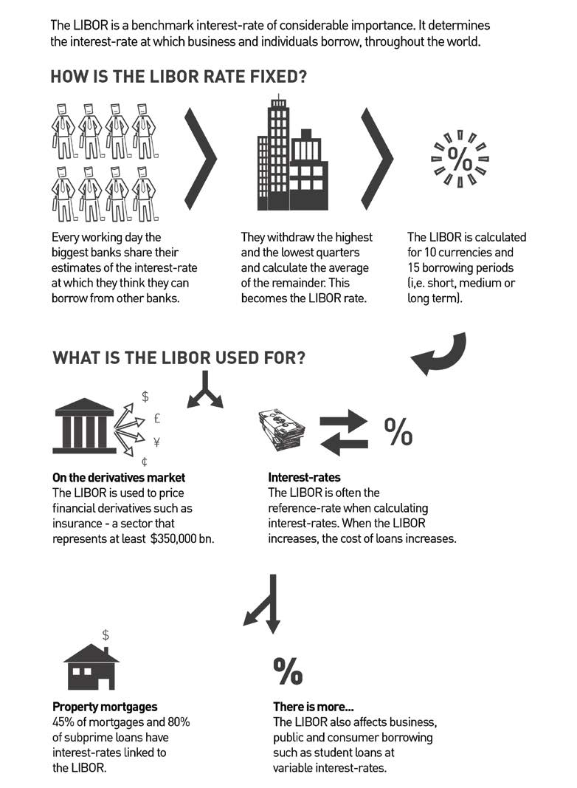
在伦敦银行同业拆借利率（LIBOR）丑闻的背景下，欧盟委员会（European Commission）对8家银行处以总额17亿欧元的罚款，因为它们成立了操纵衍生品市场的卡特尔。四家银行操纵欧元汇率市场衍生品的利率，六家银行操纵日元汇率市场衍生品的利率。事实上没有把他们告上法庭的逻辑又被应用了。
此外，由于被告银行同意支付罚款，数额减少了10%。被罚款的银行有摩根大通和花旗集团（美国第一和第三大银行）、德意志银行（德国领先银行）、法国兴业银行（法国第三大银行）、苏格兰皇家银行（英国第三大银行）和马丁（RP Martin）。作为对他们同行通报情况的回报，两家银行，即瑞士联合银行（UBS）和英国第二大银行巴克莱银行（Barclays）被免除了罚款。
总而言之，我们回到了中世纪的放纵：如果你花钱赎罪，你可以留在金融的天堂。如果你对自己的错误行为感到后悔，并向其他小偷告发，那么你将被免去支付赎罪金或罚款。
澳大利亚政府进一步上演了这场闹剧：他们斥责法国巴黎银行（BNP Paribas）2007年至2010年间在澳大利亚银行同业拆借利率方面存在“潜在不当行为”。法国巴黎银行解雇了交易员，并承诺捐赠100万澳元来推广金融文学（financial literature）！
瑞士联合银行（Union de Banques Suisses）于2008年10月通过大量注入瑞士公共资金，从破产中获救。它涉及LIBOR操纵丑闻、货币市场操纵丑闻（香港、美国、英国和瑞士的监管机构的几项调查）以及在美国市场滥用结构性抵押贷款证券。瑞银（UBS）和它的伙伴，特别是汇丰（HSBC）和瑞士信贷（Credit Suisse）一样，开始专注于为美国、欧洲和其它地区的富人大规模逃税。
一名前瑞士银行雇员对法国巴黎银行（Le Parisien-Aujourd'hui en France）的证词显示，自2012年以来一直在法国接受刑事调查的瑞士最大银行已经建立了一个完善的逃税机器，以鼓励法国人进行诈骗。审查此案的巴黎金融法官纪尧姆·达伊夫（Guillaume Daïeff）和谢尔盖·图奈尔（Serge Tournaire）怀疑瑞士银行（UBS）建立了一个广泛的体系，旨在非法招揽法国客户，并鼓励他们在2000年代在瑞士开设未申报的账户。
几周后的2014年2月，瑞银的另一项指控出现在一本书中，该书由瑞银驻法国的前员工撰写，负责组织引人注目的休闲活动，以吸引客户。
其目的是让瑞银的代表与个人财富超过5000万欧元的潜在客户（最好是最富有的客户）接触。百万富翁不只是被一杯咖啡所吸引；这些活动必须是奢华的——高尔夫比赛、赛船会、歌剧晚会——然后是在一位著名厨师的餐桌上共进晚餐。真是再好不过了（Nothing was too good）。[……]每次都有大量瑞士银行代表出席。他们来自巴塞尔、日内瓦、洛桑、苏黎世；他们的任务是让我们预先选定为目标的百万富翁把他们的财富存入银行。每年，苏黎世总公司都想要一份报告：有多少新客户？多少新钱？规则是一项活动必须盈利。
在法国，审判是缓慢和犹豫不决的，在比利时，瑞银的欺诈计划与其他地方一样，它一点用也没有（it does nothing at all）；但在德国，瑞银与当局在2014年7月达成协议。瑞银同意支付3亿欧元罚款，以避免起诉。该银行被控，帮助其德国客户在列支敦士登的基金会和信托基金背后隐藏自己的财富。据进行调查并对瑞银在德国的子公司进行了几次突击检查的波鸿（Bochum）检察院称，有关资金约为200亿欧元。由于罚款定为3亿欧元，瑞银将支付欺诈案所涉金额的1.5%.
瑞银是第三家被德国当局罚款的瑞士银行。另外两家银行，朱利叶巴尔（Julius Bär）和瑞士信贷（Credit Suisse）分别需要支付5000万欧元和1.49亿欧元。在这三起案件中，银行都是通过支付这些微不足道的罚款来避免适当的定罪，而且当丑闻被掩盖时，它们的形象只被稍微玷污了一点。他们还必须改变自己的财务战略；但他们可以以自己的方式进行，而不会对他们从事银行业务的自由造成丝毫威胁。
美国发生的事件证实了“大到不能坐牢”的说法。2008年，美国当局对瑞银提起诉讼，指控瑞银在本国组织逃税网络，当时瑞银正在管理约5000名美国和加拿大富人的账户，帮助他们逃税。他们的财富被藏在瑞士（通常是在经过几个避税天堂以掩盖他们的踪迹之后）。在调查过程中，美国当局得以查阅瑞银（UBS）前逃税专家布拉德利•伯肯菲尔德（Bradley Birkenfeld）2007年向他们传递的信息。
布拉德利：告密者还是赏金猎人？
布拉德利·伯肯菲尔德是美国公民。他在波士顿的州立街（State Street，美国第十三大银行）开始了他的银行业生涯。在辞去这份工作之前，他于1994年与联邦调查局联系，谴责他发现的错误行为，但银行没有受到起诉。1996年，瑞士信贷（Credit Suisse，瑞士第二大银行）任命他为财富管理人。1998年，他搬到巴克莱（英国第二大银行）。2001年，他搬到了日内瓦的瑞银（UBS），随身携带富有客户的账户。正是在这里，在瑞银集团（UBS）老板之一劳尔•威尔（Raoul Weil）的负责下，他帮助建立了一个逃税网络。据Birkenfeld称，他在2005年离开瑞银时意识到自己参与的活动的严重性。然而，应当指出，根据瑞士法律，这些活动并不非法。2007年，他决定联系美国司法部，以谴责瑞银在2006年美国法律的掩护下的非法活动，该法律保护并奖励揭露税务欺诈的举报人。美国国税局（Internal Revenue Service）的举报办公室甚至已经成立。官方网站主页上写着：
国税局举报人办公室向举报人付款，举报人向未缴纳所欠税款的人举报。如果国税局使用举报人提供的信息，它可以给举报人最高30%的附加税、罚款和其他所收金额
布拉德利•伯肯菲尔德（Bradley Birkenfeld）向美国国税局（IRS）和美国司法部（US Department of Justice）传达的信息，使这两家机构得以对瑞银（UBS）提出一个确凿的指控。根据美国法律，瑞银非法活动的严重性本应意味着撤销其银行执照，但正如后来汇丰银行和其他大银行发生的情况一样，华盛顿当局只是决定支付罚款（2009年2月为7.8亿美元，之后为2亿美元）。美国还迫使该银行通知他们，有美国公民在瑞士联合银行（UBS）的帮助下将他们的财富藏在了瑞士（一份4450人的名单）。为了实现这一目标，华盛顿有时使用强硬手段——威胁吊销银行执照，并临时逮捕2014年出庭受审的劳尔•威尔（Raoul Weil）等银行高管.
与此同时，伯肯菲尔德最初为与美国当局合作付出了沉重的代价。2008年5月被捕，2009年8月受审，他因在瑞银的非法活动被判处40个月监禁。在对伯肯菲尔德的抗辩中，检察官认识到，如果没有他的合作，司法部和国税局将无法收集瑞银不当行为的证据。Birkenfeld于2010年1月开始入狱。他向奥巴马总统提出上诉。他还要求司法部长埃里克·霍尔德（Eric Holder）修改对他的审判，并在服刑31个月后于2012年最终获释。但国际媒体强调的是他获释后的遭遇：美国国税局向他支付了1.04亿美元的报酬，因为他举报了瑞银的非法活动。美国国税局的结论是，比尔肯菲尔德有权获得一部分税收和罚款，这些税收和罚款是从富有的逃税者那里收取的，这要归功于他的信息。
在这里不可能分析伯肯菲尔德的动机。他是白人骑士，告密者，还是一个告密者兼赏金猎人？（a white knight, a whistleblower,or simply an informer and bounty hunter?）重要的是以下观察：参与严重非法活动的银行及其董事——那些管理和策划不当行为的人——逍遥法外。这家银行至多被判罚款。
但是，那些谴责银行非法活动的人却要自己承担风险。事实上，在瑞士法律看来，他们违反了银行业的保密规定，而在美国，他们可能会受到奖励，同时面临监禁。
银行和其他国际金融机构经常充当卡特尔的角色，表现出极为罕见的玩世不恭和滥用权力的程度。如今，一旦政府将公共资金投入到那些在投机活动中浪费资源的机构中，法院（应该看到法律的实施）就竭尽所能地保护这些机构，从而使这些银行犯下的违法或犯罪行为变得笼统，有时甚至成为后验。
这种情况下，不受惩罚是规则，煽动财务董事承担更大的风险。银行本身没有受到起诉，甚至很少被要求对其活动负责。如果出了什么问题，他们就会转向Jérôme Kerviel等交易员，被雇佣银行起诉要求赔偿损失。至于高级董事，他们的奖金水平随着银行收入的增加而增加，无论收入来源是非法的还是高度投机的。即使银行收入下降，奖金也会增加。最坏的情况是，他们与银行进行了黄金握手（a golden handshake：大笔退休金），没有受到起诉，并且保留了他们所有的个人收益。
只要这个扭曲的制度继续存在，金融机构滥用和掠夺公共资源的金融体系也将继续。不仅仅是银行董事不受当局的困扰，也包括那些“太大而不能坐牢”的银行本身。这个显示出银行之间存在的共谋和共同既得利益，主要股东、高级管理部门和中央政府机构。这只是在金融丑闻和庭外和解的迷雾中显露出来的冰山一角。这些事情中有很大一部分从来没有被当局公开过。
在严重违规的情况下，必须采取坚定的纪律行动：必须禁止某些活动，永久性地从犯有刑事罪行的机构撤回银行牌照，以及向负有责任的董事和主要股东索赔的损失和损害费用。
最后，迫切需要将大银行拆分为较小的部门，以限制风险，使银行社会化并受大众控制，以创造一种以满足社会需要和保护环境为优先的公共银行服务。
自2007年以来，受到20世纪30年代以来最大经济危机打击的西方大多数工业化国家的政府和中央银行，将拯救私人银行和金融体系（保险公司、共同基金、私人养老基金等）列为重中之重。我们首先分析为实现这一目标而采取的措施，然后审查更广泛的政策框架。银行纾困是以牺牲绝大多数人为代价的。各国政府已尽最大努力维护私人银行的主要特权，并保持其权力的完整性。其代价是巨大的——公共债务激增，税收流失，对家庭和小企业贷款的严格限制，以及进一步的投机和冒险活动，在某些情况下，这些都需要昂贵的新救援计划。
中央银行大量向私人银行放贷
自2007年银行业泡沫破裂以来，大多数工业化国家的主要央行（欧洲央行、英国央行、美国联邦储备银行、瑞士央行、日本央行）都向银行大量放贷，以避免破产。如果没有这种无限制的信贷来源，许多银行可能会发现自己无力偿还债务，因为通常的资金来源减少了——银行间市场失灵，因为银行对彼此失去信心，银行担保债券的销售变得疲软，货币市场资金变得不稳定。自2007年以来，各国央行向私营部门发放的贷款总额超过20万亿美元。由于这是以非常低的利率提供的，大银行已经能够大大减少利息偿还。
除了直接注资，各国央行还有其他方式来帮助私人银行。2008年至2014年间，美联储购买了大量抵押贷款支持证券，总额达1.5万亿美元。仅在2012-2013年，它每月就从银行和抵押贷款机构购买了高达400亿美元的资产。到2013年底，美联储开始减少购买，2014年3月购买量不超过350亿美元。截至2014年10月，美联储持有价值1兆7000亿美元的MBS，约占这类有毒产品总值的21%。
欧洲央行本身并不购买这些产品，而是允许银行将其作为抵押品，即作为发放贷款的担保。2010年至2013年期间，存放在欧洲央行的资产支持证券（ABS）的“价值”在3250亿欧元至4900亿欧元之间。
欧洲央行还购买了私人银行发行的担保债券，为其活动提供资金。欧洲央行的此类援助对私人银行极为重要，正如我们在第19章中看到的那样，私人银行在金融市场上寻找资金存在严重困难。媒体完全忽视了这种援助的范围。自危机爆发以来，欧洲央行购买了760亿欧元的担保债券，在一级市场购买了220亿欧元，在二级市场购买了540亿欧元，其中包括评级严重至BBB的债券，表明对发行机构缺乏信心。2014年3月18日，欧洲央行持有价值520亿欧元的担保债券，占银行发行的担保债券总量的很大一部分。（据记录，2013年发行量为1660亿欧元。）
银行从中央银行和政府累积援助
政府援助由担保和注资组成，目的是对银行进行资本重组。在2008年10月至2011年12月期间，作为应急措施，欧洲各国政府担保了1.174万亿欧元（占欧盟GDP的9.3%）。除了这些担保之外，还必须向银行提供4420亿欧元（占欧盟GDP的3.5%）的公共资本支持。在2012和2013年间，资本重组继续进行——仅在2012年西班牙就有大约400亿欧元，希腊超过500亿欧元，塞浦路斯的200亿欧元，比利时德夏银行的40亿欧元，意大利的Monte Dei-Pasi的39亿欧元，荷兰银行SNS的37亿欧元，在2014年7月葡萄牙救助西班牙桑托银行（Banco Espírito Santo）的基础上，葡萄牙获得42亿欧元援助，还不忘爱尔兰、斯洛文尼亚和克罗地亚。在每一种情况下，这种援助都是在没有任何政府监督资金使用的情况下提供的。
如果我们将注资总额与银行的硬资本总额进行比较，快速计算可以得出注资的程度。2012年，欧洲最大的20家银行的资产约为23万亿欧元；考虑到它们的硬资本平均占资产的3%，硬资本总额约为7000亿欧元。近年来，欧洲各国政府向这些银行提供了令人印象深刻的2000亿欧元资本。精确的计算还将包括对法国巴黎银行（BNP Paribas）收购的富通银行（Fortis）等银行的注资。
一些作者将政府对“大到不能倒”的银行提供的担保称为隐性补贴，并揭露了其不正当的后果。
大银行享受隐性补贴
系统性银行意识到，由于其规模和失败所带来的影响（“太大而不能失败”），它们可以指望各国的持续支持。
银行的债权人也知道这一点。因此，他们倾向于向银行放贷，因为他们知道，据推测，银行不存在风险。他们非常清楚，如果其中一家银行倒闭，他们将避免损失，因为国家将把它们作为最后贷款人。这种金边的局面允许银行以最低的利率谈判借贷，利率与所涉及的风险成正比。如果银行没有享受到国家的担保，他们将不得不支付更高的利率。这两个利率之间的差额代表了政府对银行的隐性补贴。
欧洲绿党（European Green Party）的一项严格研究表明，2012年，政府对大型银行的隐性担保总额达2339亿欧元。
这种含蓄的保证会产生不正当的后果：
政府帮助银行的其他形式包括：
欧洲中央银行
欧洲央行（ECB）是1998年在德国联邦银行（demand Bundes bank）的模式下创建的，位于德国的法兰克福，是负责在欧元区实施货币政策的欧洲机构。《欧洲联盟条约》（通称《马斯特里赫特条约》（1992年））设立了欧洲央行，并按照第105条的规定确定了其任务：
它和欧元区各国央行的主要任务是，将物价稳定维持在每年2%的通胀水平上。
欧元区各国央行的货币能力已移交给欧洲央行。
宣布独立后，欧洲央行由银行家按照纯粹的银行业逻辑管理。如果欧洲民众民主地要求不同的货币选择，欧洲央行完全可以无视这些选择，继续奉行有利于大企业和最富有个人的教条。这种所谓的独立不过是表面上的暗示，表明欧洲央行的选择可能不会受到质疑。事实上，正是大银行和金融机构拥有欧洲央行的耳朵，以及欧洲领导人将新自由主义政策强加给他们的人民。尽管劳动力市场政策不在欧洲央行的控制之下，但欧洲央行经常进行干预，以促进增加临时工和大企业的利益。
欧洲央行并不直接购买政府发行的公共债券，创建欧洲央行的政府选择给予私营部门公共借贷融资的专有权。自2010年以来，欧洲央行一直在二级市场上向在一级市场上购买公共债券的银行家购买公共债券，而这些银行家现在很难将他们不再需要的债券脱手。这是欧洲央行为银行提供资金的另一种方式。如果欧洲央行在一级市场购买公共债券，它可以直接为公共服务或政府融资。还应注意的是，欧洲央行只在二级市场购买接受残酷紧缩政策的国家发行的公债
里斯本条约和欧洲央行法规禁止欧洲央行，甚至国家央行直接向各国放贷。它们向私人银行部门放贷，而私人银行部门又以更高的利率向各州放贷。转载为《里斯本条约》第123条的《马斯特里赫特条约》第101条规定：
欧洲中央银行或成员国中央银行（以下简称“国家中央银行”）的透支贷款或任何其他类型的信贷贷款，以欧盟机构、机关、办事处或机构、中央政府、地区、地方或其他公共当局为受益人，应禁止受公法管辖的其他机构或成员国的公共事业，欧洲中央银行或国家中央银行也应禁止直接从这些机构购买债务工具。
这就是为什么必须废除该条约，以建立一个真正民主的欧洲联盟的原因之一。
自2008年以来，美联储以0.25%的官方利率向银行发放了无限量信贷。事实上，正如美国总会计办公室（GAO）透露的那样，美联储已经以低于0.25%的利率放贷了近16万亿美元。报告显示，它没有遵守自己的审慎规则，也没有通知国会。根据美国国会一个委员会的调查，美联储和大银行之间存在明显的串通：
摩根大通（JPMorgan Chase）首席执行官在纽约联储董事会任职的同时，他的银行从美联储获得了3900多亿美元的财政援助。此外，摩根大通还是美联储紧急贷款计划的清算银行之一。
利维研究所（Levy Institute）的一项独立研究显示，美联储对银行业的援助远远超过了美国政府问责局公布的16万亿美元，为29万亿美元.
在2011年初之前，欧洲各大银行都可以动用美联储的资金。德夏银行贷款1590亿美元，巴克莱银行8680亿美元，苏格兰皇家银行5410亿美元，德意志银行3540亿美元，瑞银2870亿美元，瑞士信贷2600亿美元，法国巴黎银行1750亿美元，德累斯顿银行1350亿美元和Sovie E.E.Ne Real$1240亿。在国会的压力下，这笔资金的结束是2011年5-6月，美国货币市场基金开始阻止向欧洲银行发放贷款的原因之一，因为没有美联储的支持，欧洲银行承担的风险太高。
美国联邦储备系统
美国联储系统，简称为“美联储”，是美国的中央银行。它是美国政府内部的一个独立机构，积极参与私营部门，对美国的货币政策负有责任，因此对世界金融市场具有很强的影响力。根据美国法律，美联储的使命是通过采取必要措施预测和缓解金融危机和恐慌，确保价格稳定和充分就业，确保金融体系的稳定。为了实现这一目标，美联储有三个重要的权力：
美联储是根据1913年《联邦储备法》（Federal Reserve Act）成立的，是对19世纪末和20世纪初北美金融体系日益不稳定的反应。在此之前，美国没有对其金融体系进行集中控制和监管。每个州都有责任管理和控制其管辖范围内的银行。美联储的成立是为了确保美国金融体系的稳定，成为最后贷款人，从而能够向面临困难的银行提供资源.
美联储的机构结构由12家地区性银行组成，由一个理事会在全球监督。这些地区性银行的职能是在联邦储备系统中拥有不可转让和不可转让股份的股份公司：股份不得作为贷款担保出售、交易或质押；根据法律，股息每年为6%。这些股份使银行能够参与美联储地区顾问的选举。委员会由九名成员组成。三名成员由银行选出并代表其利益，三名代表工商利益，也由银行选出，最后三名成员由全国理事会选出。
理事会负责监督12家地区性联邦储备银行，并帮助实施美国的货币政策。它最多有七名成员（目前为五名），由美国总统提名并经参议院批准，任期十四年。美联储委员会的主要职能之一是试点(pilot)联邦公开市场委员会（FOMC），该委员会负责确定利率并决定国家的总体货币政策。
美联储和欧洲央行之间有两个基本的区别。虽然美联储的任务是同时保证物价稳定和充分就业，但欧洲央行的主要任务是在欧元区保持低水平且稳定的通胀水平。另一个区别在于它们监管和控制金融机构的能力。美联储有能力监管和监督在美联储体系下运作的所有金融机构，而欧洲央行则依赖欧元区各国央行来执行其监管和控制其金融机构。最后，欧盟委员会（European Commission）已批准将欧洲央行的权力从2014年秋季起延长，以包括直接控制受欧洲体系约束的大型银行的责任。我们将看到这一变化将产生什么影响。
2010年，机构投资者（包括银行）和对冲基金攻击了欧洲债务链中的薄弱环节希腊，然后将注意力转向爱尔兰、葡萄牙、西班牙和意大利。通过这样做，他们迫使这些国家提高其发行债券的利率，以便为其债务再融资，从而获得了丰厚的利润。与其他投资者相比，私人银行通过直接从欧洲央行获得利率为1%的资金，同时以4%或5%的利率发放季度贷款，获得了最大的利润。至于证券，他们只同意在利率升至10%时购买爱尔兰和葡萄牙的10年期债券。
在攻击这些薄弱环节时，机构投资者（包括银行）确信，欧盟和欧洲央行将被迫以某种方式帮助那些成为投机行为受害者的国家，向它们提供继续偿还债务所需的资金。他们说得很对：向有困难的国家提供贷款。三驾马车（欧洲央行、欧盟委员会和国际货币基金组织）提出的贷款条件旨在产生残酷的紧缩措施、削减工资和养老金以及公共部门裁员。
尽管有欧洲央行的帮助，2011年6月，欧洲银行业进入了一个非常关键的阶段。在雷曼兄弟破产后，他们的处境几乎和2008年9月15日一样严重。他们中的许多人受到了窒息的威胁，因为他们对短期融资（数千亿美元）的巨大需求不再被美国货币市场基金所满足，正如我们在前一章看到的那样，欧洲银行的处境变得越来越危险。银行有无法偿还债务的危险。
当时，欧洲央行在2011年7月21日召开紧急欧洲峰会，以应对一系列银行倒闭的可能性之后，在上述贷款的基础上，恢复了从银行大规模购买希腊、葡萄牙、爱尔兰、意大利和西班牙公债的活动。这是为了提供现金流，并免除他们在前一时期大量购买的一部分证券。外围国家的债务也降低了利率，但没有效果。银行股的价值继续崩溃，意大利和西班牙等国的利率仍然很高。欧洲央行从2011年9月开始，与美联储、英格兰银行和瑞士国家银行协商，延长无限额度的信贷，这是维持欧洲银行业运转的决定性行动。那些缺乏美元和欧元的银行得到了生命支持。他们又开始呼吸，但这种治疗是不够的。他们的股价继续暴跌。2011年1月1日至10月21日，法国巴黎银行（BNP Paribas）和德意志银行（Deutsche Bank）股价分别下跌33.3%和28.8%；巴克莱银行（Barclays）股价下跌30.5%和瑞士信贷银行（Credit Suisse）股价下跌36.7%，兴业银行（SocieéGénérale）股价暴跌52.8%。欧洲央行被迫部署重炮。
长期再融资业务（LTRO）是银行的一种长期贷款机制。2011年12月至2012年2月期间，欧洲央行向800多家银行提供了超过1万亿欧元（即10000亿欧元）的贷款，期限为3年，利率为1%（当时通胀率约为2%）。事实上，给银行的礼物甚至比只有1%的利率更慷慨，这已经非常有利了，原因很简单。首先，利息要到贷款偿还日才能到期。如果一家银行在整个期限内借款超过三年，则在三年期限结束前，该银行无需偿还任何款项、利息或资本。第二，这一比率已经下降了几次，2014年6月降至0.15%，2014年9月降至0.05%。
长期再融资业务（LTRO）是银行的一种长期贷款机制。2011年12月至2012年2月期间，欧洲央行向800多家银行提供了超过1万亿欧元（即1000亿欧元）的贷款，期限为3年，利率为1%（当时通胀率约为2%）。事实上，给银行的礼物甚至比只有1%的利率更慷慨，这已经非常有利了，原因很简单。首先，利息要到贷款偿还日才能到期。如果一家银行在整个期限内借款超过三年，则在三年期限结束前，该银行无需偿还任何款项、利息或资本。第二，这一比率已经下降了几次，2014年6月降至0.15%，2014年9月降至0.05%。
考虑一下像德夏银行这样的银行，它在2012年初从欧洲央行借了超过200亿欧元的三年期贷款。2015年初前不要求还款，届时还要求偿还利息总额，利息总额计算如下：2012年7月前利率为1%，2012年7月至2013年5月利率为0.75%，2013年5月至2013年11月利率为0.50%，2013年11月利率为0.25%，2014年6月至2014年9月为0.15%，2014年9月为0.05%。很明显，当时间到来时，德意志银行（Intesa Sanpaolo）（ISP .MI），意大利银行以同样的条件吸引了240亿欧元，除非他们将新贷款与前一笔贷款相比较，否则将无法偿还。现在，他们唯一可以借钱的地方是——欧洲央行。欧洲央行行长德拉吉（Mario Draghi）宣布，在3年结束时，欧洲央行将发放6个月或更长时间的无限规模新贷款。
想象一下，如果德夏和其他许多陷入困境的银行无法获得欧洲央行贷款，他们会发生什么：他们将不得不关闭。事实上，如果他们找到了贷款机构（考虑到所需的金额，这远不是件容易的事），银行将不得不支付8%以上的利息，并定期支付。最好是让银行破产，同时通过把有毒资产放入大股东担保的“坏账银行”，并将健康资产纳入真正的公共结构，从而保证储蓄。我们将在关于替代方案的最后一章回到这个问题上。
欧洲央行1万亿欧元的流动性发生了什么
从2012年开始，这些银行现金充裕，大量购买本国发行的债券。我们已经看到主权债务证券不需要股权，因为它们不被视为风险。以西班牙为例，西班牙各银行在LTRO框架内，以1%的利率向欧洲央行借款3年，借款额高达3000亿欧元。部分资金使他们能够增加购买西班牙财政部发行的债务证券。进化是相当惊人的。截至2006年底，西班牙银行仅持有本国160亿欧元的公共证券。到2010年，他们已将购买西班牙公共证券的金额增加到630亿欧元。2011年，他们再次增加了购买量，持有的西班牙证券达到940亿欧元。但多亏了LTRO，他们的收购量真的激增了——他们的持股量在几个月内翻了一番，在2012年7月达到1845亿欧元。显然这次行动对他们来说是非常有利可图的。尽管他们以1%的利率借款，但他们可以在2012年下半年购买利率在5.5%至7.6%之间的10年期西班牙证券。2014年初，西班牙银行仍可以以0.25%的利率借款，然后以4%左右的利率向西班牙贷款。
在意大利，2011年12月下旬至2012年3月期间，意大利银行在LTRO框架内向欧洲央行借款2550亿欧元。2010年末，意大利银行从本国持有了2083亿欧元的债券，而在LTRO开始几天后，这一数额在2011年末增至2241亿欧元。然后，他们将从欧洲央行获得的信贷用于大规模收购意大利证券。2012年9月，这些证券的总价值达3414亿欧元。与西班牙的情况一样，这是一项非常有利可图的业务——他们以1%的利率借款，通过购买10年期意大利证券，在2012年下半年获得了5%至6.6%不等的利率。2014年3月，西班牙银行仍可以从欧洲央行以0.25%的利率借款，然后以约3.4%的利率向意大利政府放贷。
同样的现象在大多数欧元区国家重复出现。欧洲银行的一些资产被转移到了它们的原籍国。具体而言，2012年，同一国家的金融机构所持有的某一国家的公共债务份额明显增加。这一发展让欧元区各国政府，特别是西班牙和意大利政府放心，因为它们发现，出售债券的难度较小。欧洲央行似乎找到了解决办法。向私人银行大量放贷，使它们摆脱了危急的局面，也使某些政府免于启动新的银行纾困计划的痛苦。借给银行的资金部分用于从欧元区国家购买公共债务证券。这阻止了最脆弱国家的利率上升，甚至导致其他国家的利率下降。
很容易看出，从有关国家人民利益的角度来看，应该采取一种截然不同的做法——欧洲央行应该以低于1%甚至没有利息的价格直接向各国政府提供贷款。这些银行本应在民众控制下实现社会化。
相反，欧洲央行以极低的利率（在0.75%至1%之间）无限期延长信贷额度，再次让私人银行获得了生命支持。银行以不同的方式利用这一公共融资的意外之财。一方面，他们从西班牙和意大利等国购买主权债务证券，这些国家在银行的压力下，给予他们很高的报酬率（10年期为5%至7.6%，2014年第一季度为3.4%至4%）。另一方面，他们存入了欧洲央行发放给他们的部分信贷.........在欧洲央行！2012年初，银行将3000亿至4000亿欧元作为活期存款存入欧洲央行，利率为0.25%，自2012年7月起为0%。2014年2月，欧洲央行以0%的利率存入了500多亿欧元的活期存款。
银行之所以这样做，是因为它们需要向其他银行家和私人信贷供应商（货币市场基金、养老基金、保险公司）以及股东和监管机构表明，它们已准备好现金，以应对账户中可能出现的定时炸弹爆炸（见第14章）。如果没有这一点，潜在的放贷者会避开他们，否则要求非常高的利率，股东们就会退出，他们的股票市场行情就会崩溃。
为了让私人借贷机构放心，他们还从短期或中期没有风险的政府购买了主权债券——德国、荷兰、法国等等。这种需求使得有关政府的两年期债券以0%的利率出售，甚至收益率略为负（不包括通货膨胀）。由于欧洲央行的政策以及影响外围国家的危机日益严重，德国和其他被认为财政稳健的国家支付的利率大幅下降。这导致资本从欧洲外围向中心转移。德国证券非常安全，如果需要现金，可以隔夜无损失地进行谈判。银行收购它们，不是为了赚钱，而是为了在欧洲央行拥有存款或高流动性证券，这些证券可以立即获得。这使他们能够对偿付能力产生（通常是错误的）印象，从而处理不可预见的事件。通过以更高的利率向西班牙和意大利放贷，它们可以补偿可能承担的德国证券的某些损失。以0.05%的利率借贷和1.6%的利率借贷可以获得可观的利润。
我们看到，自2007-2008年危机爆发以来，欧洲央行在拯救大型私人银行、它们的所有者和董事方面发挥了至关重要的作用，同时也保证了它们特权的连续性。我们可以清楚地看到，如果没有欧洲央行，大银行将会倒闭，这将迫使当局对它们采取非常严厉的行动。除了银行纾困之外，欧洲央行还负责将通胀率维持在2%左右。从这个角度来看，欧洲央行之所以失败，是因为欧元区的利率低于1%，接近通货紧缩。欧洲央行还有三个目标，总结如下：
这三个目标对2011年以来欧洲局势有何影响？
欧洲央行如何影响最富有的1%和大型私营企业？
要欣赏欧洲央行的工作，想象一下成为最富有的1%之一。官方说法是，2011年，欧洲央行成功地完成了从法国前总统特里谢（Jean-Claude Trichet）到意大利前银行行长、高盛（Goldman Sachs）欧洲前副总裁马里奥•德拉吉（Mario Draghi）领导的新一届欧洲央行行长的过渡。欧洲央行和欧洲主要国家的领导人与私人银行就削减约50%的希腊债务进行了谈判。与此同时，三驾马车促使希腊政府实施一项激进的新紧缩计划，包括大规模私有化和交出大部分主权。到2012年3月，三驾马车的代表被永久安置在希腊各部委，以便密切监测希腊的财政状况。向希腊提供的新贷款，现在通过一个账户，欧洲当局可以在必要时冻结该账户。对债权人同样有利的是，新的希腊债务证券不再受希腊法院的法律管辖，而是在英国法律的框架内；希腊政府和私人债权人之间的争端将提交卢森堡法院。
以希腊社会党帕索克为首的乔治·帕潘德里欧政府颁布了新自由主义教条，结果越来越不受欢迎。最后，在欧洲央行和欧洲领导人的压力下，在没有任何民主选举的情况下，由帕索克人和新民主主义者联合组成的新的民族团结政府取代了它，关键的投资组合由部长们直接从银行手中接过。
就在2011年10月底20国集团（G20）戛纳会议召开前，乔治•帕潘德里欧（George Papandreou）宣布就三驾马车将实施的最新计划举行全民公投；但从未发生过。很明显，如果征求希腊人民的意见，他们将拒绝紧缩。因此，在20国集团（G20）的支持下，三驾马车迫使帕潘德里欧放弃这一基本的民主倡议。
为了完成这幅图，我们可以为欧洲央行及其董事们添加另外三条好消息。意大利总理西尔维奥 贝卢斯科尼（Silvio Berlusconi）在2011年底被迫辞职，并在未经选举的情况下被前欧盟专员、与银行界关系非常密切的马里奥 蒙蒂（Mario Monti）取代，后者组建了一个由技术官僚组成的政府，实施严厉的新自由主义政策。在西班牙，政府首脑、人民党主席马里亚诺·拉霍伊（Mariano Rajoy）激进化（radicalised？）了他的前任社会党人何塞·路易斯·萨帕特罗（JoséLuis Zapatero）发起的新自由主义政策。最后，欧洲领导人于2012年3月就金融稳定、协调与治理（TSCG）条约达成协议，进一步支持财政紧缩，制裁成员国，剥夺更多国家主权，并向私人资本逻辑注入额外的顺从。最后，欧洲稳定机制（ESM）已经生效，以更好地帮助各国和银行度过下一次银行业危机，并帮助那些努力寻找资金的成员国。
2012年3月至4月，马里奥 德拉吉（Mario Draghi）与大多数欧洲领导人和银行官员一起，有许多值得庆祝的事情。尽管经历了危机，最富有的1%的人并没有感到手头拮据。
然而，从2012年5月开始，当西班牙第四大银行Bankia（由前IMF总裁Rodrigo de Rato领导）几乎破产时，乌云就出现在地平线上。有报道称，西班牙银行需要400亿至1000亿欧元的资本重组，马里亚诺·拉霍伊不想向三驾马车寻求帮助。除了这些困难之外，还爆发了一系列国际银行业丑闻，其中最重要的两件是操纵LIBOR（涉及十几家大银行）和汇丰银行（HSBC）洗钱。
与此同时，在法国，大多数选民不再寄希望于总统萨科齐。弗朗索瓦·奥朗德于2012年5月6日当选。国际金融期待，知道它可以指望法国社会党的领导人，像其他欧洲社会党一样，追求紧缩。
自2015年7月13日与希腊达成“协议”以来，欧洲央行和其他紧缩措施的支持者可以更自由地呼吸，尽管显然只是在短期内。那些关注上个月戏剧性事件的人知道，左翼联盟曾承诺废除紧缩措施、暂停还债并挑战欧洲当局的左翼联盟（SYRIZA）没有达到预期。它在2015年1月25日的选举中获胜，并与民族主义党阿内尔组成联合政府。然而，它从未真正考虑过挑战欧洲机构和IMF困住希腊民众的条件。例如，尽管希腊议会成立了希腊公共债务真相委员会（Truth Commission on green Public Debt），但左翼联盟没有质疑债务的合法性。显然，当总理阿莱克斯·齐普拉斯签署协议时，驳斥了压倒性的61.3%次公投胜利，拒绝了6月25日宣布的三驾马车救助条件。
2012年7月至8月，欧元区再次面临巨大压力，为了让市场放心，马里奥·德拉吉9月宣布，他将竭尽全力拯救欧元。欧洲央行开始大量购买政府债券，主要是意大利和西班牙国债。欧盟委员会、各国政府和主流媒体讨论的主要议题是主权债务危机，转移了人们对欧元的注意力，再次转移了对私人银行的注意力，而私人银行正是危机的真正根源。
在欧洲央行向银行购买意大利和西班牙债券并向它们提供大量流动资金后，形势开始缓和。这些银行向弱国放贷所收取的利率逐渐开始下降，特别是在西班牙和意大利。但很明显，银行并没有脱离危险：比利时和法国纳税人保释德夏，第16章报道了他们早期的营救行动，这是第三次。2012年12月，意大利向西方世界历史最悠久的银行Monte dei Paschi（意大利第四大银行）提供援助。西班牙不得不对几家银行进行资本重组。2013年2月，荷兰不得不向抵押贷款银行SNS注资37亿欧元，2013年3月，塞浦路斯两家主要银行濒临破产。
2013年2月，意大利总理马里奥·蒙蒂在选举中惨败。投票箱抗议活动开展了一场以喜剧演员贝佩·格里洛为中心的新政治运动。2012年9月在葡萄牙发生的大规模的反紧缩抗议活动于2013年3月再次爆发，示威者超过百万。人们表达了对紧缩政策的反对，同时，在精英阶层中危机的迹象也很明显。2013年，葡萄牙宪法法院曾三次宣布政府采取的紧缩措施无效，7月，财政部长辞职，造成重大动荡。
2013年9月，安格拉·默克尔（Angela Merkel）在德国连任，但她的新自由主义政治伙伴自由民主党（FDP）被选民拒绝，失去了所有议会代表。从算术上讲，一个由社会民主党（SPD）、绿党和激进左翼（Die Linke）组成的联盟本来可以建立一个中左翼政府，但SPD更倾向于与安格拉默克尔结盟，这对德国雇主、欧盟委员会和欧洲央行更为有利。
同样在2013年，长期以来给人以稳定和经济成功印象的荷兰，在房地产泡沫最终破裂并引发经济衰退时陷入了深刻危机。在一个养老金计划基本私有化的国家，一些养老基金降低了养老金水平。
取消演示Eliminating the demos
这一对2011年底至2013年底欧元区危机管理情况的快速回顾表明，欧洲领导人通过为大资本服务，越来越多地选择凌驾于立法机构之上，转移（side-track ）了选民的选择。欧洲领导人已经逐渐从民主中消除了民主，取而代之的是银行，从而创造了银行统治。
当人们不再有可能通过投票来表达他们对紧缩政策的强烈反对，或者当选民的选择因为他们没有做出精英们决定的选择而被忽视或扫地出门时，民主何在？例子比比皆是：2005年，法国和荷兰在《欧洲宪法条约》被“否决”后；2011年爱尔兰和葡萄牙选举后；2010年至2012年间，希腊曾多次；2012年选举后，法国和荷兰再次。还有之前提到的希腊总理乔治 帕潘德里欧（George Papandreou）在2011年10月底承诺放弃2012年初的希腊公投。在限制性的欧洲契约框架内，尽一切努力降低各国政府和公共当局的权力。这是一个非常危险的趋势。在最强大的欧盟和欧元区国家政府的监督下，欧洲央行和欧盟委员会的权力正在增强。
这个过程不是不可逆转的。在民众的压力下，政府可以决定不服从（disobey）欧盟委员会、欧洲央行和欧洲大公司的老板。很明显，政府在民众动员的支持下，可以重新获得采取行动的权力。事实上，欧盟的力量取决于政府和人民的温顺。
如果政府的意图真的是他们宣称的那样——即减少失业、促进经济活动、清理银行业、增加和刺激对小企业和消费者的贷款、增加投资、减少债务等等——那么他们的政策显然已经失败。但这些都是他们的真实意图吗？
主流媒体经常提到欧元区分崩离析的危险，紧缩政策未能煽风点火的经济余烬，巴黎和柏林，甚至伦敦和欧元区之间的紧张关系，欧洲央行行长之间的分歧，在就欧盟预算达成一致方面存在巨大困难，或是某些欧洲国家政府对IMF有关紧缩水平的言论做出鬼脸。这些问题是真实存在的，但不应掩盖根本问题（These problems are real but they should not overshadow the essential issues）。
欧洲最强大国家和大企业的领导人都很高兴建立了一个共同的经济、商业和政治区，欧洲跨国公司和欧元区主要经济体都从欧元区南部经济体的崩溃中受益。更强大的经济体从中获得了相对于北美和中国竞争对手的竞争优势。他们在这一点上的目标不是恢复增长，以减少欧盟强弱经济体之间的差距。
此外，欧洲精英们认为，南方的经济崩溃是一个机会，在三驾马车的帮助下，在外围国家政府的积极配合下，大规模私有化上市公司，并以赠品价格收购公共产品、公共服务和国家资产。南欧国家的大资本对这一前景表示赞同，希望从长期以来一直盯着的蛋糕中分一杯羹。希腊和葡萄牙对公共部门公司的抢夺预示着西班牙和意大利将发生什么，西班牙和意大利的公共部门公司在经济规模方面相对较大。
政府和大企业之间的勾结已经公开化。在几届政府的首脑、重要的部长职位和欧洲央行行长的职位上，我们发现，在高级复杂金融领域中是不可或缺的一部分的男人或女士，尤其是高盛（Goldman Sachs）的前董事。某些高调的政客一旦完成了对大资本的忠诚服务，就会得到大银行工作的奖励。这种共谋旋转门并不是什么新鲜事，它只是比过去五十年中任何时候都更加明显和系统。
那些生意兴隆的政客
法国社会党人多米尼克•斯特劳斯-卡恩(“DSK”),在1990年代末，他是法国的财政和经济部长,当时国际货币基金组织(IMF)的董事总经理(2007 - 2011),他被迫从Anatevka集团的董事会辞职,其现在被称为随着斯特劳斯-卡恩和合作伙伴(LSK)。自2013年以来。该集团在几个欧洲国家(卢森堡、比利时、摩纳哥、瑞士和罗马尼亚)、以色列以及避税天堂雇佣了约100名员工。DSK是几个外国政府的顾问，包括塞尔维亚和南苏丹，以及几个公司，如俄罗斯地区开发银行、俄罗斯直接投资基金、国家信贷银行和一个摩洛哥银行财团。2014年3月，他创立了DSK全球投资基金(DSK Global Investment Fund)，这是一只专门针对大宗商品市场和利率进行投机的对冲基金。
英国前首相托尼布莱尔（Tony Blair）也表现不错。2013年，他的个人财产估计在3000万至6000万英镑之间。他领导着一批小公司，这些公司的总部都设在伦敦外交区格罗夫纳广场（Grosvenor Square）同一栋五层楼的大楼里。大约有100人在那里设有办公室，其中包括巴克莱投资银行（Barclays Investment Bank）的前董事大卫•里昂（David Lyon），他经营firerash Ventures，这家后来被称为“托尼布莱尔公司”（Tony Blair Inc.）的金融分支机构，布莱尔的合作者包括雷曼兄弟（Lehman Brothers）和摩根大通（JPMorgan Chase）的前经理。托尼布莱尔还担任摩根大通国际咨询委员会委员。
在大西洋彼岸，奥巴马总统的前财政部长蒂姆盖特纳（Tim Geithner）自2013年起担任华尔街投资银行华平（Warburg Pincus）总裁。
他的前任罗伯特·鲁宾（Robert Rubin）曾任比尔·克林顿（Bill Clinton）手下的财政部长，在废除格拉斯-斯蒂格尔法案（Glass-Steagall Act）后于1999年加入花旗集团，从而使花旗集团得以成立。1999年至2008年间，花旗集团以不同形式向他支付了1.66亿美元的薪酬。
如果认为欧洲精英强加的政策因为没有恢复经济增长而失败，那就完全失策了。欧洲央行董事会、欧盟委员会、欧盟最强大经济体的政府、银行和其他大公司的董事会的目标，既不是快速恢复增长，也不是减少欧元区和欧盟的不平等，即使这样做有利于建立一个更加协调一致的体系和恢复繁荣。
一个根本性的问题是至关重要的，那就是精英们是否有能力为了这些大公司的利益，管理危机，甚至是混乱的局面，他们谦恭地为跨国公司服务。这场危机被认为是第二次世界大战以来对欧洲人民经济和社会权利发动的最大进攻的动机。这些武器包括猖獗的失业、偿还公共债务和平衡预算的限制，所有这些都是严重削减社会和公共开支以及在欧盟成员国之间和面对世界竞争时追求更大竞争力的借口。
资本的目标是进一步威胁稳定就业，从根本上降低工人的组织能力，大幅压低直接和间接工资，同时保持欧盟内部工人之间的巨大差距，从而加剧他们之间的竞争力，迫使他们负债累累。首先，男女之间、有固定或临时工作的工人之间、全职和兼职工人之间、根据普遍和强制性制度获得养老金权利的几代人之间以及年轻一代面临越来越个性化和不确定的制度之间存在不平等；更不用说那些没有福利或与工作有关的社会权利的被过度剥削的秘密工人了（over-exploited clandestine workers）。
在过去20年里，不平等差距不断扩大，这是在雇主倡议的推动下，在历届政府（包括左翼政府）的帮助下实现的。不同欧盟国家的工人之间也存在着不平等。例如，在德国，有750万工人每月必须靠400欧元维持生计，而正常的月工资是1500欧元。最近达成的全国最低工资标准要到2017年才能生效，不会与指数挂钩，而且将充满例外。
其次，不同欧盟国家的工人之间存在不平等。欧盟内主要经济体和第二经济体工人之间的差异与在国家范围内发现的差异相辅相成。实力较强的国家（奥地利、丹麦、芬兰、法国、德国、荷兰和瑞典）的工人工资是希腊、葡萄牙或斯洛文尼亚工人工资的两到三倍，是保加利亚工人的十倍，是罗马尼亚、立陶宛或拉脱维亚工人工资的七到八倍。在南美洲，虽然实力较强的经济体（阿根廷、巴西和委内瑞拉）与实力较弱的经济体（玻利维亚、厄瓜多尔和巴拉圭）之间存在着巨大的差距，但那里的法定最低工资差距不超过4倍，这一差距远低于欧盟。这种差异清楚地表明了当今欧洲工人之间的竞争是多么激烈。
强大的欧洲经济体中的大公司从这种工资差距中获益匪浅。德国企业选择在工资最低的欧盟国家增加生产。然后，部分制成品在不缴纳进出口税的情况下重新引入德国，用于组装和再出口，主要出口到其他欧洲国家。这降低了生产成本，使德国工人与外国同志竞争，增加了公司利润。此外，这些组装和再出口的货物当然以德国的出口数字显示，而它们在很大程度上是由进口货物生产的。
其他强大的欧洲国家的企业也在做同样的事情，但从比例上讲，德国经济最大的利润来自欧元区劳动力（包括德国国界内的劳动力）和欧盟的低工资和不稳定的工作条件。2007年，德国83%的出口流向其他欧盟国家：对欧元区国家1450亿欧元，对非欧元区欧盟国家790亿欧元，对世界其他地区450亿欧元。
德国雇主与格哈德·施罗德的社会主义政府勾结，在2003-2005年期间对工人作出了重大牺牲。这意味着前东德的大规模私有化，前东德工人的工作安全受到攻击，加上德国因接管东德而增加的公共债务，新的德国工人退步的劳动法，包括西德和东德。
对于今天的德国领导人和老板们来说，欧元区危机以及对希腊人民和欧洲外围其他国家人民的野蛮袭击，是德国在欧洲范围内成功发动进攻的机会。
2004年至2008年间，德国的实际劳动力成本降低了10%。在欧洲其他地区，这些成本也有所下降，但幅度较小。自2008-2009年危机以来，欧元区受到了最受影响国家实际工资明显下降的严重影响。降低工资的目的是削弱有关国家工人的抵抗能力，同时提高利润率，废除在第二次世界大战结束和1980年代新自由主义进攻之间建立的“社会契约”。
2003年至2005年间，格哈德·施罗德的社会主义政府帮助德国雇主为工人做出牺牲。ATAC和哥白尼基金会联合发表的《消除竞争力》一文阐述了所采取的措施以及对社会和经济权利的攻击：
《哈茨法案》（以大众汽车人力资源总监的名字命名，他也是施罗德的顾问）是在2003-2005年间通过的。哈茨一 强迫失业者接受向他们提出的任何工作，即使工资低于失业救济金。哈茨二 创造了一份每月不到400欧元的迷你工作（免除社会捐款）。哈茨三 将老年工人领取失业救济金的权利限制在一年之内，这使得领取失业救济金变得更加困难。哈茨四 合并了长期失业和其他福利待遇，并规定了每月345欧元的上限。此外，还有一系列退休和医疗改革——养老金计划（Riester养老金）的资本化、增加供款和推迟退休年龄（到2017年达到67岁）。
论文作者特别提到：
这些改革加在一起，导致了社会不平等现象的大量增加。这一点在“德国例子”中常常被遗忘，一些精确的数字可以证明这一点。德国已成为一个分裂的国家：一份关于财富与贫困的议会报告草案最近确定，最贫穷的一半人口只拥有1%的资产，而最富有的人口占有53%。2003年至2010年间，平均工资的购买力下降了5.6%，但影响非常不公平，最低工资的40%下降了12%，最高工资的40%仅下降了4%。官方统计数据显示，低薪比例从2006年的18.6%上升到2010年的21%。应该强调的是，西德受到的打击最严重。
根据同一项研究，1999年至2008年期间，雇员人数增加了120万人，增加了190万个临时工作，相当于减少了50万个全职永久性工作。如今，四分之一的工薪阶层从事着不稳定的工作，这一比例与美国一样，女性为40%。
大多数不稳定的工作（70%）被认为是妇女的工作。申领失业救济金的比例从1995年的80%下降到2008年的35%，领取失业救济金一年以上的，全部转为福利金。
正如Arnaud Lechevalier所指出的，这一趋势是在集体谈判协议保护员工流失的背景下的：在十年内，这些协议所涵盖的雇员的比例从76%下降到62%，而在2008年，只有40%的德国公司存在。此外，工会不得不对部门和/或公司范围的集体协议作出许多豁免。
对于德国领导人目前对欧元区危机的态度，一种可能的解释可能在于他们从上世纪90年代初吸收东德的经验教训，特别是可以利用雇员之间的巨大工资差距为雇主谋利。大规模的东德私有化、对前民主德国工人的工作保障的攻击，以及由于吸收费用而增加的德国公共债务（用作紧缩计划的借口），使雇主削弱了东德和西德工人的处境。德国工人被严格地分为两类：一类是在保持许多优势的大型工业部门工作的工人，另一类是在包括中小型企业在内的其他更不稳定的部门工作的工人。
德国大型工业工会之一IG Metall发表了一篇捍卫欧元区的文章，这有助于解释为何放弃对雇主采取统一行动。它为德国的经济利益和单一货币提供了一个有趣的宣传。在2011年8月19日发表的题为“欧元和货币联盟的十大理由”的文件中，我们读到：
德国经济比任何其他国家都更依赖其出口。我们的外国客户是德国数百万就业机会的来源。德国产品最大的市场是欧洲。[...]. 单一货币对德国产品的竞争力发挥了巨大作用。如果债务国被排除在单一货币之外，它们将使本国货币贬值，以提高竞争力。这将对剩下的欧元区（欧元区将完全由那些经济实力最强的欧盟国家组成）施加相当大的压力，要求欧元升值。如果德国马克回归，至少需要40%的升值.
对今天的德国领导人和雇主来说，欧元区危机以及对希腊人民和其他外围人口的野蛮攻击是进一步推动进攻的机会，也是在欧洲范围内重现德国进攻成功的机会。
其他强大的欧洲国家的领导人及其大公司的首席执行官们正在充分利用欧洲共同的政治、商业和经济区。北欧经济体和跨国公司正利用欧元区南部经济体的纷争来提高盈利能力，并在竞争中取得相对于北美和中国竞争对手的优势。如前所述，他们在这一点上的目标不是恢复增长，减少欧盟强弱经济体之间的差异。南方资本持有人和政府本身都赞成这些政策，希望在三驾马车的帮助下，以出让价格攫取长期觊觎的私有化行业。
欧洲——削减工资的新战场
根据Michel Husson的数据，2004年到2008年间，德国单位实际劳动力成本降低了10%。在欧洲其他地区，这些成本也有所下降，但幅度较小。自2008-2009年危机以来，欧元区受到了最受影响国家实际工资明显下降的严重影响。正如世行银行的研究员Patrick Artus指出的，“我们注意到欧元区最困难国家（希腊、意大利、葡萄牙和西班牙）的实际收入显著减少。Artus声称，欧洲领导人正在实施一项深思熟虑的减薪政策，并补充说，这既没有促进对这些国家的投资，也没有帮助这些国家的出口变得更有竞争力。他写道，减薪的有利影响“在竞争力、对外贸易或商业投资方面没有表现出来”。他补充说，低工资有两个明显的影响：一方面，他们提高了利润（从马克思主义的角度看，可变资本投资的减少留下了绝对剩余价值的更大幅度；见文章：工资和绝对和相对剩余价值）；另一方面，它减少了消费者的需求，这反过来又导致了经济的萎缩。
阿图斯的报告证实，欧洲领导人的目标既不是恢复经济活动，也不是改善周边国家相对于中间国家的状况。减薪的目的是削弱有关国家工人的抵抗力，同时增加利润，逐步摧毁福利国家在第二次世界大战后35年和1970年代末80年代初新自由主义转变之前建立起来的剩余部分。
在国际劳工组织2012年12月发表的《2012-2013年全球工资报告》中，作者注意到，“在发达经济体，危机导致工资‘二次探底’：2008年和2011年的实际平均工资都有所下降，目前的前景表明，在这些国家中，许多国家的工资都在小幅增长，如果有的话，2012年。这是世界上唯一的一个地区，还有中东地区，那里的工资自2008年以来一直在下降。在中国、亚洲其他地区和拉丁美洲，工资都有所增长。在东欧，它们在1990年代暴跌后已在一定程度上复苏，本报告证实，资本对劳工的进攻已转移到发达国家。
工资：绝对值和相对值
当一个工人在工厂工作时，他所使用的原材料就会增值。这一附加值被纳入他/她生产的产品中。在若干小时后，他/她所创造的价值与他/她每日或每周的工资完全相等。如果资本家此时停止工作，他就不会多挣一分钱，但他也不会对雇用工人有任何兴趣。像中世纪的放债人或商人一样，他买东西是为了转卖。他/她购买工人的劳力以获得比他最初花在这上面的钱更值钱的产品。这个“额外价值”是她/他的收益，或利润。因此，很明显，如果工人在四小时工作中产生的工资相当于她/他的工资，他/他将不仅工作四小时，而且还要工作六、七、八、九个或更多小时。在这些额外的时间里，他为资本家创造利润，却得不到回报。
所以利润的来源是资本家侵占的多余的无偿劳动。我们要大喊“抓住小偷！”！’? 回答是“是”和“否”：从工人的角度来说是“是”，从资本家和市场规律来看是“否”。资本家实际上并没有在市场上购买“工人所生产或将要生产的价值”。他/她没有购买工人将要做的工作（如果他/她这样做了，他/她只会犯盗窃罪：他/她将支付低于购买价值）。他买的是工人的工作能力。这种工作能力与任何其他商品一样，有其自身的价值，这是由复制这种能力所必需的投入决定的，换句话说，就是工人及其家庭的生存（广义上）所决定的。利润的来源是工人生产的价值与维持生计所必需的货物价值之间的差额。
劳动力有一个与其他商品不同的特殊特征：它由一个可测量的要素和一个可变的要素组成。稳定的部分是货物的价值，包括营养、卡路里和维生素，并满足劳动者的基本需要，以重建其工作能力和满足雇主的期望。可变部分是在给定的时间和地点支付给工人的超过其基本生活需要的货物的价值。马克思称之为“历史道德”部分。这不是偶然的，而是历史进程的结果，是工人和资本家力量平衡的结果。在马克思主义经济学分析中，过去和现在的阶级斗争是资本主义经济决定因素的一部分。
工资是劳动力的市场价格，与所有市场价格一样，劳动力的市场价格围绕有关商品的价值波动。工资波动很大程度上取决于失业或无证工人和妇女等非活跃储备的水平。
为了获得最大的利润和积累最多的资本，资本家将以劳动形式投入到生产过程中的新的价值的一部分降到最低，这部分应该以工资的形式流向工人。在资本家的支配下这样做的两个主要方法是：第一，增加工作日的长度，降低工资的实际价值和最低生活需要——这就是马克思所说的绝对剩余价值的增长；第二，在不按比例增加工资的情况下提高工作强度和生产率。这是增加的相对剩余价值。
由于发达国家的雇主很难增加工作时间，提高工作强度和生产率是增加利润的特权手段。“基准管理”和“精益管理”是两个这样的过程，会对工人的健康和社会状况造成灾难性的后果。
塞浦路斯、希腊、爱尔兰、葡萄牙和西班牙的工人、养老金领取者和遗产继承人（social beneficiaries）今天遭受的攻击与1980年代和1990年代对发展中国家工人的攻击相同，里根政权时期也对北美工人发动了攻击，在英国，在撒切尔夫人的铁腕统治下，在她有追随者的旧大陆。前东区国家(the former Eastern-bloc countries)的工人也遭受了其政府和国际货币基金组织强加的残酷政策。再次引用《全球工资报告》（Global Wage Report）中的一句话：“例如，在俄罗斯，工资的实际价值在20世纪90年代跌至不到其价值的40%，而且又过了10年，工资才恢复到最初的水平。”。然后，在2003年至2005年期间，德国工人成为这次进攻的下一个受害者，尽管其残忍程度低于强迫第三世界工人（无论是在最贫穷国家还是所谓的新兴经济体）的方式。尽管德国出口的成功减少了失业率，尽管一部分工人阶级还没有直接感受到这种影响，但德国很大一部分劳动人口今天仍然感受到其有害影响。这一攻势自2007-2008年以来愈演愈烈，始于1980年代初，国际劳工组织着眼于更短的时期，发表了一段有趣的评论：
1999年至2011年，发达经济体的平均劳动生产率增长了平均工资的两倍多（见图11）。在美国，非农业企业部门的实际每小时劳动生产率自1980年以来增长了约85%，而实际每小时薪酬仅增长了约35%。在德国，劳动生产率在过去20年里增长了近四分之一，而实际月工资却保持不变.
关于国际劳工组织的进一步评论:
全球趋势导致了国民收入分配的变化，在大多数国家，工人所占份额减少，资本收入所占份额增加。即使在中国，一个工资在过去十年里增长了三倍的国家，国内生产总值的增长速度也快于工资总额的增长速度，因此劳动力的比例下降了。
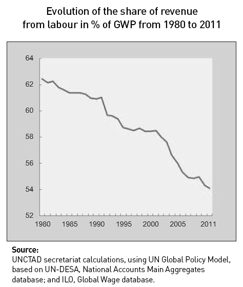
这种世界性的强劲趋势是资本从劳动中提取的剩余价值增加的结果。必须指出的是，在十九世纪的大部分时间里，增加剩余价值的主要手段是增加绝对剩余价值（较低的工资、较长的工作时间）。在发达经济体，在19世纪下半叶和整个20世纪（纳粹主义、法西斯主义除外，以及其他实行减薪的独裁政权）这被相对剩余价值的增加所取代或超越（即生产力的提高没有相应的工资增长）。经过几十年的新自由主义攻势，绝对剩余价值的增加再次成为提取剩余价值的一个主要因素，并被加到相对剩余价值中。雇主们以危机为借口，现在正在增加提取这两种形式的剩余价值，从而显示出当前攻势的严重性。
这种世界性的强劲趋势是资本从劳动中提取的剩余价值增加的结果。必须指出的是，在十九世纪的大部分时间里，增加剩余价值的主要手段是增加绝对剩余价值（较低的工资、较长的工作时间）。在发达经济体，在19世纪下半叶和整个20世纪（纳粹主义、法西斯主义除外，以及其他实行减薪的独裁政权）这被相对剩余价值的增加所取代或超越（即生产力的提高没有相应的工资增长）。经过几十年的新自由主义攻势，绝对剩余价值的增加再次成为提取剩余价值的一个主要因素，并被加到相对剩余价值中。雇主们以危机为借口，现在正在增加提取这两种形式的剩余价值，从而显示出当前攻势的严重性。
在欧盟委员会2012年3月发表的题为《希腊第二次经济调整方案》的文件中，明确指出必须降低希腊工资。这项研究比较了希腊及其邻国的最低工资：它是罗马尼亚和保加利亚平均最低工资的五倍，是匈牙利和波罗的海国家平均最低工资的三倍，是波兰和捷克共和国最低工资的两倍，高于葡萄牙或西班牙。目标是让希腊的工资更具“竞争力”，换句话说，更低。当然，如果希腊的工资像三驾马车和雇主所希望的那样被削减，爱尔兰、葡萄牙和西班牙以及更强大的经济体的工资将不得不迅速跟进。
欧洲领导人遵循一种逻辑，即增加从欧洲劳动力中提取的资本剩余价值，并允许他们在与亚洲和北美竞争对手的较量中得分。他们希望缩小数十年来一直享有的谈判选择，从而减少欧洲工会的回旋余地。在大多数欧盟国家，政府和欧盟委员会对社会权利的攻击已经成功地从根本上缩小了劳动法、集体谈判和协议的范围。前东区国家爱尔兰、意大利、西班牙和葡萄牙的情况尤其如此。他们还削减了几个国家的最低工资和养老金，从根本上减少了对裁员的保护，提高了退休年龄。
2012年期间，由于希腊、爱尔兰、葡萄牙和西班牙政府按照“三驾马车”的要求实施了残酷的紧缩政策，危机进一步恶化。在希腊，危机以来国内生产总值的总跌幅已达25%。绝大多数人口的购买力下降了30%到50%。失业率和贫困率已经急剧上升。在葡萄牙，紧缩措施变得如此暴力，使得葡萄牙人民流亡到五十年前的人口数量，当时大部分人口逃离独裁和贫困。2012年同一年，每月有1万葡萄牙人离开葡萄牙（约1050万人口中），超过1966年的移民人数。葡萄牙政府无耻地鼓励其公民离开该国，并对由此导致的失业率下降感到幸灾乐祸。然而，青年失业率接近40%。60名葡萄牙工人每小时工作2.06欧元的“发现”，甚至让比利时首相感动不已，他大喊“工资倾销！他说，这一现象似乎不是欧洲禁止社会和谐措施的结果。
爱尔兰中央统计局的数据显示，在爱尔兰，失业率已经占据了巨大的比例，自2008年以来，已有15万年轻人离开爱尔兰。自2008年危机以来，三分之一在危机前有工作的年轻工人现在失业。到目前为止，救助这些银行的成本已占到国内生产总值的40%（在2011年1560亿欧元的国内生产总值中，接近700亿欧元）。自2008年以来，381项经济活动下降了20%。都柏林政府已经确认，到2015年将削减37500个公共部门工作岗位。水费上涨导致许多家庭缺水。在西班牙，青年失业率已达到50%。自危机袭击西班牙以来，已有40万户家庭因拖欠房贷而被收回房屋。从2011年年中到2012年年中，西班牙所有成员失业的家庭增加了30万户，达到170万户，占全国家庭总数的10%。前东区国家的局势在持续下降，特别是那些已经加入欧元区的国家。
2013年12月3日，欧洲人权事务专员尼尔斯·穆日涅克斯发表了一份题为《在经济危机时期保障人权》的报告，报告显示，目前对欧洲实施的紧缩政策造成了不可原谅的后果。教育、卫生、就业、司法、住房、水和粮食等部门都受到这些政策的沉重打击。
Nils Muižnieks在本报告中指出，紧缩方案效率低下，且适得其反，特别是在卫生服务方面，以及增加公共开支以抵消其影响的可怕长期后果：
始于2008年全球金融体系崩溃的局面，已经转变为紧缩政策的新政治现实，这威胁到60多年来欧洲委员会成员国的社会团结和扩大人权保护。
[...]
其中许多紧缩措施——以削减公共支出、逐步提高税收、减少劳动保护和养老金改革为特点——加剧了本已严重的人类后果，经济危机的特点是创纪录的失业率。所有人权都受到了影响，从体面工作的权利、适当的生活水平和获得公正的社会保障、言论自由和参与权、透明度和问责制。弱势群体和被边缘化的群体在政治、经济和社会领域中遭受了极其复杂的、预先存在的歧视模式。贫穷，包括剥夺儿童权利，正在加深，并可能产生长期影响。
另一份报告于2014年2月17日由不来梅大学欧洲法律和政治中心（ZERP）的Andreas Fischer Lescano教授为奥地利工会大会（BAK）、欧洲工会联合会（ETUC）和欧洲工会研究所（ETUI）发表，也谴责欧盟的选择。费舍尔·莱斯卡诺声称，欧盟的紧缩政策是非法的，因为它们不尊重基本人权。
另一份报告，这次来自欧洲议会，关于“三驾马车”的作用和活动，于2014年3月13日通过。它指出了三驾马车任务的不透明性，并特别批评了谅解备忘录谈判缺乏透明度。
简而言之，很明显，资本在全球范围内对劳工发起了进攻。从2008年开始，欧洲的进攻是最有系统的，首先是外围国家。同时，作为资本主义制度的先锋，对危机负有责任的银行也受到了系统的保护。在任何地方，偿还公共债务都是领导人用来为践踏绝大多数人民经济和社会权利的政策辩护的主旨。如果社会运动，特别是工会，真的想克服这场毁灭性的攻击，他们就必须解决公共债务问题，揭露统治精英及其主要论点的虚假性。取消不合法的部分公共债务和没收银行，使其纳入民主控制的储蓄和信贷公共服务，是资本主义危机管理的任何替代办法的基本措施。
2012年10月，国际货币基金组织对欧洲危机恶化的原因作出了关键解释。其研究部门写道，每削减一欧元的公共开支，GDP就会下降0.9欧元至1.7欧元。英国《金融时报》编辑沃尔夫冈·门绍（Wolfgang Münchau）总结说，在这个危机时期，3%的财政调整（即公共开支减少3%）将导致GDP下降4.5%。因此，欧洲各国政府目前推行的政策导致了经济活动的下降，使得减少公共债务的数量成为不可能。正如Wolfgang Münchau所写，IMF的动机不应被误解：
国际货币基金组织没有说紧缩政策太难，太不公平，也会导致短期内的痛苦或对穷人的打击大于对富人的打击。它只是说，紧缩政策可能无法在合理的时间内实现减债的目标。
同时，国际货币基金组织总干事拉加德暗示，一些紧缩措施的出台应该在较长时间内推广，而且可能会增加一些公共支出以刺激经济，这是因为她受到来自新兴国家的国际货币基金组织成员的压力。尤其是以中国和巴西为首的金砖四国，对欧洲进口下降的“回力棒”效应感到担忧，并批评国际货币基金组织在欧洲的金融参与程度。国际货币基金组织总裁在2012年10月于东京举行的国际货币基金组织和世界银行年会上表达了这一观点。欧洲领导人显然对IMF文件或克里斯蒂娜拉加德的建议并不满意。例如在东京，默克尔政府财政部长沃尔夫冈·朔伊布勒（Wolfgang Schaüble）公开批评克里斯蒂娜·拉加德的言辞不合时宜。
Wolfgang Münchau认为，国际货币基金组织对紧缩措施深度的保留 决不会改变坚持强硬立场的欧洲领导人的态度：“欧洲决策者对自己的信誉持怀疑态度，我希望他们坚持紧缩政策，直到痛苦的结局，当政策崩溃的时候。
2012年11月14日，国际货币基金组织和欧盟委员会再次公开表达了紧张关系。克里斯蒂娜·拉加德反驳了欧元集团主席让-克洛德·容克（卢森堡）对希腊前景的乐观态度。国际货币基金组织似乎想向欧盟委员会施压，以增加其对欧洲应该采取的方向的影响力。新兴国家和美国一直在国际货币基金组织内部采取行动，以影响就欧洲危机采取的解决办法，特别是因为它们被要求提供财政捐助。
国际货币基金组织（IMF）2012年10月年会前夕发表的《世界经济展望》（World Economic Outlook）报告中有一章研究了1875年以来公共债务占GDP比重超过100%的公共债务危机事件。它分析了为解决这些危机而采取的措施。第一次世界大战后的联合王国就是这样一个例子。英国公共债务占国内生产总值的140%。英国政府实施了激进的财政紧缩政策和严格的货币政策。通过大幅削减开支，英国政府在整个20世纪20年代实现了几乎占国内生产总值7%的基本财政盈余（在支付利息之前），目的是通过严格还债来减少英国的债务。然而，公共债务并没有减少：到1930年，公共债务占国内生产总值的170%，三年后的1933年，公共债务占国内生产总值的190%以上。
英国《金融时报》（Financial Times）首席经济评论员沃尔夫（Martin Wolf）表示，英国政府政策的真正目标是打破有组织的劳动。这些政策导致了1926年的大罢工。他们传播了二战后持续了几十年的痛苦。这正是今天欧洲正在做的事情。沃尔夫建议，欧洲政策制定者和西班牙马里亚诺·拉霍伊政府希望以失业为武器，大幅压低工资。他写道，与此同时，西班牙的实际GDP正在萎缩。紧缩财政政策的努力必将进一步减少 。
沃尔夫接着断言，意大利政府受到了同样政策的启发，最后，地球上一家主要财经日报的一位明星记者发表了一篇声明，这篇声明似乎不同寻常：“但财政紧缩和在遭受货币勒死的国家降低工资的努力，可能会打破社会、政府，甚至国家。”，正如马丁·沃尔夫（Martin Wolf）几个月来一直坚持的那样，正是由于紧缩措施，各国正直奔灾难。为了支持他的分析，他指出2013年3月马里奥·蒙蒂在意大利的选举中惨败。
自2007-2008年危机爆发以来，IMF发表的几篇论文支持批评新自由主义政治方法的论点。除了上述两项国际货币基金组织的研究外，卢克·拉芬和法比安·瓦伦西亚的另一项研究值得一提。它关注的是银行业危机对公共债务的影响。根据这些作者的说法，在1970-2011年期间，发达经济体因银行业危机而增加的公共债务平均为21%，欧元区为20%，美国为24%。银行业危机导致的经济增长损失估计约为33%。欧元区和美国分别为23%和31%。
在IMF发表的另一项研究中，Fabian Bornhorst和Marta Ruiz Arranz证明，私人债务比公共债务有更严重的影响。这篇论调充分的论文完全破坏了国际货币基金组织、西方领导人和所有新自由主义者所提倡的政策，有时甚至是强加的政策。
国际货币基金组织研究人员的研究包含以下免责声明：
本工作文件不应被报告为代表货币基金组织的观点。本工作文件中表达的观点是作者的观点，并不一定代表国际货币基金组织或国际货币基金组织的政策。工作文件描述了作者正在进行的研究，并发表以征求意见和进一步辩论。
因此，尽管IMF研究人员的研究结果应该引导IMF调整目标，但IMF却固执地走上了自己甜美的意识形态道路{sweet ideological way}，摧毁了二战后取得的社会进步。
然而，我们决不能误解国际货币基金组织声明的深层含义。尽管它已经显示出与欧洲政策制定者的分歧，但这并不是要说服他们放弃有利于私有化的结构调整政策，放弃对二战后赢得的社会权利更为激烈的进攻。国际货币基金组织希望对所做的决定有更多的影响力，并将自己的影响力强加于此。虽然一些国际货币基金组织部门所做的研究或多或少包含了与主流政策相抵触的论点，但国际货币基金组织在全球的行动根本没有改变。这些是我们必须打击的行动，因为它们对绝大多数[行动]相关人口造成灾难性影响。
要全面了解工业化国家中央银行 自危机爆发以来的行动及其可能后果，就需要了解它们目前面临的困境，即它们自己创造的困境。
简单地说，各国央行都在问自己，它们能在多长时间内继续向银行体系注入大量流动性，同时维持接近零的利率，或者至少维持低于通胀率的利率。他们非常清楚，这项旨在保护银行和大型非金融公司的政策有可能产生新的投机泡沫。问题不在于这些泡沫是否会破裂，而在于何时破裂。
同时，他们知道，如果他们严重减少流动性注入，将危及大银行，最近形成的投机泡沫将破裂。除此之外，如果他们提高利率，这将使银行更加脆弱，导致更多泡沫破裂。另一个困难是，更高的利率会自动增加偿还公共债务的成本，从而加剧国家赤字。
我们将在最后一章中看到有其他选择。它们意味着激进的政治选择和变革，即停止偏袒1%最富有的人，并为99%的人的利益进行改革。然而，各国央行没有意愿改变其政策的类别内容。他们是为1%的人服务的，那是喂养他们的手。
这就使我们陷入了两难的境地：是继续他们目前政策的错误——高流动性注入和低利率——或者在遵循相同逻辑的情况下错误地改变它们。
现行的低利率、高流动性注入政策产生了以下效果：
以下是一份正在准备的已知投机泡沫清单，目前这些泡沫正在产生高回报：
即使其中一个泡沫破裂也会产生深远的影响。世行银行的Patrick Artus警告说，由于2013、下半年意大利、葡萄牙和西班牙的投机性资本回流，危机可能发生，投资者承诺的回报比新兴市场国家（如巴西、印度、印度尼西亚、南非和土耳其）更高。如果这些国家的情况恶化，或者如果其他国家提供更高的回报，这些投机性资本可以像抵达时一样迅速逃离。
当前泡沫的新特点是，它们发生在工业化国家经济停滞或增长乏力的情况下，而以前的泡沫是在经济繁荣和相当高的增长时期形成的。
由于央行和政府的政策，工业化国家的经济已经陷入凯恩斯所谓的“流动性陷阱”。在各国央行注入流动性、降低利率的同时，大银行更愿意把资源藏起来，为账面上的定时炸弹爆炸做好准备，并对冲它们正在制造的新泡沫破裂。工业和服务公司之所以不投资，是因为无论是私人需求还是公共需求都是贫乏的。他们要么坐拥巨额流动性储备，要么利用这些储备进行投机。2013年底，苹果（Apple）持有1500亿美元现金或等价物。这一数额代表整个欧盟（5亿多人）的年度预算。与此同时，全球最大的非金融公司拥有2.8万亿美元。根据另一项估计，欧洲公司正在扣留其史无前例的2.4万亿欧元国债——也就是说，是整个欧盟年度预算的16倍！
中央银行和政府采取的相同政策导致公共债务大幅增加。这是由几个相关因素造成的：
这些都清楚地表明，大部分公共债务是非法的。取消这一债务是结束危机的重要建议之一。
中央银行与资本主义系统危机
在资本主义体系中，危机起着调节者的作用。投机性泡沫破裂，然后资产价格接近其实际价值；盈利的公司下沉；资本被摧毁；失业率上升和工资降低。危机是资本主义新陈代谢的一部分。这并不是为危机或资本主义辩护，只是表明危机是资本主义运作方式的重要组成部分。到目前为止，公共干预，温和地回应雇主的要求，设法避免或防止危机履行其清除资本主义制度的正常职能。
虽然在人口中，这场危机的受害者数千万：那些对危机负责的人并没有试图清理资本主义。大公司破产的案例很少，银行没有清理账目，新的投机泡沫已经形成或正在形成。生产性投资尚未重新启动。
日本、英国和美国只有少数几家银行倒闭，这完全是由于各国央行和欧盟政府向私人银行提供了援助。掌权者认为私人银行“太大而不能倒闭”。持续偏袒大企业利益、侵害民众社会经济权利的政府政策，以及公共和私人投资不足或减少、投机性泡沫不断破灭，都是长期危机的组成部分。除非对有利于社会公正的政策进行彻底的逆转，否则这场危机将持续多年。
The national debt has given rise to joint-stock companies, to dealings in negotiable effects of all kinds, and to agiotage’, in a word, to stock-exchange gambling and the modern bankocracy
翻译1： 国债还提升了股份公司、 各种有价证券的交易、 证券投机,总之,使证券交易所赌博和现代的银行统治兴盛起来
翻译2：国家债务带动股市投机导致现代银行法西斯
从卡尔·马克思1867年写下这些话以来，银行就一直没有走上正轨。在过去的两个世纪里，他们与其他金融部门——保险公司、养老基金和其他机构——的发展方式是相当令人惊奇的（extraordinary.）。
19世纪中叶，在英国这个全球金融和银行业的主导力量中，金融业的资产占GDP的比例不到50%；三大银行的资产占GDP的比例不超过5%
2012年，仍是英国，金融业的总资产占GDP的比重超过1000%，三大银行（汇丰银行、巴克莱银行和苏格兰皇家银行）的资产总和占GDP的350%
与国内生产总值相比，这三家银行的资产负债表总额增长如下：19世纪中叶增长5%，20世纪初增长7%，50年代初增长25%，90年代末增长75%，2012年达到350%
这些数字清楚而不可撤销地表明了金融资产的总价值在过去20年中是如何激增的。其他值得注意的事态发展也发生了。
一是银行资产负债表硬资本大幅减少，杠杆系数随之提高。在19世纪中叶，硬资本通常占银行资源的25%到50%（通常是50%比25%）。2014年，这一硬资本占银行资源的3%至5%。这种情况并非英国特有；欧洲和北美的其他工业化国家也存在同样的现象。
因此，杠杆率大大增加。简单地说，在19世纪中叶，一家银行的股东提供了该银行25%到50%的资源，而银行则借入了其余的资源，这一数额大约相当于所有者的投资，因此，它的资源翻了一番。2014年，投资者带来的收益不超过3%至5%，而该银行的贷款是完成资源的20至30倍。
另一个发展是有限责任公司已经成立。直到十九世纪初，在英国，以及后来的其他欧洲国家，如果公司所有者的业务（他们全部或部分拥有）破产，他们的财产将承担全部责任。在法律上，这被称为所有者或股东的无限责任。
以一家拥有10000资产的银行为例，其中10名股东各持有5%的股份。每个股东可以持有50份。这家公司破产了，债权人索赔900英镑。500英镑的资本不足以全额偿付债权人。为确保全额付款，可以从所有股东的不动产总额中提取差额。
19世纪，世界各地的法律都进行了修改，以允许资本家限制其风险和负债。这就是有限责任公司的意思。在清算的情况下，投资者和股东只会损失他们投入公司的金额。回到我们上面的例子中，一个拥有10000财产的资本家将只承担最多50的财产；他的财产是安全的，不被没收，以偿付债权人的全部赔偿。
这就是我们所看到的控制一家只拥有3%到6%股份的公司的利益所在。如果股东带入公司的资本仅为资产负债表的5%，且主要股东持有该股权的5%，则其风险仅限于资产负债表的0.25%！
在给出的例子中，假设主要股东是贝莱德，它也拥有摩根大通5%的股份。在这种情况下，即使他对破产负有全部责任，主要股东仍有50%或2.5%的风险，而需要900%的风险来补偿其他受益人。很容易理解的是，为有限责任公司创造条件的立法者保证了对大股东的不追究责任和豁免权。在有限责任之前，投机者的风险远高于他们自己的股份，因此倾向于谨慎行事。现在，虽然大股东将一小部分财富投资于该银行的损失有限，但其余投资于其他公司的财富仍完好无损，比利时富通银行、苏格兰皇家银行的小股东，法国的德克夏或雷曼兄弟把他们大部分的储蓄委托给这些股票，损失相对更大。当然，他们的责任也是有限的，但如果他们把所有的积蓄都投进其中一家公司的股票，他们就会失去一切。
股东在法律上的有限责任鼓励大股东承担风险，因为他们的潜在损失与其全部财产的比例是有限的。这类法律鼓励道德风险，应予以废除。公司破产的成本及其所造成的一切损害应由控股股东承担，并由其财产支付。这件事将在最后一章中再次提及。
由于银行资产负债表中的总股本与所涉及的资产相比减少了很多，而且由于利润与资产金额有关，因此股本回报率要高得多（见第4章至第6章）。20世纪初，净资产收益率约为4%至6%；到20世纪末，净资产收益率为20%，2007年银行业危机爆发时达到30%。
股票流通越来越快。在十九世纪，大股东终身持有自己的股份——他们自己的、公司或银行的股份——并不少见。现在已经不是这样了。在20世纪60-80年代的经济学教科书中，可以看到股东平均持有股票8年。到1998年，这一平均期限已降至三年，2008年约为三个月。正是由于这个原因，银行开始公布季度业绩。因此，银行董事面临压力，要求不惜一切代价取得积极成果，以维持股东利益。
这种情况还有另一个后果：机构投资者（投资基金、保险公司、对冲基金、银行）能够自己推动股票下跌，并通过投机这种趋势获利。他们可以卖空或做空（short selling or short buying），高频交易。根据劳伦斯•西亚洛姆（Laurence Scialom）和盖尔•吉拉德（Gaël Giraud）的说法，“对冲基金持有股票的平均时间是10分钟”。小股东或公共机构等长期投资者是输家；控制局面的是短期投机者，几乎每时每刻都能获利。这种情况导致价格波动不稳定，这有利于投机，而投机又会引发更大的波动。
银行董事的收入猛增。1989年，美国七大银行的董事长平均年收入280万美元，约为家庭收入中值的100倍。2007年，当他们把银行带到破产边缘时，他们的平均收入是2600万美元，大约是家庭收入中值的500倍。在2006年向董事支付股票期权最高报酬的前五家美国银行中，有四家在2007-2008年破产。
从后视镜看：亚当·斯密、卡尔·马克思和银行（banks）
1776年，亚当·斯密写道：
按照这个顺序，商人和制造大师是两类人，他们通常使用最大的资本，他们的财富在公众的考虑中占了最大的份额。然而，交易商对贸易或制造业的任何特定分支的兴趣，[作者注：亚当·斯密在这里包括银行家]总是在某些方面不同于甚至相反于公众的兴趣。开拓市场，缩小竞争，始终是经销商的利益所在
亚当·斯密（关于商人和主要制造商）的以下合理建议从未得到遵守：
任何来自这项命令的新的商业法律或法规的建议，都应该谨慎地听取，并且在经过长时间的仔细审查之后，才应该被采纳，不仅要以最谨慎的态度，而且要以最可疑的注意。它来自于这样一种人的秩序，他们的利益与公众的利益从来都不完全相同，他们一般都有欺骗甚至压迫公众的利益，因此在许多情况下，他们既欺骗又压迫公众.
从我们对银行业立法演变的看法来看，政府显然忽视了亚当·斯密的建议：法律是根据银行家的利益而演变的。亚当·斯密（Adam Smith）曾建议政府严格限制银行家的自由：
但是，对少数人的自然自由的行使，可能危及整个社会的安全，现在和应该受到各国政府法律的限制；是最自由的，也是最专制的。为防止火灾传播而修建聚会墙（party walls）的义务是对自然自由的侵犯，与本文提出的银行业条例完全相同
通过拆除将商业银行与投资银行分隔开来的隔离墙，各国政府已经拆除了防火墙。立法者拒绝要求银行重建隔离墙，这是承认政府和大银行家之间的勾结.
在马克思写下介绍这一章的台词近150年后，很明显，银行家实际上只是私人投机者的协会，他们站在政府一边。利用他们所享有的特权，他们确实有能力收取公众存款，并从中央银行以较低的利率借款，以便以更高的利率再贷款给政府，赚取可观的利润。在政府的积极支持下，或至少是消极的共谋下，银行可以自由地从事金融犯罪（内幕交易、背信、欺骗、串谋欺诈、欺诈、贪污、操纵汇率和利率以及商品价格、洗钱、逃税和贿赂公务员），推翻政府，接管整个经济部门，把人民赶出家园。
再次引用卡尔·马克思的话，“国债催生了股份公司，催生了各种可转让的交易，催生了资产证券化”，换言之，催生了证券交易所的博彩业和现代银行业的统治。"
现在是时候回归民主的本义了，让银行重新在民众的控制下为社会服务。
我们的最后一章提出了一系列具体的替代方案，以应对当前动摇欧洲的危机。它提出了19项直接措施，涉及一般金融，特别是银行业。除这些措施外，它还建议将银行和保险业社会化，并将其置于公民的控制之下。然后审查了为大多数人的利益扭转危机的十项进一步措施：
这些是CADTM提出供讨论和辩论的建议。
从1980年代起，私人银行业成功地摆脱了公共当局几十年来建立和维持的限制，为了防止像1930年代那样的另一场银行业危机，那些信奉新自由主义意识形态的监管者和政府对充分利用这一形势的资本主义银行家给予了自由支配。这些事件发生的背景是，主要的金融家通过损害工人获得的社会权利来夺回他们的优势，这符合绝大多数人的利益。本次危机始于2007-2008年，但并未促使公共当局对私人资本实施严格的监管。为清理私营金融部门而采取的少数措施和设想的微不足道的机制完全不足以防止新的金融危机或遏制金融机构危险的投机行为。
1966年《世界人权宣言》所载并编入一项国际公约的经济、社会和文化权利正在受到严重损害。政府和国际机构每天都在攻击公民权利和政治权利，以利于主要的资本所有者：在救助和未来使用私人银行、公营公司和公共服务私有化或批准欧洲条约等重大问题上，不征求人民的意见。选民的选择得不到尊重，各国的宪法受到践踏，立法机构被边缘化，或沦为其他人的橡皮图章决定。
金融危机属于全球资本主义更广泛的系统性危机，涉及经济、环境、社会、政治、道德和体制等多个层面。我们需要彻底打破当今领导人的思维定势，采取紧急措施。那些对银行倒闭负有责任的人必须为救助买单，而不是现行的向那些应对经济灾难负责的人握手，而不是追究他们的责任的制度。
宣布的监管银行的措施是肤浅的。除了新的银行业规则外，还提出了集中监管欧元区银行、建立欧洲存款担保计划、禁止某些业务（仅涉及全球银行业活动的2%）、限制奖金和使银行业活动透明化的建议。然而，鉴于有待解决的问题的规模，所有这些都只是建议、承诺，或充其量完全不足以完成这项任务。需要的是严格的、普遍适用的规则。
为了摆脱这场危机，应该采取措施，影响金融世界和资本主义体系的结构。银行业太关键了，不能让私营部门来管。银行业必须实现社会化，这意味着没收银行，并由银行雇员、客户、协会和当地公共机构的代表将其置于公众的控制之下，因为银行应作为公共服务运作，银行活动产生的收入应用于公共利益。
为拯救银行而产生的公共债务显然是非法的，必须予以否认。必须进行公民审计，以确定其他非法（illegitimate）、违法（illegal）、可憎或不可持续的债务，并帮助创造动员，通过动员可以产生可信的反资本主义替代方案。
这两项措施必须是本章概述的更广泛方案的一部分，该方案应从金融部门立即采取的措施开始。
民众动员和社会自我组织对于实现下文提出的不同目标至关重要。没有他们，就不会有真正的自由解决当前危机的办法
I. Immediate measures for finance in general and banks in particular
正如导言中所提到的，世界各地银行的社会化是我们的最终目标。然而，迄今为止，旨在没收金融部门的微小但实际的措施，可以围绕一个共同的平台，将不一定有相同愿景的运动、工会、政党和个人团结起来。
以下是CADTM提出的18项具体措施。
实施这些具体措施将是银行业改革的一个进步，即使私营银行部门要保持主导地位。最近的经验表明，我们不能相信资本家拥有和经营银行。如果通过一场强有力的社会运动，我们能够实施上述措施（当然，这些措施还可以进一步改进），资本家们仍然会寻找一切可能的办法来收复失地。他们将努力寻找规则的方法，他们将利用所有的权力来赢得立法者和政府官员对银行和金融部门的新放松管制的目的，以最大限度地提高他们的利润，而不考虑大多数人的利益。
二 、在大众控制下实现银行业的社会化
银行业社会化有许多令人信服的理由。首先，资本家们一再表明，他们有能力犯下的罪行和他们愿意承担的风险，以增加他们的利润，而从不承担后果的责任。此外，他们不负责任的行为经常给社会造成沉重负担。第三，我们要共同建设的社会必须建立在共同利益、社会正义和恢复人与人、人与自然之间的公平关系的基础上。我们要实现的是“彻底剥夺银行业的权利”。
银行业的社会化意味着：
我们用“社会化”而不是“国有化”来表示公众监督的重要性，以及高管、员工代表、客户/用户和协会、地方官员以及国家和地区银行机构代表之间的决策共享。我们必须民主地确定如何实施积极的民众控制。同样，我们必须促进银行业雇员密切监测银行活动，以及他们积极参与决定必须做什么和如何做。银行董事会必须每年对其管理情况进行说明。我们必须优先考虑高质量的本地服务，这将有悖于当前的外包政策。应鼓励金融机构的员工提供真正的建议，并远离激进的销售方式，这种方式相当于强迫人们购买他们不需要的金融产品。
将银行业社会化并将其纳入公共服务，将有可能：
正如帕特里克•索林（Patrick Saurin）正确地指出的那样，“现在已经到了不再是银行亏损必须社会化的时候了，而是银行自身、锁、股和桶的时候了。”{ but the banks themselves, lock, stock and barrel}
三、 保险业社会化与公共服务
考虑到银行业和保险业在已经发展起来的庞大全能银行中的相互依赖程度；以及大型保险集团在决策上与银行一样不负责任，同时责任更轻，因此也有必要将私营保险业社会化。按照全国抵抗委员会（全国抵抗委员会）起草的方案，法国保险公司在1945年底大型银行被国有化后，于1946年4月被国有化。
四、 有利于绝大多数人的复苏的进一步措施
减少公共赤字本身并不是目的。事实上，在某些情况下，赤字可以用来刺激经济活动，并投资于改善那些遭受危机的人的生活条件。一旦经济复苏，必须减少公共赤字，而不是削减社会支出，而是通过增加税收，打击逃税，对主要公司的利润和富人家庭的收入和资产征收更高的税率，以及征税金融交易。无论如何，在增加税收的同时减少占50%最贫穷人口的税收负担是绝对有可能的。
为了减少赤字，我们还必须从根本上减少偿还公共债务的费用。首先，必须取消非法、不可持续、可憎和非法的部分。必须削减的开支是与军队和其他社会无用和环境危险项目有关的开支，如建造新机场或新高速公路。
另一方面，必须增加社会支出，特别是应对经济萧条的后果。我们还必须增加对可再生能源和公共交通、学校和医院等基础设施的投资。通过公共支出和家庭需求刺激经济也会带来更多的税收。
除了刺激就业和经济之外，这场危机还必须成为打破资本主义思维、彻底改变社会的一个机会。这种新的思维方式，必须摆脱生产主义，融入对环境的尊重，摒弃一切形式的压迫，促进共同利益。
为了实现这些目标，我们必须在当地和国际上组织一场反对紧缩的大规模运动，以汇集必要的力量，打破权力平衡，支持这种以社会和环境正义为中心的根本变革。
五、 结束不公平的紧缩措施
结束反社会的紧缩措施是一个绝对的优先事项。通过街头动员和罢工以及拒绝缴纳不受欢迎的税收，人们必须迫使政府取消紧缩政策。
六、 识别非法、不可持续、可憎和非法的公共债务
一些国家正在进行的公民审计引发了丰富而激动人心的辩论，澄清了什么可以被定义为不必偿还的公共债务。我们可以提出以下定义，但不必说详尽无遗：
对公共控制下的公共债务进行普遍审计，在某些情况下，加上主权国家单方面拒绝继续偿还公共债务，将有可能取消/否决公共债务中不合法、可憎、不可持续和非法的部分，并大大减少其余部分。救助银行所产生的公共债务显然是非法债务。在一些国家，这甚至可能是非法的。这肯定是不可持续的，希腊、塞浦路斯和爱尔兰也是如此。
“三驾马车”从希腊、葡萄牙、爱尔兰和塞浦路斯索取的债务是非法的（违背普遍利益）、可憎的（侵犯合同关系和经济及社会权利）、不可持续的（考虑到相当一部分人的生活条件急剧恶化）在某些情况下是非法的（希腊的情况也是如此，因为三驾马车与希腊政府的勾结施加了压力而违反了宪法）。
为什么要削减公共债务？
为什么我们负债累累的政府要通过取消非法债务来大幅削减公共债务？
首先，以社会正义的名义，也以经济的理由，让每个人都能理解。
以符合民众合理预期的方式走出危机，通过公共支出和家庭支出刺激经济活动，根本不够。即使增加了税收，偿还公共债务也会完全吸收任何盈余。富裕家庭和大型私人公司将支付的税款将由它们作为主要股东的公共债券所获得的回报来补偿（这就是为什么它们强烈反对取消债务的想法）。因此，必须取消大部分公共债务。
取消的程度将取决于每个国家债务的具体特点和受其影响的人民的认识水平（在这方面，大众审计发挥着重要作用），以及经济和政治危机的发展方式。尤其重要的是，权力的平衡将通过现在和将来在街道、工作场所和所有公共场所的民众动员而演变。在希腊、葡萄牙、爱尔兰、西班牙和塞浦路斯等一些国家，取消债务问题迫在眉睫。在德国、荷兰、法国、比利时、奥地利、英国和美国等国，这还不是一个紧迫的问题。然而，最终，大多数国家将不得不面对债务偿还的不可持续性。
暂停付款 。那些已经被投机者、国际货币基金组织和欧共体等其他机构勒索的国家，应该呼吁单方面暂停偿还债务。这项提议在受危机影响最严重的国家中已相当受欢迎。单方面暂停偿付必须与公民对政府借款的审计相结合，后者应提出证据和论据，证明拒绝偿付被认定为非法的部分债务是正当的。CADTM在其若干出版物中显示，这种性质的单边主权决定的法律基础既存在于国际法中，也存在于国内法中。
拒绝与反社会措施相关的债务减免。我们不能接受债权人决定的债务减免，因为他们提出了沉重的要求作为回报。自2012年3月起实施的部分希腊债务削减计划的条件是，希腊必须采取更多措施，侵犯希腊人民的经济和社会权利以及国家主权。它的真正意图是让主要在法国和德国的外国私人银行减少损失；让希腊私人银行从财政部获得新资金；让三驾马车加强对希腊的控制。希腊的公共债务在2009年达到了国内生产总值的130%，在部分取消债务后，在2012年达到了157%，2013年达到175%。我们必须揭露希腊减债的欺诈行为，并提出我们的选择：取消债务（即债务国否认债务），这是一种合法的单方面主权行为。
审计以确定那些对可憎、不可持续、非法或非法债务负责的人。普遍的审计使人们能够确定债务承包过程中的责任，并要求责任人（无论是在国家一级还是在国际一级）面对其行为的后果。如果审计发现与非法债务有关的非法行为，则必须对其犯罪者（无论是自然人还是道德人）定罪并要求其支付赔偿。应禁止他们从事与信贷机构有关的任何工作（银行可吊销其银行执照），如果其行为的严重性应受到此类惩罚，则不得免除监禁。现在是时候对承担非法债务的公共当局提起法律诉讼了。
谁来付账？ 持有债务证券的私人机构和富人理应承担取消非法主权债务的责任，这是合乎逻辑的，因为他们对正在发生的危机负有主要责任，并从中实际获利。让他们付出代价只是朝着社会公正迈出的一小步。
因此，重要的是确定担保持有人，以补偿那些低收入或中等收入者。识别债务证券持有人的方法是停止支付，因为他们将不得不站出来要求偿还。这将有助于政府补偿小型公债持有者。此外，
当公共债务被取消时，那些投资于公共证券的小储户，以及那些将其部分社会保障缴款（养老、失业、医疗或家庭福利）投资于经营同类证券的机构或机构的工薪阶层和养老金领取者，都可以得到很好的保护。
公共债务中被认定为合法的部分必须通过向受益者寻求帮助来减少。确保他们支付运营成本的一个方法是对累积财富的前10%征收特别累进税。这项税收的收入可用于预期偿还已确定为合法的那部分债务。还有其他的可能性有待讨论。
处理债务的其他措施 。 国家预算用于偿还公共债务的部分必须根据国家的经济能力和公共当局的偿还能力加以限制，同时保证社会商定的社会支出水平。我们应该学习二战后德国的做法：1953年《伦敦协定》将德国的债务减少了62%，并规定债务/出口比率不应超过5%。
还必须建立一个法律框架，以避免2007-2008年开始的危机重演。必须禁止私人债务的社会化，必须有义务组织公众参与的对公共债务政策的永久性审计。必须废除对与非法债务有关的犯罪的法定限制，非法债务必须视为无效。此外，必须有一个金科玉律，即不能削减基本人权方面的公共开支，优先于偿还债务的开支。显然有很多选择。
七、取消不符合规定的和非法的私人债务 VII. Cancelling illegitimate and illegal private debt
在世界各地，作为房地产投机背后的驱动力，私人银行滥用了数以百万计的家庭抵押贷款。当泡沫破裂，拖欠还款的情况蔓延时，他们没收了抵押财产，驱逐了居民。这种情况发生在美国、西班牙、爱尔兰、冰岛和几个东欧和中欧国家。必须取消非法债务，甚至是非法债务，因为这些债务对数十万家庭或更多家庭造成严重后果，并尽可能防止止赎。
银行和私立大学将数十万学生推入无法容忍的非法债务中，以此欺骗他们。如前所述，美国的学生贷款约为1万亿美元。这些学生贷款债务也必须取消。
八、改善公共资源和减少不平等的税收
1980年以来，最高收入者和大公司的直接税持续下降。因此，数千亿欧元的财政捐赠基本上都是为了投机和最富有阶层的财富积累。自1975-1980年以来，不平等现象呈加剧趋势，最富有的1%和10%控制的总财富份额急剧上升。2010年，最富有的1%拥有欧洲总财富的25%。这或多或少地与资产阶级相对应，令人印象深刻的一部分财富集中在那里。如果我们把这项研究扩展到最富有的10%，我们会发现总财富的60%掌握在少数人手中。我们可以假设，额外的9%代表了广义上的资本主义阶级的随从或盟友。剩下的90%的人只能靠总财富的40%生活，而在90%的人中，最穷的50%只拥有5%的财富。
刚才所说的欧盟可以扩展到世界其他地方；从地球的北部到南部，我们看到最富有的一部分所拥有的财富份额有了惊人的增长。
我们可以将这项研究扩展到一个更为无限小的少数群体：1987年，地球上最富有的1/2000万成年人口由150人组成，每个人的平均收入为15亿美元。16年后的2013年，最富有的1/2000万人口为225人，人均财富为150亿美元，每年增长6.4%。最富有的0.1%（全球人口的千分之一）拥有世界20%的财富，最富有的1%，50%。如果我们把最富有的10%的财富考虑在内，托马斯·皮凯蒂估计，它占世界总财富的80%到90%，而最不富有的50%的人所拥有的财富不足5%。这给了我们一个重新分配所需努力的想法。这种再分配要求没收人口中最富有的一部分所拥有的大部分财富。
让我们回到欧洲。为了实现更大的社会公正（减少最富有阶层的收入和财富，以增加大多数人口的收入和财富），必须对税收进行深刻的改革，同时在欧洲一级进行协调，以防止财政倾销。其目标是增加公共资金，部分是通过对最富有的实体个人的收入征收累进所得税（没有理由不将边际所得税率提高到90%甚至100%）、对超过一定数额的财富征税以及公司税。
2013，欧盟的国内生产总值约为14兆7000亿欧元。欧洲家庭的总私人财富约为70兆欧元。仅最富有的1%就拥有约17.5万亿欧元（70万亿欧元的25%）。下一个9%的富人持有24.5万亿欧元（35%）。中间的40%持有24.5万亿欧元（35%）。剩下的50%拥有3.5万亿欧元（5%）。
欧盟委员会的年度预算约占欧盟GDP的1%。考虑到欧盟最富有的1%人所持有的财富的年税为1%欧元，比目前的欧盟预算高出1750亿欧元，大约是1450亿欧元，那么5%的税呢？如果能够在欧洲层面进行社会动员，甚至是在单一欧盟国家层面上带来政策的根本改变，这就让我们知道什么是可能实现的。
对欧盟最富有的1%的资产征收33%的特别税（每一代征收一次），将产生近6万亿欧元（相当于欧盟年度预算的40倍）。那么80%的没收率呢？
这些数字表明，在考虑对资本家私人财富征税的问题时，什么是利害关系，以及提出将这些钱用于社会正义的建议的可能性。许多经济学家不断地重复这样一种观点：对富人征税是没有意义的，因为他们中很少有人认为收益率不会太大。然而，随着时间的推移，最富有的1%的人集中了大量的有形和无形资产，因此一项针对最富有的1%或2.5%（或也许是最富有的10%）的政策将为打破新自由主义提供实质性手段。
对于那些声称财富无法获取的人来说，因为财富可以轻易跨越国界，我们必须反驳说，隔离、冻结金融资产、高额罚款和控制资本流动，是对付勾结资本外逃的银行的有力工具。
收入的增加必须伴随着获得基本商品和服务（基本食品、水、电、暖气、公共交通、学校用品等）的成本的迅速下降，例如通过对这些重要商品和服务大幅和有针对性地降低增值税（销售税）。同样，必须对居住者免征房地产税，以立即减轻60%或70%最不富裕人口的税收负担。
另一个需要是制定一项税收政策，鼓励通过对污染行业进行劝阻性征税来保护环境。
九、 合法的公共借贷
为了改善人民的生活条件，一个国家必须能够借钱，例如，为公共事业提供资金。如果做出正确的政策选择，其中一些工作可能由当前预算提供资金。然而，政府借款可能是必要的，以资助大型项目，如公共交通网络，将提供一个环境友好的替代道路运输。或者可以用清洁的替代能源替代核电站，在全国特别是城市或郊区新建或重新开通地方铁路，建设和改造公共建筑和公共住房，同时提高能源利用率和质量。
必须确定公共借款透明度的新标准：贷款必须有助于改善生活条件，同时摆脱损害环境的必要条件；借款的使用必须有助于实施财富再分配方案，以减少不平等。金融机构、大公司和富裕家庭必须依法购买国家发行的非指数债券，利率为0%，金额与其总财富成比例。其他储户将获得国家担保的公共债券，其指数高于通货膨胀率3%。因此，如果一个国家的年通货膨胀率是3%，债券的名义年利率将是6%
这种积极的歧视（类似于美国在反对种族压迫的斗争中，印度在支持最低种姓或促进两性平等方面的做法）将有助于实现更大的财政公正和更公平地分享财富。
此外，各国央行和欧洲央行（欧元区国家）必须以接近0%的利率为国家预算提供资金。
十、 发展和扩大公共服务
20世纪公共服务的发展，直到20世纪80年代新自由主义的转变，是社会进步的一大进步。今天剩下的必须得到保护，已经私有化的部门应该重新社会化，公共/集体服务模式应该扩展到新的部门。教育、卫生、公共交通、电信、互联网、广播电视、邮政、水利、垃圾收集和处理、地方保健服务、地方和地区行政服务，消防和民防是公共服务应该垄断或发挥主导作用的部门。公共/集体服务结构应扩大到银行和保险业。我们还将能源部门列入名单，因为这对确保生态过渡至关重要。
必须为公共服务部门分配足够的资金，使它们能够履行其使命，并正确支付其工作人员的工资。必须改善工资、人权、工作保障和工作条件。大众控制是高质量服务的重要组成部分。
十一、合并公共养老金计划
二十世纪的另一个基本胜利是建立了一个普遍和强制性的公共养老金计划。这些结构必须逐步巩固，以全面取代私营部门。当人们有资格领取养老金时，我们拒绝增加年龄。这当然是可行的，办法是普遍减少工作时间，相应增加劳动力（包括公共服务工作），从而增加为养恤金计划缴款的工人人数。
十二、减少工作时间，以社会公正的工资政策保证充分就业
更公平地分享财富是应对危机的最好办法。在过去的几十年里，员工的财富比例已经严重减少，而金融家和企业则增加了利润，并利用利润进行投机。增加工资使工薪阶层生活得更好，同时也使更多的资源可用于执行社会政策和加强退休计划。
在不降低工资的情况下减少工作时间，但创造相应数量的工作岗位，可以改善生活条件，并开辟职位供他人填补。工作时间的大幅减少还允许消费者社会以外的其他生活方式选择，这对社会关系产生了有害影响。创造的自由时间将使更多的人能够参与政治、社会和志愿活动，以及文化创意，正如一群西印度知识分子在2009年的一个平台上所说的，“高度必要的产品”。事实上，我们需要一种新的思维方式来取代自由市场社会猖獗的异化和物化。
必须大幅度提高最低和平均工资水平和福利。另一方面，无论是在公共部门还是在私营部门，公司董事如果获得不可接受的高薪酬，其收入都应受到限制。股票期权、超额奖金和退休福利，以及其他滥用收益，必须被定为非法。必须创造最大的收入。如上所述，我们建议最大工资差为1到4，考虑到一个人的全部收入，然后再征税。
十三、重新考虑欧元
对希腊等一些国家来说，重新考虑加入欧元区是绝对必要的。很明显，这是塞浦路斯、希腊、爱尔兰、葡萄牙乃至西班牙的束缚。如果我们在这里不把这个问题同其他备选方案一样重视，那是因为这是一场总的辩论，在社会运动和左翼政党内部往往是分裂的。这确实是一个需要长时间讨论才能充分处理的重大议题。正如Costas Lapavitsas所说，如果各国想放弃欧元，它们可以选择向左或向右。我们在这里的主要关切是，围绕上述重大问题，特别是有关银行和债务的建议，团结尽可能多的人。我们必须把分歧的问题留给以后的辩论。
十四、另一个欧洲（An alternative Europe）：用真正民主的宪政进程取代现行条约
必须废除欧盟、欧元区和欧洲央行条约中的若干条款；例如《里斯本条约》第63条和第125条，禁止对资本流动进行一切控制，并禁止向困难成员国提供一切援助。《稳定与增长公约》和欧洲稳定机制（ESM）也必须撤销。
必须彻底改革货币政策以及欧洲央行的地位和做法。创建欧洲央行的各国政府和欧盟为自己配备了一种新的工具，用以摧毁社会和民主权利。
中央银行和欧洲央行必须获得授权，直接向那些寻求社会和环境方案支持的国家提供资金，这些方案完全适合满足其人民的基本需求。必须废除现行条约，代之以在真正民主的宪政进程框架内起草的新条约。
这是以普选制宪会议为前提，然后举行全民投票，接受新起草的宪法。其目的是在各国人民之间建立一个团结一致的协定，以实现更多的民主、更好的就业和生态转型。
一个建立在团结与合作基础上的欧洲将能够背弃拖累它的压迫性竞争力。作为危机根源的新自由主义政策已经惨败。他们压低了社会指标，削减了社会权利、就业和公共服务。从这次危机中获益最多的少数人，是在多数人的权利问题上大打出手的。骗子赢了，受害者必须买单！这种思维方式是所有欧盟创始文本和条约的基础，必须被打破。以国家间合作和各国人民团结为基础的另一个欧洲必须成为优先事项。
必须实施欧洲一级的全球政策，由大量公共投资提供资金，在基本部门（地方服务、清洁和可再生能源、环境保护和提供基本社会必需品）创造公共就业机会。建立一个新的政治体系将需要欧洲人民在起草一部新宪法时进行合作，该宪法将构建一个完全不同的欧洲。
这个新的民主欧洲必须努力实施不可谈判的原则：经济和社会正义、两性平等、旨在提高生活质量的决定、裁军和大幅削减军费、可持续的无核能源选择、大幅减少温室气体排放和禁止转基因生物。欧洲还必须结束其被视为威胁的“围城”政策，成为全球南方国家和人民的真正盟友和伙伴。第一步应该是无条件废除第三世界债务。废除债务是南北斗争的共同点。必须出现一个新的欧洲，它将重新思考自己的态度和与世界其他地区的关系，把几个世纪以来在欧洲统治下被掠夺和偷走的东西归还给其他大陆的人民。
除非欧洲人民动员起来，站起来，通过他们自己的组织和活动，成为他们自己解放的行动者，否则这些建议不会成为现实。
自2014年3月31日法文原版Bancocratie付印以来，哪些重大发展影响了本卷所述问题？
私营金融系统没有采取旨在避免进一步危机的措施。政府和各有关部门为了确保法规得到尊重和改进，已经搁置或大大削弱了2008-2009年宣布的微不足道的措施。银行的集中度保持不变，其高风险活动也保持不变。有更多的丑闻牵涉到欧洲和美国的十五至二十家最大的私人银行——涉及有毒贷款、欺诈性抵押贷款、操纵外汇市场、利率（特别是伦敦银行同业拆借利率）和能源市场、大规模逃税、有组织犯罪洗钱等等。
当局只是罚款，与所犯的罪行相比，通常可以忽略不计。这些罪行不仅对公共财政，而且对全世界数百万人的生活条件产生了负面影响。监管机构负责人，比如伦敦金融行为管理局（Financial Conduct Authority）前局长马丁惠特利（Martin Wheatley）因努力做好自己的工作，对银行的行为过于挑剔而被解雇。英国财政大臣乔治奥斯本（George Osborne）在2015年7月解雇了马丁惠特利（Martin Wheatley），当时距离他5年的合约结束还有9个月。
虽然这显然是罪魁祸首，但美国或欧洲（除冰岛外）没有银行董事被定罪，而交易员仅仅是下属，他们被起诉并被判处5至14年的监禁。
正如苏格兰皇家银行（rbs）在2015年的情况一样，为了保护主要私人股东的利益，以巨额公共支出将银行国有化，但这些银行却以其价值的一小部分被出售给了私人部门。挽救苏格兰皇家银行花费了450亿英镑的公共资金，而它的重新估值可能意味着将再损失140亿英镑。我们已经看到同样的事情发生在荷兰的SNS Reaal和ABN Amro银行，爱尔兰的AIB集团（爱尔兰联合银行），或是葡萄牙已经倒闭的西班牙银行（Banco Espirito Santo）的一部分。在任何情况下，公共财政的损失都是巨大的。
欧洲央行的政策经历了表面的变化，但没有什么深远的影响。自2015年初以来，这家总部位于法兰克福的机构开始实施积极的量化宽松政策，每月从欧洲私人银行购买价值600亿欧元的债券。欧洲央行鼓励银行创造结构性产品，然后购买。它还从实施新自由主义政策的国家购买担保债券和主权债务票据。同时，欧洲央行以0.05%的利率（自2014年9月起生效的利率）向私人银行贷款。
美联储已经停止了量化宽松政策，从2008年到2014年一直在实施。它不再从银行购买结构性抵押担保证券。2014年初，它宣布自2006年以来首次加息。从理论上讲，这应该在2015年年底之前实现；但中国经济可能出现的负面下跌导致了犹豫。事实上，加息必然会吸引大量资本流入美国，在当前全球经济疲弱的背景下，这将推高美元对其他货币的汇率，从而导致美国出口减少。此外，许多私人公司在债务再融资的时候可能会遇到麻烦。再加上偿还公共债务的成本将自动增加。尽管这最后一个因素在美联储的犹豫中可能没有多大作用，但对新兴经济体的影响将是非常负面的，因为它们的大量资本将被转移到美国以获得更好的回报和安全。
无论是央行的政策还是政府采取的政策，都未能成功地促进生产性投资。大型私人公司正坐在大西洋两岸流动性的大山上。对于欧洲的非金融公司来说，这意味着超过1000亿欧元的资金仍留在公司债券中，而不是用于增加投资和提高生产率。公司大量地利用利润，特别是在股票市场上买进自己的股票，以期保持价格上涨，或防止股价下跌，并确保股东获得丰厚的回报。与此同时，以股息形式分配给股东的利润份额继续上升，这当然意味着投资的动力甚至更少。
显然，政府和中央银行的政策正在造成股市的投机泡沫。这个泡沫随时可能破裂。2015年，这一现象在中国开始，在欧洲和美国迫在眉睫。
与此同时，一些主要原材料（如石油、固体矿产等）的价格正在下跌，石油价格的大幅下跌结束了美国页岩气的繁荣，使得该行业的许多公司濒临破产。委内瑞拉和尼日利亚等石油输出大国受到油价下跌的严重打击。
银行统治的一个关键论点是，中央银行和政府正在追求两大目标：第一，拯救大型私人银行、其主要股东和最高管理层，同时保证他们的特权将继续下去。毫无疑问，如果不是中央银行的行动，大银行将倒闭，政府将被迫对其董事和主要股东采取强有力的措施。第二个目标是参与和支持资本对劳工的进攻，从而增加企业利润，使欧洲大企业在全球市场上更具竞争力。美联储、英国央行、欧洲央行和日本央行都有这两个目标。
欧洲央行本身还有两个相互补充的具体目标。首先是捍卫欧元，欧元对欧元区较弱的经济体乃至整个欧洲人口都是一种束缚。欧元是一种工具，既服务于大型私营企业，也服务于欧洲的统治阶级，即最富有的1%。欧元区国家采用欧元后，不能使其货币贬值。然而，如果欧元区较弱的经济体要想在欧洲经济巨头德国、法国、比荷卢联盟（比利时、荷兰和卢森堡）和奥地利面前再次变得有竞争力，它们完全有兴趣贬值。事实证明，对希腊、葡萄牙、西班牙或意大利等国来说，加入欧元区是一个金融陷阱。在危机时期，欧洲当局及其国家政府实行他们所谓的内部贬值：他们压低工资，唯一的好处是管理大型私营企业。欧洲央行的第二个具体目标是加强对欧洲主要经济体（尤其是德国、法国和比荷卢经济体）的控制，这些经济体是欧洲最大的私营企业的总部所在地。这意味着在最强大和最弱的经济体之间保持明显的不对称关系。
2015年1月，希腊反紧缩左翼联盟的胜利被欧洲央行、欧盟委员会、大公司和欧盟所有其他政府（不仅是欧元区政府）视为直接威胁。击败激进左翼联盟的项目成为欧洲央行和所有欧洲领导人的主要目标；他们最终在2015年7月实现了这一目标。欧洲央行实际上在财政上扼杀了希腊，迫使齐普拉斯政府屈服。为了避免投降，齐普拉斯政府本可以求助于替代性的解决方案，如《银行管理法》最后一章所述。他们应该利用希腊公共债务真相委员会的审计结果。相反，他们选择了一条更温和的道路，尽管这条道路注定会导致失败。
然而，在过去几年中，人们已经清楚地看到，自2007-2008年危机以来，随着新自由主义紧缩政策的加强，民众准备选择激进的解决办法。这一点从激进左翼左翼联盟在希腊的提议越来越受欢迎可见一斑，西班牙的波德莫斯，甚至英国的杰里米·科尔宾和美国的伯尼·桑德斯。2015年7月希腊投降的中心教训之一是，我们需要有决心执行他们所要求的措施的政治力量，将它们纳入一个与体制相违背的连贯方案。另一个教训是，左翼政府必须真正处理非法债务、私人银行、税收和公共服务等问题。这是实现社会公正的必由之路，也是启动能源和环境转型的必由之路，为了99%的人的利益，没有其他解决危机的方法。
ABS: Asset Backed Securities 资产支持证券
BIS: Bank for International Settlements 国际清算银行
BNP: Banque Nationale de Paris 巴黎国家银行
BPCE: Banque Populaire-Caisse d’Épargne (French banking group) 法国人民银行 （法国银行集团）
BRICS: Brazil, Russia, India, China and South Africa 金砖五国：巴西、俄罗斯、印度、中国、南非
CADTM: Committee for the Abolition of Third World Debt 废除第三世界债务委员会
CAIC: Internal Auditing Commission for Public Credit (in Ecuador) 公共信贷内部审计委员会（厄瓜多尔）
CDO: Collateralised Debt Obligation 债务抵押债券{脉络债务义务}
CDS: Credit Default Swap 信用违约互换
CFTC: Commodity Futures Trading Commission 商品期货交易委员会
CMBS: Commercial Mortgage Backed Securities 商业按揭证券
CoCo: Contingent Convertible (bond) 应急可转债： 应急可转债是具有救助功能的可转债，其作用在于当银行资本充足率低于某一最低值要求时，应急可转债可以被强制性地转化为普通股，吸收损失。应急可转债可以有效平衡较高资本充足率要求与企业盈利发展之间的矛盾关系，避免在市场状况不佳时难以补充到资本，具有逆周期型，可以增强银行抵御周期性系统风险的能力
EBA: European Banking Authority 欧洲银行管理局
EBRD: European Bank for Reconstruction and Development 欧洲复兴开发银行
ECB: European Central Bank 欧洲中央银行
EFSF: European Financial Stability Facility 欧洲金融稳定基金：是为了应对欧洲主权债务危机所特设的基金组织(即坏帐银行)，由欧元区成员国提供资金，以解决欧洲主权债务危机。由欧元区27个成员国同意设立于二零一零年五月九日，以维护欧洲金融稳定，并提供财政援助以帮助欧元区国家解决经济困难的目标。该基金的总部设立于卢森堡市。债券管理服务与行政支持，该基金由欧洲投资银行提供服务水平合同
EFTA: European Free Trade Association 欧洲自由贸易联盟
ESCB: The European System of Central Banks 欧洲中央银行体系：是由欧洲中央银行和27个欧盟成员国的中央银行所组成
ESM: European Stability Mechanism 欧洲稳定机制是一个针对欧元区国家的永久的危机解决机制。它的目的是为那些正在经历或者已经受到严重的融资问题威胁的ESM成员国提供稳定支持，支持手段主要是通过一系列的金融援助工具对成员国实施救助。另一方面，为了达到救助目的，ESM有权通过在资本市场和货币市场发行金融工具来筹集资金。
EU: European Union 欧盟
EURIBOR: Euro Interbank Offered Rate 欧元同业拆借利率
FBF: Fédération de Banques Françaises or French Banking Federation 法国银行或法国银行联合会
FDIC: Federal Deposit Insurance Corporation (USA) 美国联邦存款保险公司
Fed, The: the Federal Reserve of the United States 美联储
FOMC: Federal Open Market Committee (USA)联邦公开市场委员会（美国）
GAO: Government Accountability Office (USA) 美国审计署
GDP: Gross Domestic Product国内生产总值
GWP: Gross World Product 世界生产总值
HFT: High Frequency Trading 高频交易：是指利用大型计算机快速押注买卖股票、期货等，从那些人们无法利用的极为短暂的市场变化中寻求获利的计算机化交易
HSBC: Hong Kong & Shanghai Banking Corporation 汇丰银行：香港上海银行股份公司
ICAN: International Citizen (Debt) Audit Network 国际公民（债务）审计网
IMF: International Monetary Fund 世界货币基金组织
IRS: Internal Revenue Service (USA) 美国国税局
ISDA: International Swaps and Derivatives Association 国际互换和衍生品协会
LBO: Leveraged Buy-Out 杠杆收购
LIBOR: London Interbank Offered Rate 伦敦银行间拆借利率
MBS: Mortgage-Backed Securities 按揭证券
MMF: Money Market Fund 货币市场基金
NATO: North Atlantic Treaty Organisation 北大西洋公约组织：北约
OECD: Organisation for Economic Co-operation and Development 经济合作与发展组织：经和组织
OMT: Outright Money Transactions 直接货币交易
RBS: Royal Bank of Scotland 苏格兰皇家银行
RMBS: Residential Mortgage-Backed Securities 住宅按揭证券
SEC: Securities and Exchange Commission (USA) 美国证券交易委员会
SIV: Structured Investment Vehicle 结构性投资工具
SNS: Samenwerkende Nederlandse Spaarbanken, a Dutch retail bank 荷兰合作储蓄银行，荷兰零售银行
SPV: Special Purpose Vehicle 在证券行业，SPE指特殊目的实体、特殊目的的载体也称为特殊目的机构，其职能是购买、包装证券化资产和以此为基础发行资产化证券，是指接受发起人的资产组合，并发行以此为支持的证券的特殊实体。
UBS: Union de Banques Suisses 瑞士银行联合会
UKTI: UK Trade & Investment (government agency) 英国贸易与投资（政府机构）
UN: United Nations联合国
VAT: Value Added Tax 增值税：是指对纳税人生产经营活动的增值额征收的一种间接税。是以商品（含应税劳务）在流转过程中产生的增值额作为计税依据而征收的一种流转税。从计税原理上说，增值税是对商品生产、流通、劳务服务中多个环节的新增价值或商品的附加值征收的一种流转税。实行价外税，也就是由消费者负担，有增值才征税没增值不征税
WTO: World Trade Organisation 世界贸易组织
Asset backed security (ABS)：资产支持证券在证券化操作中，指转让人和投资者之间的中间实体（SPV）发行的证券的通用术语。这是一种担保。当支持这些证券的资产（称为基础资产）由次级贷款等抵押贷款构成时，它们被称为抵押贷款支持证券（MBS）。住房抵押贷款证券又分为住房抵押贷款支持证券（RMBS）、个人抵押贷款支持证券和商业抵押贷款支持证券（CMBS）。当标的资产是公司或银行发行的债券时，使用术语“债务抵押债券”（CDO），当这些资产是银行贷款时，使用术语“贷款抵押债券”（CLO）。
Asset资产:属于个人或企业的，有价值或有能力赚钱的东西。资产的反面是负债，即资产负债表中反映公司资源（合伙人投入的资本、或有事项和费用准备金以及未偿债务）的部分。
Balance资产负债表:公司资产（公司拥有的）和负债（公司欠的）的年终报表。换言之，资产提供了有关公司所募集资金的使用情况；负债提供了有关这些资金来源的信息。
Bank for International Settlements (BIS) 国际清算银行是一个成立于1930年的国际组织，负责促进国际货币和金融合作。它还充当中央银行的银行（55个国家中央银行和欧洲央行是成员）。
Banker’s guarantee银行担保 ： 银行担保是指银行承诺在客户违约的情况下偿还客户的债务。在这种情况下，银行只借出它的签名。债券市场：中长期资本以债券形式借贷的市场。债券是公司或国家发行的债权人股份。
Bond债券：债券是公司或政府机构发行的债券的股份。债券持有人，即债权人，有权获得利息和本金偿还。如果公司上市，持有人也可以在证券交易所出售债券。
BRICS countries 金转国家巴西、俄罗斯、印度、中国和南非五个主要的新兴国家经济体的GDP总和相当于世界总产值的20%。成立于2001年的金砖四国，直到2010年12月南非加入。
Contingent Convertible Bonds (CoCo)应急可转债：发生预先指定的触发事件时可转换为权益的债务
CDO债务抵押债券：债务抵押债券。CDO一词涵盖了为金融资产构建票据产品的多种方式。其中包括债券、贷款，有时还包括非上市股票。 这种衍生工具使银行能够正常地使非流动债务具有流动性，从而提高资产的可交易性。从买家的角度来看，CDO也应该通过稀释风险来降低风险，因为一束信用卡违约的可能性比一张信用卡要小。事实上，由于缺乏关于CDO构成的明确信息，而且CDO往往与高风险资产结合在一起，这使得CDO成为一种风险很大的产品。
CDS（Credit Default Swaps）信用违约互换是一种保险，金融公司可以购买，以保护自己免受不付款。
Central bank在某一特定国家负责发行钞票和控制货币信贷量的机构。在法国，由欧洲中央银行（见欧洲央行）主持的法兰西银行（Banque de France）承担这一角色，而在英国，则是英国央行（Bank of England）。
CFTC:商品期货交易委员会是一个监管美国期货市场的美国监管机构
CLO:抵押贷款债务是金融机构持有的债务证券化的一种形式。一个同质的商业贷款组合被提供给外部投资者出售，并通过发行最常规的证券来进行融资，以吸引最大的投标数量。
CMBS（另见资产支持证券）：商业抵押贷款支持证券
Collateral:如果借款人违约，可转让资产或作为偿还贷款担保的担保。
Commodities:在商品市场上交换的商品，传统上是原材料，如金属、燃料和谷物。
Common goods在经济学中，普通商品的特征是集体所有，而不是私有或公有。在哲学上，这个词指的是从法律、政治或道德的角度来看，一个社区的成员所共有的东西，无论是一个城镇还是整个人类。
Corporate bonds公司债券公司为在货币市场筹集资金而发行的证券。这些债券类似于政府债券，但被认为比政府债券和抵押贷款支持证券等其他担保证券风险更大，因此支付的利率更高。
Credit derivative信用衍生产品：与贷款或债务有关的金融产品。它们用于转移与金融产品相关的风险，同时保留和保险原始资产。最常见的形式之一是信用违约互换（CDS）。
Debt refinancing债务再融资：用新贷款偿还当前债务。`
Deposit or commercial bank 存款或商业银行：为个人、公司和公共机构开展业务的银行，涉及收取存款，然后以贷款形式重新分配或用于促进投资业务。公众的存款有国家担保。存款银行不同于投资银行，投资银行的大部分业务都与市场有关。
Derivatives:衍生产品：主要包括期权、期货、掉期及其组合的金融产品系列，所有这些产品都与其他资产（股票、债券、原材料和商品、利率、指数等）相关，这些资产本质上是不可分割的——股票期权、指数期货合约，等等。它们的价值取决于这些其他资产的价值，并从这些其他资产的价值中衍生出来。有涉及固定承诺（货币期货、利率或外汇掉期）的衍生品，也有涉及有条件承诺（期权、认股权证等）的衍生品
Emergency Liquidity Assistance (ELA)紧急流动性援助（ELA）：欧元区央行借给私人银行的紧急资金
Equity:权益：股东投入企业的资本。不要与“硬资本”或“无担保债务”混淆。
ESM:欧洲稳定机制：欧洲稳定机制是管理欧元区金融危机的欧洲实体，自2012年以来，该机制已取代欧洲金融稳定基金和欧洲金融稳定机制，后者是针对欧元区公共债务危机而实施的。它只涉及欧元区成员国。如果欧元区的稳定受到威胁，这家欧洲金融机构应该向一个或多个困难国家提供金融“援助”（贷款）。这项援助有严格的条件。
Euro Interbank Offered Rate (EURIBOR)欧元银行同业拆借利率：欧元区使用的银行同业拆借利率。每日重新计算，这是欧元区57家最具代表性银行组成的一个小组实现的交易的平均值。从一周到十二个月的期限有十五种欧元银行间同业拆借利率。
European Banking Authority (EBA)欧洲银行管理局（EBA）：负责监管欧洲银行体系的机构，与欧洲证券和市场管理局（ESMA）和欧洲保险和职业养老金管理局（EIOPA）这两个构成欧洲金融监管体系的组成部分。
European Central Bank (ECB)欧洲中央银行（ECB）：欧洲中央银行是一家总部设在法兰克福的欧洲机构，成立于1998年，欧元区国家已将货币权力转移到该机构。它的官方作用是通过在该区域内打击通货膨胀来确保价格稳定。其三个决策机构（执行局、理事会和总理事会）由成员国中央银行行长和/或公认专家组成。根据其章程，它在政治上是“独立的”，但它受到金融界的直接影响。
Eurozone:欧元区：欧洲的一个地区，由十九个以欧元为共同货币的欧盟国家组成：奥地利、比利时、塞浦路斯、爱沙尼亚、芬兰、法国、德国、希腊、爱尔兰、意大利、拉脱维亚、立陶宛、卢森堡、马耳他、荷兰、葡萄牙、斯洛伐克、斯洛文尼亚和西班牙。九个国家（保加利亚、克罗地亚、捷克共和国、丹麦、匈牙利、波兰、罗马尼亚、瑞典和联合王国）是欧盟成员国，但不使用欧元。在加入欧元区之前，一个国家必须在欧洲汇率机制（ERM II）中呆两年。
The Fed or Federal Reserve美联储（Fed）或美联储（Federal Reserve）：（官方称为联邦储备系统）是1913年由《联邦储备法》（Federal Reserve Act）创建的美国中央银行，也被称为《欧文玻璃法》（Owen Glass Act），此前发生了一系列银行业危机，特别是1907年的“银行恐慌”。
Financial contracts金融合约：亦称“对冲工具”，包括利率期货合约、掉期合约、所有商品及商品期货合约、买卖金融工具期权合约及所有其他期货工具。
Financial instruments金融工具：金融工具包括金融证券和金融合同。
Financial market金融市场：长期资本市场。它包括一个主要市场，在那里出售新的发行物，和一个二级市场，在那里现有的证券交易。除了受监管的市场外，还有场外交易市场，这些市场不需要满足最低条件。
Financial proceeds财务收益：公司在会计年度内获得的与金融资产（证券、银行账户、货币、投资）相关的收益。
Financial securities金融证券：包括公司以股份（股票、持股、投资凭证等）形式发行的权益性证券、债务性证券（债券和类似证券，不包括商业票据和储蓄凭证）、可转让证券集体投资企业（UCITS）的持股或股份。
FSB:金融稳定委员会（FSB）：金融稳定委员会是2009年4月伦敦G20会议期间成立的一个非正式经济组织。它接替了自1999年七国集团成立以来一直运作的金融稳定论坛（FSF）。该委员会由26个国家金融机构（中央银行和财政部）、几个制定金融稳定标准的国际组织和团体组成。其存在的理由是在金融机构的监督和观察领域开展合作。
Futures market期货市场：购买或出售产品（金融工具、货币、商品）的市场，其付款和交货期推迟至确定价格的初始交易日之后。
Futures:期货：期货合约是一种标准化的预先承诺，在一个有组织的期货市场上进行谈判，以在指定的时间（“交割日期”）和地点交付特定数量的精确定义的标的资产。期货合约是世界上交易最广泛的金融工具。
G20:20国集团：20国集团（G20）是由19个国家和欧盟组成的集团，其部长、央行行长和国家元首定期会晤。它是在1990年代一系列金融危机之后于1999年创立的，目的是鼓励就扩大对话的原则进行国际协商，以适应某些国家日益增长的经济重要性。其成员有阿根廷、澳大利亚、巴西、加拿大、中国、法国、德国、意大利、印度、印度尼西亚、日本、墨西哥、俄罗斯、沙特阿拉伯、南非、韩国、土耳其、美国、英国和欧盟（由理事会主席和欧洲央行主席代表）。
GDP:国内生产总值（GDP）：国内生产总值（GDP）——某一特定地区内总产量的总和，等于增加值之和。众所周知，这项措施是不完整的；例如，它没有考虑到任何不进行商业交换的活动；国内生产总值同时考虑到商品生产和服务生产。经济增长是指国内生产总值从一个时期到另一个时期的变化。
Goodwill:商誉：公司资产负债表上的资产与其有形资产和无形资产之和之间的差额。当一家公司控制另一家公司时，收购公司通常支付高于净资产价值的价格。商誉一般由品牌等无形要素构成，这些要素是主观评价的。
Government debt政府性债务：指国家、地方、国有企业和社会保障机构的未偿债务总额。
Gross debt总债务：这一概念不包括政府资产。根据《欧洲稳定与增长公约》（SGP），债务是一个合并的总债务，这意味着它既不考虑公共资产，也不考虑公共行政部门之间的债务。以一个有几个人的家庭为例：按照SGP项目的理解，家庭债务是这些人的总债务的总和，但不包括他们可能相互借出的任何款项。债务也不会因家庭物品的价值而减少，如汽车或房屋。
Guarantees:担保：为债权人提供担保以补充债务人承诺的行为。实际担保（留置权、质押、抵押、优先担保）和个人担保（担保、担保、意向书、独立担保）之间存在区别。
Hard capital硬资本：股东提供的资本加上未分配利润（留存收益）。
Hedge funds对冲基金：出于投机目的而寻求高回报的非上市投资基金，自由使用衍生品，特别是期权，并经常利用杠杆。主要的对冲基金独立于银行，尽管银行经常有自己的对冲基金。对冲基金属于影子银行的范畴。
IFRS:国际财务报告准则。国际会计准则理事会为上市公司或依赖投资者的公司制定的会计准则，目的是统一列报方式，确保其财务报表的清晰度。
Institutional investors机构投资者：汇集大量资金并投资于证券、不动产和其他投资资产的实体。它们主要是银行、保险公司、养老基金以及所有集体投资于可转让证券的组织。
Interbank market银行间市场：银行之间交换金融资产并在短期内借贷的市场。银行间市场也是欧洲中央银行（ECB）干预以提供或收回流动性（管理货币供应以控制通胀）的地方。
Interest:利息：作为投资报酬支付或由贷款人收到的金额。利息是根据投入或借入的资本额、经营期限和确定的利率计算的。
Internet bubble互联网泡沫：互联网或技术泡沫是一个投机性泡沫，它影响到“技术证券”，即与计算机和电信相关的部门的证券，在20世纪90年代末的股票市场上，在2000年3月达到顶峰。
Investment funds投资基金：私募股权投资基金（有时称为“共同基金”）寻求根据其最专业的某些标准对公司进行投资：资本风险、资本开发基金、杠杆收购（LBO），这些标准反映了公司的不同成熟度。
Investment or merchant bank投资或商业银行：从事三种业务的金融公司：咨询（特别是合并和接管）、公司财务管理（增资、上市、发行证券）和市场投资。投资银行不是向公众募集资金，而是通过向银行借款或在货币市场上融资。
ISDA:ISDA：国际掉期及衍生品协会，是一个私人实体，其成员是从事衍生品交易的银行。
ISDAFIX:ISDAFIX：全球通用的互换交易固定利率的参考值或基准。这是一项屏幕服务，在选定的到期日，每天为六种主要货币提供平均中端市场互换利率。ICE基准管理局于2014年8月1日正式担任ISDAFIX管理员。
Junk Bonds垃圾债券：美国高风险债券的昵称，也称为高收益债券，由偿付能力被认为可疑的公司发行。这类债券被评级机构认为是高度投机性的。
Layering:分层：在实际购买之前假装出售的技巧。交易者将一系列的出价提高到最高限价，从而产生层层的订单。一旦达到上限，交易者就会大量卖出，同时取消所有剩余的订单。这项技术的基础是希望在竞争对手的销售账本上填上从其他交易者那里购买的报价。
LBO:杠杆收购：杠杆收购，通过债务融资收购或收购一家公司。最常见的杠杆收购是由控股公司进行的，控股公司借入购买目标公司股票所需的大部分资金，重组公司，然后要求用于偿还贷款的股息，最后在公司恢复盈利后再出售。
Leverage:杠杆率：这是为投资而借入的资金与支持它们的个人资金或股本之间的比率。一家公司的借款额可能远远超过其资本价值，在这种情况下，它被称为“高杠杆”。公司杠杆率越高，向公司贷款的风险就越高；但与自身价值相比，公司可能实现的利润也越高。
Liabilities:负债：资产负债表中包含公司可用资源（合伙人提供的权益、风险和费用准备金、债务）的部分。
LIBOR:伦敦银行同业拆借利率。根据一组有代表性的银行进行的交易，每日计算的平均利率。从一天到十二个月，大约有十种不同的货币和十五种期限利率的伦敦银行同业拆借利率。
Liquidities:流动性：一个经济体或公司在某一时间点所拥有的资本。缺乏流动性会迫使公司清算，经济衰退。
Liquidity:流动性：指在不发生重大价格变动的情况下购买或出售金融工具的工具。
Lobby:游说团体：游说团体是一个组织起来的实体，通过对掌握权力的个人或机构施加压力或影响来代表和捍卫特定群体的利益。游说包括采取行动，直接或间接影响立法措施、标准、条例的起草、执行或解释，更广泛地说，影响公共当局的任何干预或决定。
LTRO:长期再融资业务。LTRO是欧洲中央银行通过3个月至3年的信贷以极低的利率向私人银行提供大量现金的一种机制。
Market activities / trading市场活动/交易：买卖股票、期货、衍生品、期权和认股权证等金融工具，以期获得短期利润。
MBS:按揭证券：按揭证券；见ABS。
Memoranda of Understanding谅解备忘录：在这方面，希腊政府和“三驾马车”之间关于财政援助的协议。
Merger-Takeover合并收购：合并收购是指一个或多个公司解散但未清算，将其全部资产（包括资产和负债）转移给现有或新公司的操作。
MMF:货币市场基金：货币市场基金-投资证券的共同投资基金，包括货币基金。
Money market货币市场：银行、保险公司、公司和国家（通过中央银行和国库）根据需要借贷资金的短期市场。
Moral hazard道德风险：当债权人或经济行为人的行为受到一定风险的保护时，对其行为的影响。他们将更有可能承担风险。因此，例如，在不设置任何条件的情况下救助银行，会增加银行的道德风险。
Mortgage:抵押贷款：以财产作抵押的贷款。有两种抵押：1）最常见的形式是将贷款用于购买的财产用作抵押品；2）更广泛地使用财产来担保任何贷款：借款人拥有和使用财产作为抵押品就足够了。
Mutual funds共同基金：见，投资基金。
Non-financial corporations非金融公司：生产非金融产品和服务的所有经济代理人。它们代表着生产活动的最大份额。`
OECD:经合组织：经济合作与发展组织，成立于1960年。它包括主要工业化国家，自2010年以来已有34个成员国
Off-Balance-Sheet表外活动：表外活动是指不需要公司或银行支付或收取资金，但使其面临一定风险的活动。这些通常是尚未付款的未决合同。
Over-The-Counter market (OTC)场外交易市场（OTC）：场外交易市场是指卖方和买方之间直接进行交易的不受监管的市场，而不是有监管机构的所谓有组织或受监管的市场，如证券交易所。
Payable:应付款项：一个人（债务人）或一群人欠另一个人（债务人）的款项 任务大纲）。
Pension funds养老基金：管理资本化退休计划的投资基金。他们由一家或几家公司的雇员出资，这些公司通常也部分由雇主出资。其目的是支付参加该计划的雇员的养老金。养老基金管理着大量的资金，这些资金通常投资于股票市场或金融市场。
PIK:PIK：PIK（实物支付）或PIK贷款是一种贷款，其特点是利息的支付不一定以货币支付。利息可以通过另一种债务证券、借款公司发行的证券或通过发行股票购买期权等方式支付。
Private equity私募股权：私募股权或投资资本是指对私人公司进行的一种特定形式的机构投资，目的是为其发展、转型和扩张提供资金。最常见的私募股权形式是风险投资，即投资于创新型初创企业的创建和发展，以及杠杆收购
Profit:利润：公司活动产生的正收益。净利润是税后利润。可分配利润是可分配给股东的净利润的一部分。
Property bubble房地产泡沫：房地产泡沫是整个房地产市场的投机泡沫。它的特点是房地产价格急剧上涨；这意味着房地产价格与工资和租金等基本经济决定因素的变化之间存在巨大而持久的差距。
Proprietary trading产权交易：自有账户的存款交易（banks trading for their own account.）
Quote stuffing报价填充：一种快速进入和撤回大量订单的策略，试图用竞争对手必须处理的报价充斥市场，从而减缓交易频率。
Rating agency评级机构：评级机构，或信用评级机构，评估信誉。这包括公司、非营利组织和政府的信誉，以及“证券化资产”——这些资产被捆绑在一起，作为证券出售给投资者。评级机构给每一种债券指定一个字母等级，这代表了一种观点，即该组织在到期时偿还本金和利息的可能性。评级按降序排列：AAA是最高的，然后是AA、a、BBB、BB、B等。BB或更低的评级被视为“垃圾债券”，因为它可能违约。评级分配涉及许多因素，包括该组织的盈利能力和总负债。三大信用评级机构是穆迪、标准普尔和惠誉评级。
Recapitalisation:资本重组：重组或增加一家公司的股本，以增强其在亏损后的权益。当这些银行被欧洲国家纾困时，它们通常是在没有附加条件的情况下进行资本重组，而这些国家也没有获得它们参与银行资本本应给予它们的决策权。
Secondary market二级市场：机构投资者转售和购买金融资产的市场。因此，二级市场是已经存在的金融资产交易的市场。
Share:股份：公司或金融资产的所有权权益单位，占总股本的一小部分。其所有人（股东）有权获得所分配利润的同等比例（股息）并出席股东大会。
Sovereign debt主权债务：政府债务或政府担保的债务。
Sovereign Wealth Fund主权财富基金：主权财富基金或主权财富基金是一个国家拥有的投资基金。它的资金来源是高价值原材料的出口或巨额贸易顺差。在2013，这些基金管理了大约5兆2000亿美元的资产。{兆：trillion：万亿}
Speculative bubble投机泡沫：当一个市场（金融资产市场、货币兑换市场、房地产市场、原材料市场等）的交易价格水平远高于被交换货物或资产的内在（或基本）金融价值时，就形成了经济、金融或投机泡沫。在这种情况下，在买方信念的影响下，价格偏离了通常的经济估值。
Stockbroker:股票经纪人：为客户在股票市场上买卖订单并收取费用或佣金的公司或个人。
Stock exchange or Stock market证券交易所或证券市场：以前在一级金融市场发行的证券（股票、债券和股票）买卖的市场。由二手可转让证券交易商组成的证券市场也被称为二级市场
Structured product结构化产品：结构化产品通常是由银行设计的产品。它通常是期权、掉期等的复杂组合。它的价格由数学模型决定，数学模型将产品的行为建模为时间和市场各种演变的函数。结构性产品通常以高利润率销售，但对购买者来说能见度很低。
Subordinated debt securities次级债务证券：在支付利息和偿还本金方面的权利排在（或从属于）另一类或多类债务之后的证券。
Subprime mortgage crisis次贷危机：这场危机始于2007年的美国，涉及次贷，被认为风险最高。它引发了2007-2011年的金融危机。它对包括部分贷款在内的证券化债务的怀疑意味着金融机构彼此失去信心，导致危机。
Systemic banks系统性银行：某些银行之所以被称为系统性银行，是因为它们的规模和一旦倒闭将给全球银行体系的稳定带来的危险。
Tax haven避税天堂：具有以下五个独立标准的地区：（a）不透明（通过银行保密或信托等其他机制）；（b）低税收，有时对非居民来说低至零；（c）允许设立前沿公司的简单规定，不需要这些公司在境内进行真正的活动；（d）与其他国家的税务、海关和/或司法部门缺乏合作；（e）弱或不存在的金融监管。瑞士、伦敦金融城和卢森堡获得了避税天堂的大部分资本。当然还有其他一些国家，比如开曼群岛、海峡群岛、香港和其他异国情调的地方。
Toxic asset有毒资产：在二级市场消失时失去流动性的资产。有毒资产代表纯粹损失，因为任何潜在的购买者将不支付与其初始成本相当的费用。“有毒资产”一词是在2008／09的金融危机中创造的，涉及抵押贷款支持证券、抵押债务和信用违约互换，其中没有一个可以出售，从而使持有者遭受巨大损失。
Troika:三驾马车：欧洲央行、欧盟委员会和国际货币基金组织。
Transatlantic Trade and Investment Partnership (TTIP)跨大西洋贸易和投资伙伴关系：欧洲联盟和美国之间拟议的自由贸易协定。
Universal bank环球银行：环球银行有时被称为金融超市，它代表着一个大型金融机构，集合在一起，在提供银行保险的同时，涵盖商业（存款）银行和投资银行的活动。
Unsecured debt无担保债务：在公司或银行进行清算的情况下，有几个级别的债务担保：有担保、优先和无担保。无担保债务是在其他债务已全部或尽可能全部偿付后最后一次偿付的债务。根据剩余资产的不同，无担保债权人可能会得到他们所欠债务的一小部分，甚至什么也得不到。当公司向无担保债权人和/或非优先债权人借款时，这就有理由提高利率。
Yield:收益率：投资的收益率。这是指从证券中获得的利息或股息，通常每年以投资成本、当前市场价值或面值的百分比表示。
略